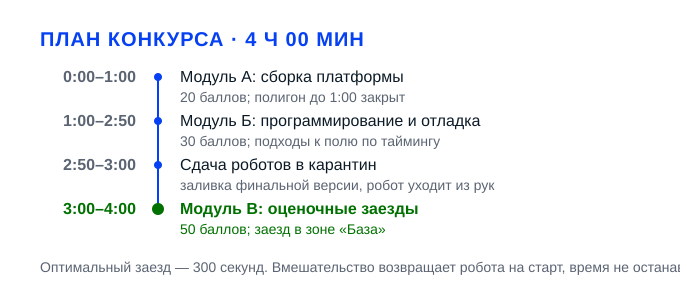
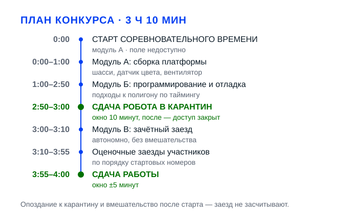
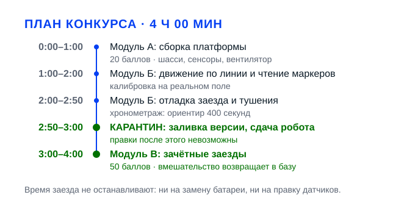

Робототехника (Р,О)
Задания ниже — официальные файлы «Абилимпикс» (источник: abilympics-russia.ru), разложенные по категориям. Решения написаны по тексту задания, регламенту и критериям оценки; в них указано, что именно проверяет эксперт.
Школьник
14–16 лет, базовый уровень заданияВыдержка из официального конкурсного задания: страницы, относящиеся к категории «Школьник» (стр. 5–8 источника).
Пошаговое решение
Конкурсное задание по компетенции «Робототехника» для школьников длится 3 часа 10 минут и разбито на три модуля: час на сборку платформы (20 баллов), два часа на программирование и отладку (30 баллов) и десять минут на зачётный заезд (50 баллов). Мобильный робот стартует из зоны «База», автономно идёт по маршрутной линии мимо помещений, датчиком цвета читает маркеры на полу — зелёный означает, что помещение безопасно, красный означает условный очаг возгорания, — заезжает в нужное помещение, гасит свечу потоком воздуха от вентилятора, не касаясь её, и возвращается в «Базу». Маршрут и помещение с очагом здесь известны заранее, а маркер служит подтверждением правильности действий, поэтому баллы теряются не на логике поиска, а на механике и на непроверенной программе. Оптимальное выполнение миссии — 300 секунд, а любое вмешательство возвращает робота на старт без остановки отсчёта.

Задача 1. Понять задание и подготовить площадку к сборкеМодуль А · 20 баллов
Первый час отдан сборке, но начинается он не с балок, а с понимания поля. Пока робот не собран, у вас есть редкая возможность спокойно разобрать маршрут, посчитать повороты и маркеры, разложить набор и проверить электронику до того, как она окажется закрученной в раму. На этом этапе закладывается всё, что потом оценивают в модуле А: аккуратность конструкции, работоспособность узлов и отсутствие переделок, каждая из которых съедает минуты из двух часов программирования.
Действие 1.1. Разобрать задание на этапы и нарисовать схему поля
Шаг 1.1.1
Берём лист А4 и рисуем план поля сверху: границу рабочей зоны, стартовый квадрат «База», маршрутную линию с поворотами, помещения вдоль неё и квадратные цветовые маркеры на полу рядом с входами. Отдельным цветом отмечаем помещение, где по условиям категории стоит свеча, и стрелками показываем направление обхода. На рисунок уходит минут пять, зато дальше он работает как карта: по нему вы считаете повороты, длину пути и число маркеров, которые должна отработать программа.
Схема нужна потому, что робот выполняет ровно ту последовательность, которую вы заложили, и каждая забытая деталь поля превращается в потерянные баллы модуля В, где разыгрывается 50 из 100. В категории «Школьники» маршрут и помещение с очагом известны заранее, и это преимущество надо использовать целиком: посчитанные повороты и маркеры — это заранее написанные блоки программы, а не импровизация в зачётные десять минут.
На листе видны все элементы: база, линия, каждое помещение, каждый маркер с подписанным цветом. Проверьте себя вопросом: если закрыть глаза и попросить перечислить повороты по порядку, вы их назовёте без запинки? Если нет — перерисуйте крупнее и подпишите номера.
Типичная ошибка — считать, что «поле я и так помню»: на площадке поле может отличаться числом помещений и длиной линии, а по памяти вы напишете программу под чужую конфигурацию и потеряете заезд целиком. Вторая ошибка — рисовать схему после сборки, когда времени на разбор уже нет.
Эксперт подходит к рабочему месту в первые десять минут модуля А и смотрит, есть ли у участника план поля: наличие схемы и размеченных этапов он отмечает как понимание задания, а не как формальность.
Шаг 1.1.2
Разбиваем миссию на этапы так, как они описаны в задании: старт из «Базы», выход на линию, движение по маршруту с чтением маркеров, заезд в помещение с очагом, тушение вентилятором, возврат на линию, финиш в «Базе». Каждому этапу подписываем два условия: по какому событию он начинается и по какому заканчивается — например, «начался, когда датчик увидел красный маркер», «закончился, когда энкодер отсчитал 40 сантиметров».
Программа без явных условий перехода превращается в набор пауз, и робот разваливает миссию на первом же сбое: не увидел маркер, но поехал дальше по таймеру. Разложенные этапы дают вам каркас, в который потом аккуратно вставляются блоки, а на защите — готовый ответ на вопрос «как работает ваш робот», который прямо входит в критерии оценки.
Для каждого этапа записано событие начала и событие конца, и ни один этап не висит «просто на времени». Прогоните список глазами: если у этапа нет условия выхода, значит, при сбое робот останется в нём навсегда.
Ошибка — описывать этапы словами «проехать немного», «повернуть куда-нибудь»: такая формулировка не превращается в код. Вторая — забыть этап возврата, и тогда даже успешное тушение не даёт баллов за завершённую миссию.
На защите эксперт просит перечислить этапы миссии по порядку и назвать условие перехода для каждого: расхождение между рассказом и поведением робота он фиксирует отдельно.
Шаг 1.1.3
Считаем бюджет времени заезда: на всю миссию отводится около 300 секунд, при этом сам зачётный модуль длится 10 минут и включает подготовку к старту. Прикидываем по схеме длину маршрута, делим на рабочую скорость платформы и добавляем по 2–3 секунды на чтение каждого маркера и 3–5 секунд на тушение, а также 5 секунд на развороты. Полученную сумму записываем на схеме рядом с маршрутом.
Время — такой же ресурс, как баллы: если робот едет слишком медленно, он не успевает вернуться в «Базу» до конца заезда, и половина миссии не оценивается. Если слишком быстро — теряет линию на поворотах. Посчитанный заранее бюджет позволяет выбрать скорость осознанно, а не подбирать её наугад в последние двадцать минут модуля Б.
Расчёт сходится с запасом хотя бы в 20 процентов: например, при маршруте около восьми метров и скорости 0,2 метра в секунду чистое движение занимает 40 секунд, значит, запас времени огромный и скорость можно поднимать. Если расчёт даёт больше 300 секунд, скорость или маршрут надо менять до заезда.
Ошибка — считать только время движения и забыть про паузы на маркерах и развороты: именно они съедают запас. Вторая — гнать на пределе скорости двигателей, теряя линию на каждом повороте. В итоге робот либо не доезжает, либо сходит с линии на скорости.
Эксперт сверяет заявленный бюджет времени с фактическим заездом: если робот выходит за 300 секунд, он отмечает миссию как незавершённую, даже когда свеча погашена.
Действие 1.2. Разложить набор и проверить электронику до сборки
Шаг 1.2.1
Вскрываем набор, который выдаёт организатор, и раскладываем содержимое по лоткам: отдельно балки и рамы, отдельно оси, втулки, колёса, отдельно крепёж по размерам, отдельно электроника — контроллер, моторы, датчик цвета, вентилятор, батарейный блок, кабели. Крепёж удобно рассыпать по ячейкам крышки или по бумажным стаканчикам с подписью длины, чтобы не искать винт 25 миллиметров среди винтов 40 миллиметров.
Сборка занимает всего час, и в нём каждая минута поиска детали — это минута, не потраченная на конструкцию; за аккуратность сборки и работоспособность платформы в модуле А дают 20 баллов из 100. Разложенный набор ещё и показывает нехватку: если в спецификации есть деталь, а в лотке её нет, вы узнаете об этом сразу, а не в середине сборки.
Все группы деталей на местах, количество совпадает со спецификацией набора, ничего не потеряно под столом. Быстрая проверка: назовите любую деталь из инструкции и найдите её за пять секунд. Если деталь находится дольше, значит, раскладка не работает.
Ошибка — высыпать весь крепёж в одну кучу: половина времени сборки уйдёт на перебор, а недокрученный винт потом выпадет на поле. Вторая — начать собирать, не пересчитав детали, и обнаружить нехватку, когда рама уже собрана.
Эксперт обходит рабочие места в начале модуля А и отмечает организацию: разложенный по группам набор, подписанный крепёж и свободную зону сборки он относит к культуре производства, а кучу деталей — к спешке.
Шаг 1.2.2
До сборки проверяем каждый электронный узел по отдельности: подключаем контроллер к питанию и убеждаемся, что он включается и показывает индикацию; по очереди подсоединяем моторы и даём короткий импульс на 0,5 секунды, чтобы убедиться, что вал крутится в обе стороны; вентилятор проверяем от того же питания; датчик цвета проверяем, поднеся к нему красный и зелёный лист бумаги и посмотрев показания в мониторе порта.
Проверка до сборки экономит часы: неисправный мотор, закрученный в раму, приходится вынимать вместе с редуктором, а датчик, который не видит цвет, обнаруживается только на поле, когда половина модуля Б уже потрачена. Работоспособность платформы — прямой критерий модуля А, и она подтверждается демонстрацией, а не словами.
Каждый узел отдельно отработал: контроллер включается, оба мотора крутятся в две стороны, вентилятор дует, датчик различает красный и зелёный и показывает разные значения. Запишите эти значения на схеме — они пригодятся при настройке порогов.
Ошибка — проверять всё сразу после сборки: непонятно, что именно не работает, и поиск неисправности превращается в перебор всей конструкции. Вторая — проверять датчик на цветной картинке с экрана вместо бумаги: экран даёт засветку и другие значения.
При демонстрации модели эксперт просит включить робота и показать каждый узел по отдельности: уверенный запуск без подсказок и понимание назначения деталей он отмечает как владение платформой.
Шаг 1.2.3
Проверяем питание: измеряем напряжение батарейного блока и записываем значение, ставим свежие элементы или заряжаем аккумулятор, а запасной комплект держим рядом с роботом. Отдельно проверяем, что разъём батарейного блока сидит плотно и не выдёргивается от лёгкого потягивания за провод — на поле вибрация от моторов вытряхивает плохо вставленные разъёмы.
Замена батареек во время зачётного заезда не останавливает отсчёт времени, поэтому садящееся питание — это не техническая мелочь, а прямые секунды из 300 и риск не доехать до базы. Кроме того, при низком напряжении контроллер перезагружается, и робот просто встаёт посреди маршрута, а вся миссия обнуляется.
Напряжение в норме для вашей платформы, разъём держится, запасной комплект питания лежит в зоне и подписан. Проверьте под нагрузкой: дайте обоим моторам поработать 10 секунд и снова измерьте напряжение — просадка не должна быть глубокой.
Ошибка — поставить батарейки «на глазок», без замера: к концу модуля Б они садятся, и на заезде робот теряет скорость или перезагружается. Вторая — оставить запасной комплект в рюкзаке, а не рядом с полем.
Эксперт смотрит на питание перед заездом: подсевшие батареи без запасного комплекта рядом с полем он трактует как неготовность к длительной автономной работе и снижает оценку устойчивости.
Задача 2. Модуль А. Собрать платформу, которая держит линию и возит вентиляторМодуль А · 20 баллов
Сборка — это не «собрать красиво», а собрать так, чтобы через час работы моторов конструкция не разболталась, датчик цвета не съехал на два миллиметра и не перестал видеть маркер, а поток вентилятора попадал в фитиль свечи, а не в стену помещения. Все решения по геометрии принимаются здесь и почти не поддаются исправлению в модуле Б, поэтому сборка идёт по порядку: сначала жёсткая рама, потом точная геометрия колёс, затем датчик на выверенной высоте и только в конце — исполнительный механизм.
Действие 2.1. Собрать жёсткое шасси с правильной геометрией колёс
Шаг 2.1.1
Собираем основание: соединяем две продольные балки двумя поперечными, ставим угловые косынки или дополнительные балки по диагонали, затягиваем крепёж поочерёдно — сначала наживляем все винты, потом дотягиваем крест-накрест, как колесо автомобиля. Размеры берём по схеме, но проверяем не линейкой, а диагоналями: расстояние между противоположными углами рамы должно совпадать с точностью до 2–3 миллиметров.
Перекошенная рама — это перекошенные оси, а значит, робот едет не прямо, а по дуге, и регулятор движения по линии вынужден постоянно бороться с уводом. Жёсткость нужна ещё и потому, что на поле робот получает удары на поворотах и при заезде в помещение: разболтавшаяся рама меняет углы колёс, и программа, отлаженная утром, к заезду перестаёт работать.
Диагонали равны, рама лежит на ровной поверхности без качания, все винты затянуты и не проворачиваются. Нажмите на угол рамы: она не должна играть и скрипеть. Дополнительно приложите угольник к углам: перекос виден сразу.
Ошибка — затянуть крепёж по порядку сборки, не наживив всё сразу: рама стягивается с перекосом, и потом его не видно, но он есть. Вторая — сэкономить на косынках, и рама начинает складываться на первом же ударе.
Эксперт покачивает раму рукой и ищет люфты: жёсткое основание с равными диагоналями он отмечает как качество сборки, а играющую раму — как дефект модуля А.
Шаг 2.1.2
Ставим моторы симметрично относительно продольной оси, на одинаковом расстоянии от края рамы, валами в одну сторону. Оси моторов должны быть параллельны друг другу и перпендикулярны продольной оси рамы: проверяем угольником или замером расстояния между валами спереди и сзади — расхождение не больше миллиметра. Крепление моторов делаем на два винта минимум, с гайками или в зажим, чтобы корпус не проворачивался.
Симметрия моторов определяет, поедет ли робот прямо при одинаковой мощности на оба колеса. Даже небольшой перекос превращается в постоянный увод, который программа вынуждена компенсировать, и на прямых участках робот едет «змейкой» — а это лишние сантиметры ошибки на каждом маркере и потеря устойчивости на скорости.
Расстояние между валами спереди и сзади одинаково, валы параллельны, корпуса моторов не проворачиваются рукой. Прокрутите колесо: вал вращается без заеданий и без осевого люфта больше 1 миллиметра. Покачайте колесо из стороны в сторону — люфт оси недопустим.
Ошибка — крепить мотор на один винт «чтобы быстрее»: под нагрузкой корпус поворачивается, и робот начинает уезжать в сторону. Вторая — ставить моторы на разной высоте, из-за чего рама перекашивается при движении.
Эксперт проверяет симметрию моторов замером расстояний между валами и считает крепёж: мотор, посаженный на один винт, он отмечает как недоделку сборки.
Шаг 2.1.3
Ставим колёса на оси так, чтобы они оказались в одной плоскости с рамой, без перекоса, и добавляем третью точку опоры — шариковую опору или свободный ролик спереди либо сзади, в зависимости от компоновки. Центр масс платформы должен попадать внутрь треугольника, образованного двумя ведущими колёсами и опорой: батарейный блок и контроллер ставим так, чтобы основная масса была ближе к ведущим колёсам.
Третья точка опоры нужна для стабильного чтения маркеров: без неё робот качается на двух колёсах, датчик цвета то приближается к полу, то удаляется, и показания скачут. Смещённый центр масс приводит к пробуксовке ведущего колеса и к потере линии на разгоне, а на повороте робот может опрокинуться и получить механическое повреждение.
Робот стоит на трёх точках без качания, при лёгком толчке возвращается в исходное положение, колёса вращаются свободно и не трут о раму. Наклоните поле на пару градусов — робот не должен опрокидываться.
Ошибка — поставить тяжёлый батарейный блок на самый край рамы: робот клюёт носом, опора перегружена, датчик «смотрит» в пол. Вторая — сделать опору слишком тугой, и тогда робот не может повернуть на месте.
Эксперт наклоняет робота на пару градусов и смотрит, возвращается ли он в исходное положение: смещённый центр масс он фиксирует как риск опрокидывания на развороте в помещении.
Шаг 2.1.4
Проверяем ходовую часть в сборе: прокручиваем каждое колесо рукой и слушаем, нет ли скрипа и заеданий; проверяем осевой люфт — колесо не должно ходить вдоль оси больше чем на полмиллиметра; смотрим зазоры между колесом и рамой, они должны быть не меньше 3 миллиметров, чтобы песчинка или неровность покрытия не клинила колесо. Все винты в ходовой части протягиваем ещё раз.
Ходовая часть — единственный узел, который работает весь заезд без остановки, и именно она чаще всего подводит: заедающее колесо заставляет регулятор добавлять мощность, робот уводит в сторону, линия теряется. Проверка занимает три минуты, а исправление заклиненного колеса на поле — это уже потерянный заезд, потому что время не останавливается.
Оба колеса крутятся от руки с одинаковым усилием, люфтов нет, зазоры до рамы не меньше 3 миллиметров. Прогоните робота на весу: при подаче мощности колёса должны раскручиваться синхронно и без дребезга.
Ошибка — оставить колесо, которое трёт о раму: на прямой робот едет, а на повороте встаёт. Вторая — перетянуть ось так, что колесо вращается с усилием, и мотор садится за десять минут. Тогда мотор работает на пределе и садится раньше времени.
Перед демонстрацией эксперт прокручивает колёса рукой и слушает: скрип, заедание и осевой люфт больше миллиметра он фиксирует как дефект ходовой части, который проявится на заезде.
Действие 2.2. Выставить датчик цвета так, чтобы он читал маркеры, а не блики
Шаг 2.2.1
Крепим датчик цвета впереди, строго по продольной оси платформы, и выставляем высоту рабочей поверхности над полом в пределах 8–15 миллиметров — точное значение берём из паспорта датчика, потому что выше 15 миллиметров он начинает «размазывать» цвет, а ниже 8 миллиметров рискует чиркнуть по маркеру на неровности. Крепление делаем на двух винтах, с возможностью подстройки по высоте на 2–3 миллиметра без разборки.
Высота датчика — главная причина, по которой маркер читается неверно. На слишком большой высоте в поле зрения попадает и маркер, и белый пол вокруг, датчик выдаёт усреднённый цвет, и красный квадрат определяется как «что-то среднее». На слишком малой высоте датчик цепляет стыки покрытия и даёт ложные срабатывания на каждом шве.
Расстояние от линзы до пола стабильно и одинаково по всей длине хода: замерьте щупом или линейкой в двух точках и сравните. При нажатии на раму высота не должна меняться больше чем на миллиметр. Датчик должен смотреть строго вниз, без наклона вперёд или назад.
Ошибка — закрепить датчик на консоли, которая пружинит: на ходу высота меняется, и показания «плывут». Вторая — поставить датчик слишком высоко, чтобы «не задеть маркер», и потерять контраст. В результате маркер читается как «средний цвет» и логика не срабатывает.
Эксперт замеряет высоту датчика над полом и проверяет жёсткость крепления: консоль, которая пружинит под нажатием, он считает причиной нестабильного чтения маркеров на ходу.
Шаг 2.2.2
Выставляем датчик поперёк платформы так, чтобы он шёл по краю маршрутной линии: при одном датчике — по центру линии, при двух — на 30–50 миллиметров влево и вправо от оси, симметрично. Смещение задаём не «на глаз», а замером от оси рамы до центра линзы, и подписываем полученное значение маркером на раме, чтобы при подстройке вернуться к нему. Проверяем симметрию сразу, пока рама не закрыта электроникой.
Положение датчика определяет, какую стратегию движения по линии вы сможете реализовать. Один датчик по центру требует «дёргающегося» алгоритма: увидел тёмное — повернул, увидел светлое — выровнялся, и на скорости это даёт пилу. Два датчика по краям дают плавное движение и позволяют ехать быстрее, что важно при бюджете 300 секунд на всю миссию.
Смещение симметрично с точностью до 1 миллиметра, датчики смотрят вниз без наклона, оси линз перпендикулярны полу. Проверьте на линии: при движении по прямой оба датчика должны давать одинаковые показания.
Ошибка — поставить датчик несимметрично: робот будет считать, что линия смещена, и уезжать в сторону. Вторая — наклонить датчик вперёд «чтобы лучше видеть», из-за чего он ловит отражение от впереди стоящих предметов.
Эксперт смотрит на симметрию датчиков относительно оси и спрашивает, почему выбрана такая схема: осознанный ответ про один или два датчика он оценивает выше готовой формулы.
Шаг 2.2.3
Защищаем датчик от посторонней засветки: ставим вокруг линзы козырёк из непрозрачного пластика высотой 10–15 миллиметров, оставляя открытым только пятно пола под датчиком. Если платформа имеет высокий клиренс, козырёк опускаем до 3–5 миллиметров над полом, не касаясь его. Одновременно проверяем, что в поле зрения датчика не попадает собственное колесо и свес рамы.
Маркеры лежат на полу, а над полем обычно висит верхний свет: блик от глянцевой поверхности или тень от руки эксперта меняют показания датчика сильнее, чем сам цвет маркера. Козырёк отсекает боковой свет и делает чтение стабильным, а значит, снижает риск ложного «красного» там, где на самом деле зелёный.
Проверьте при включённом верхнем свете и при тени от руки: показания на одном и том же маркере не должны меняться больше чем на 10 процентов. Козырёк не касается пола при полном сжатии подвески. Заодно убедитесь, что козырёк не задевает маркер при проезде.
Ошибка — пренебречь козырьком и потом ловить ложные срабатывания на блестящих участках поля. Вторая — сделать козырёк слишком длинным, и он начинает цеплять маркеры и стыки. Тогда робот останавливается у зелёного маркера и теряет время заезда.
Эксперт проверяет поведение робота при включённом верхнем свете и при тени от руки: заметную разницу в показаниях на одном маркере он относит к недостаткам конструкции.
Шаг 2.2.4
Прокладываем кабели датчика вдоль рамы, закрепляем их стяжками каждые 5–7 сантиметров и оставляем сервисную петлю 3–4 сантиметра у разъёма, чтобы при подстройке датчика кабель не натягивался. Проверяем, что ни один провод не проходит рядом с колесом, вентилятором и подвижными частями, и что разъём датчика зафиксирован от выдёргивания. Свободные концы проводов прячем в стяжку, а не оставляем торчать.
Кабель — самая частая причина «загадочных» отказов: провод, трущийся о колесо, перетирается за час работы, а разъём, выдернутый вибрацией, выключает датчик ровно в момент чтения маркера. Найти такую неисправность на поле почти невозможно, потому что после остановки всё выглядит целым.
Все провода закреплены, при потягивании за кабель разъём не выходит, ничего не трёт о колесо при полном обороте. Прокрутите колёса рукой и послушайте: шороха провода быть не должно. Проверьте и разъём на контроллере: он тоже должен сидеть плотно.
Ошибка — оставить свободно висящий кабель «он же не мешает»: на повороте его подхватывает колесо. Вторая — натянуть кабель так, что разъём перекошен и контакт пропадает от вибрации. Исправление на поле невозможно: разъём внутри рамы, нужна разборка.
Эксперт осматривает укладку проводов и тянет за кабель у разъёма: аккуратные стяжки и сервисная петля отмечаются как качество сборки, висящий провод — как риск отказа.
Действие 2.3. Установить вентилятор и развести питание исполнительного механизма
Шаг 2.3.1
Ставим вентилятор впереди платформы, осью потока вперёд, и выставляем его по высоте так, чтобы центр потока приходился на уровень фитиля свечи — обычно это 30–60 миллиметров от пола, точную высоту уточняем по свече на поле. Наклон задаём от 0 до 15 градусов вниз, чтобы поток шёл на пламя, а не над ним. Корпус вентилятора крепим на двух точках с резиновой прокладкой, чтобы вибрация не расшатывала раму.
Тушение засчитывается только тогда, когда свеча погасла без физического контакта робота с источником огня, и поток — единственный инструмент, который у вас есть. Если поток идёт выше пламени или в сторону, свеча не гаснет, и вы теряете самую весомую часть модуля В, где разыгрывается 50 баллов из 100.
Ось потока направлена вперёд и совпадает с продольной осью робота, высота центра потока соответствует уровню фитиля. Проверьте на макете: поставьте свечу на поле, включите вентилятор с 15 сантиметров — пламя должно отклоняться, а не дрожать на месте.
Ошибка — закрепить вентилятор слишком высоко, «чтобы не задеть пол»: поток проходит над пламенем и не тушит. Вторая — направить поток вбок, и тогда робот, стоящий вплотную, всё равно не гасит свечу. В итоге баллы за тушение не начисляются, хотя всё остальное отработало.
Эксперт наблюдает за тушением и фиксирует два факта: погасла ли свеча и было ли касание корпуса. Высота вентилятора относительно фитиля видна ему ещё до включения.
Шаг 2.3.2
Определяем рабочую дистанцию тушения: робот должен останавливаться так, чтобы между вентилятором и свечой оставалось 10–20 сантиметров. Это расстояние закладываем в программу как целевую точку остановки, а на раме делаем отметку, по которой видно положение свечи относительно датчика расстояния или переднего края. Проверяем дистанцию на поле, а не на столе: свеча стоит на подставке, и её высота на полу другая.
Слишком близко — робот касается свечи или подставки, и это нарушение условия «без физического контакта», а задевание может опрокинуть свечу и создать опасную ситуацию. Слишком далеко — поток рассеивается и не гасит пламя. Дистанция 10–20 сантиметров — компромисс, при котором поток ещё плотный, а контакта нет.
Замерьте рулеткой от передней кромки вентилятора до свечи при остановке: значение попадает в диапазон 10–20 сантиметров. Повторите три раза — разброс не должен превышать 3 сантиметра. Отметьте положение свечи мелом на полу — так повторный замер быстрее.
Ошибка — задать остановку «по времени» без контроля расстояния: при изменении заряда батарей робот проезжает дальше и врезается в свечу. Вторая — остановиться в 30 сантиметрах и ждать тушения, которого не будет.
Эксперт измеряет расстояние от вентилятора до свечи в момент тушения: выход за диапазон 10–20 сантиметров он отмечает как ошибку позиционирования, а касание подставки — как нарушение.
Шаг 2.3.3
Разводим питание так, чтобы вентилятор включался через отдельный канал — реле, транзисторный ключ или отдельный выход контроллера, рассчитанный на ток вентилятора. Питание силовой части берём с батарейного блока отдельной парой проводов сечением не меньше 0,5 квадратного миллиметра, а контроллер питаем своим каналом. Общий провод соединяем в одной точке, чтобы пусковой ток не просаживал питание логики.
Вентилятор в момент пуска потребляет ток в несколько раз больше рабочего, и если он висит на той же линии, что контроллер, напряжение просаживается, контроллер перезагружается и миссия обрывается ровно в момент тушения. Отдельный канал — это не перестраховка, а условие устойчивости работы системы, которую оценивают отдельно.
При включении вентилятора контроллер не перезагружается, индикация не мигает, показания датчиков не скачут. Проверьте мультиметром напряжение на контроллере в момент пуска: просадка не больше 0,3 вольта.
Ошибка — запитать вентилятор от того же вывода, что и моторы: при одновременном пуске контроллер уходит в перезагрузку. Вторая — использовать тонкие провода, которые греются и теряют напряжение. На поле это выглядит как «робот завис» и приводит к остановке миссии.
Эксперт смотрит, не перезагружается ли контроллер при пуске вентилятора: мигание индикации и остановку робота в этот момент он трактует как ошибку разводки питания.
Шаг 2.3.4
Проверяем поток: включаем вентилятор и подносим к нему лист бумаги на расстоянии 15 сантиметров — лист должен отклоняться уверенно, а не дрожать. Смотрим направление: поток идёт вперёд, без завихрения назад, лопасти не задевают корпус и раму. Если есть анемометр, замеряем скорость потока на расстоянии 15 сантиметров и записываем значение на схеме. Замер повторяем три раза и берём среднее значение.
Проверка потока до выхода на поле избавляет от самой обидной ситуации: робот доехал, встал правильно, включил вентилятор — а свеча не гаснет, потому что лопасти стоят не той стороной или поток перекрыт деталью рамы. Такая ошибка стоит всех баллов за тушение, хотя механика и программа отработали безупречно.
Лист отклоняется на 15 сантиметрах, поток направлен вперёд, посторонних предметов в зоне лопастей нет. Проверьте при разном напряжении питания: на посаженной батарее поток должен оставаться достаточным.
Ошибка — поставить вентилятор «на выдув» в обратную сторону, что видно только по бумаге. Вторая — оставить рядом с лопастями кабель, который частично перекрывает поток. Свеча не гаснет, и этап тушения не засчитывается целиком.
Эксперт проверяет поток бумагой или рукой на расстоянии 15 сантиметров: слабый поток он относит к неработоспособности исполнительного механизма при демонстрации.
Задача 3. Модуль Б. Запрограммировать миссию и отладить её на полигонеМодуль Б · 30 баллов
Два часа модуля Б — это не «написать код», а довести поведение робота до предсказуемого: одинаковый старт, ровное движение по линии, надёжное чтение маркеров, аккуратный заезд в помещение, тушение и возврат. Писать программу удобно сверху вниз, как расписаны этапы: сначала каркас миссии с пустыми блоками, потом каждый блок отдельно, потом всё вместе. На полигон вы попадаете по таймингу подходов, и каждая тренировка должна заканчиваться конкретной правкой, иначе два часа уйдут на катание робота без результата.
Действие 3.1. Настроить устойчивое движение по маршрутной линии
Шаг 3.1.1
Первым делом калибруем датчик цвета по полу: ставим робота датчиком на белое поле, записываем показания, затем на чёрную маршрутную линию — снова записываем. Порог переключения берём как среднее между двумя значениями, а не как «середину шкалы»: у разных датчиков шкала разная, и универсальное число здесь не работает. Полученные три числа записываем на схеме поля и в комментарии к программе.
Без калибровки регулятор движения по линии работает по случайному порогу, и робот либо постоянно съезжает, либо вообще не видит линию. Калибровка привязывает программу к конкретному полю и конкретному освещению, а записанные значения позволяют быстро восстановить настройку, если придётся перезалить программу перед карантином.
Показания на белом и на чёрном отличаются не меньше чем в два раза, порог лежит между ними с запасом 20 процентов. Проверьте: поставьте робота датчиком на границу линии — значение должно быть ближе к среднему, и переключение происходит без дребезга.
Ошибка — калибровать на столе при другом свете, а потом выйти на полигон: порог оказывается неверным, и робот теряет линию на первом же повороте. Вторая — брать порог из чужой программы. Порог, снятый при другом свете, даёт ложные «чёрные» на белом полу.
Эксперт спрашивает, откуда взяты пороги калибровки, и смотрит на поведение робота на границе линии: рывки и съезды он отмечает как отсутствие настройки.
Шаг 3.1.2
Пишем пропорциональный регулятор: вычисляем ошибку как разницу показаний двух датчиков (или отклонение одного датчика от порога), умножаем на коэффициент и добавляем результат к скорости одного колеса, вычитая из скорости другого. Начинаем с коэффициента 0,5 и поднимаем его шагами по 0,1, пока робот не начнёт уверенно держать линию, но ещё не начнёт раскачиваться из стороны в сторону.
Пропорциональный регулятор — база всей навигации: он превращает «увидел линию» в плавное движение и позволяет проходить повороты без остановок. Слишком маленький коэффициент даёт вялое подруливание и съезд на повороте, слишком большой — колебания, при которых робот вылетает с линии. Правильный коэффициент находится только опытом на конкретном поле.
На прямом участке робот идёт по центру линии без колебаний, на повороте вписывается, не теряя маркер из виду. Ошибка по датчикам в установившемся режиме близка к нулю, амплитуда колебаний не больше 5 миллиметров.
Ошибка — сразу поставить большой коэффициент «чтобы резвее поворачивал»: робот входит в раскачку и вылетает с трассы. Вторая — оставить только релейное управление «влево-вправо», и тогда на скорости появляется пила.
Эксперт наблюдает за движением на прямом участке: колебания больше пяти миллиметров и раскачку он отмечает как неверно подобранный коэффициент регулятора.
Шаг 3.1.3
Ограничиваем максимальную скорость и вводим разные скорости для прямых и поворотов: на прямых — 70–80 процентов мощности, в поворотах — 40–50. Добавляем дифференциальную составляющую, если робот «клюёт» на поворотах: она гасит резкие изменения ошибки. Отдельно задаём минимальную мощность, при которой моторы ещё вращаются, — иначе на малых значениях регулятор выдаёт команду, а робот стоит.
Скорость — прямой компромисс между временем заезда и надёжностью: при бюджете около 300 секунд запас обычно есть, но потеря линии на повороте стоит дороже, чем десять сэкономленных секунд. Минимальная мощность важна потому, что моторы имеют мёртвую зону, и без её учёта регулятор «думает», что командует, а робот не двигается.
На прямых робот идёт ровно и быстро, в поворотах заметно замедляется, но не теряет линию. Проверьте минимальную мощность: подайте её на моторы и убедитесь, что оба колеса вращаются. Запишите обе скорости в блокнот, чтобы потом не подбирать заново.
Ошибка — ехать на максимальной мощности весь маршрут: робот проходит первый поворот и вылетает на втором. Вторая — не учесть мёртвую зону, и на медленных участках робот замирает. В результате робот либо не доезжает, либо теряет линию на скорости.
Эксперт смотрит на прохождение поворотов: замедление перед поворотом он отмечает как осознанное решение, а вылет с линии — как потерю устойчивости маршрута.
Шаг 3.1.4
Обрабатываем перекрёстки и разрывы линии: ставим счётчик пересечений, который увеличивается при одновременном «чёрном» на обоих датчиках, и отдельный таймаут — если линия потеряна дольше 0,5 секунды, робот останавливается, крутится на месте в поиске линии в течение 1–2 секунд, а затем возвращается к последнему известному направлению. Счётчик перекрёстков потом используется как метка «сколько поворотов пройдено».
Перекрёсток — место, где простая программа сходит с маршрута: робот видит чёрное сразу двумя датчиками и продолжает ехать прямо вместо поворота. Поиск линии после потери спасает заезд: без него робот замирает на разрыве и миссия заканчивается досрочно, а без ограничения времени поиска он может крутиться до конца заезда.
На перекрёстке робот поворачивает по счётчику, а не «по удаче»; при искусственно разорванной линии (уберите кусок ленты) он находит её в пределах двух секунд. Счётчик совпадает с числом пройденных поворотов.
Ошибка — не считать перекрёстки и надеяться, что робот «сам поймёт»: на поле с несколькими пересечениями он уедет не туда. Вторая — искать линию бесконечно, теряя драгоценные секунды. Тогда робот проезжает нужный поворот и уходит в чужое помещение.
Эксперт проверяет поведение на перекрёстке и при искусственном разрыве линии: способность восстановиться за две секунды он оценивает как устойчивость системы.
Действие 3.2. Реализовать распознавание цветовых маркеров
Шаг 3.2.1
Переводим датчик в режим измерения цвета и снимаем реальные значения на поле: подносим робота к зелёному маркеру и записываем показания, затем к красному, затем к белому полу между ними. Строим простое правило: красный определяем по преобладанию красной составляющей над зелёной и синей, зелёный — по преобладанию зелёной, всё остальное считаем фоном. Пороги берём из замеров, а не из учебника.
Цвет на поле выглядит иначе, чем на экране: освещение, глянец и тип печати сдвигают значения, и универсальные пороги дают ошибки. Замеры на месте превращают распознавание из догадки в измеримую процедуру, а это напрямую влияет на главный критерий — корректность определения состояния помещения, из которого вырастает вся логика миссии.
На красном маркере красная составляющая превышает остальные минимум на 30 процентов, на зелёном — зелёная. На белом полу ни одно условие не выполняется, и робот не выдаёт ложного маркера. Прогоните тест по десять раз на каждый цвет.
Ошибка — сравнивать только два канала и путать оранжевый оттенок с красным. Вторая — брать пороги с потолочного света, а на поле получить совсем другие значения. Ложное срабатывание на белом полу останавливает робота там, где очага нет.
Эксперт спрашивает, как выбраны пороги распознавания, и просит показать замеры: ответ с числами на красном и зелёном маркере он оценивает выше общих слов про датчик.
Шаг 3.2.2
Вводим подтверждение: решение принимается не по одному замеру, а по трём подряд одинаковым с интервалом 20 миллисекунд. Пока условие не выполнено три раза подряд, робот продолжает движение и не меняет состояния. Дополнительно проверяем, что маркер находится в поле зрения достаточно долго: при скорости 0,2 метра в секунду и размере маркера около 5 сантиметров датчик видит его примерно четверть секунды, чего хватает на три замера.
Одиночный замер ловит блик, тень или край маркера, и робот принимает ложное решение: останавливается там, где очага нет, или проезжает мимо настоящего. Подтверждение по трём замерам — самый дешёвый способ убрать случайные срабатывания, не усложняя алгоритм, и он напрямую повышает устойчивость автономной работы.
При медленном проведении робота над маркером решение принимается один раз, без дребезга. При быстром проезде робот маркер не теряет: если он проскакивает мимо, уменьшите скорость на участке чтения. Проверьте и на зелёном маркере: ложных срабатываний быть не должно.
Ошибка — оставить одиночный замер и потом всю отладку бороться с ложными остановами. Вторая — поставить слишком много подтверждений и проехать маркер, не успев его «сосчитать». Робот проскакивает маркер и едет дальше, не выполнив тушение.
Эксперт смотрит на повторяемость: одинаковое решение на одном и том же маркере в трёх заездах подряд он считает признаком отлаженной логики, а разное — поводом спросить про подтверждение замеров.
Шаг 3.2.3
Пишем логику ветвления: при подтверждённом зелёном маркере робот записывает помещение как безопасное, коротко подтверждает это (например, одним миганием индикатора) и продолжает движение без остановки; при подтверждённом красном — останавливается, фиксирует номер помещения по счётчику маркеров, включает индикацию и переходит к блоку заезда. В категории «Школьники» помещение с очагом известно заранее, поэтому дополнительно сверяем номер с ожидаемым.
Ветвление — это и есть «принятие решений на основании программной логики», которое задание требует прямо: робот не должен реагировать на всё подряд, он должен различать состояния и действовать по-разному. Сверка с ожидаемым номером даёт вам диагностику: если номера не совпали, значит, маркер прочитан неверно или пропущен, и это видно сразу, а не после заезда.
Зелёный маркер не меняет маршрут, красный останавливает робота и включает индикацию. На тесте с подменой маркеров поведение меняется соответственно. Номер помещения в логе совпадает с фактическим. Отдельно проверьте маркер, который стоит последним на маршруте.
Ошибка — реагировать на любой цвет одинаково «на всякий случай»: робот останавливается у зелёного маркера и теряет время. Вторая — не предусмотреть, что маркеров может быть больше, чем в вашей схеме. Тогда робот останавливается у зелёного маркера и теряет секунды заезда.
Эксперт сопоставляет рассказ о ветвлении с поведением робота на зелёном и красном маркере: расхождение слов и действий он отмечает отдельным пунктом оценки модуля Б.
Шаг 3.2.4
Защищаемся от повторного срабатывания на том же маркере: после обработки ставим флаг «маркер обработан» и снимаем его только после того, как датчик увидит белый пол не меньше 0,3 секунды. Дополнительно ведём счётчик обработанных маркеров и сохраняем его в память, чтобы после неудачного заезда можно было посмотреть, на каком маркере робот сбился. Флаг храним в отдельной переменной, чтобы его было видно в логе.
Без защиты робот, стоящий над красным маркером, каждые 20 миллисекунд заново «находит» очаг и перезапускает цикл тушения — вентилятор работает рывками, робот дёргается, а в логе невозможно разобраться. Флаг и условие снятия делают поведение однозначным, а счётчик в памяти — это ваша диагностика на будущее.
На тесте: подержите робота над красным маркером 5 секунд — цикл тушения запускается один раз. После проезда белого участка следующий маркер обрабатывается снова. Счётчик в памяти растёт на единицу за маркер.
Ошибка — снимать флаг по таймеру: если маркеры стоят близко, второй пропускается. Вторая — не сохранять счётчик, и после сбоя непонятно, где именно робот ошибся. В итоге вентилятор работает рывками, а лог невозможно разобрать.
Эксперт проверяет, не запускается ли цикл тушения повторно над тем же маркером: рывки вентилятора и повторный пуск через равные промежутки он относит к отсутствию защиты от повторного срабатывания и отмечает отдельным пунктом.
Действие 3.3. Выполнить заезд в помещение и тушение вентилятором
Шаг 3.3.1
Программируем манёвр заезда: от точки обнаружения красного маркера робот проезжает заданное расстояние (например, 10 сантиметров до центра входа), затем поворачивает на 90 градусов по энкодеру — не по времени, а по числу импульсов, рассчитанному из диаметра колеса и базы. Угол поворота вычисляем заранее: при базе 12 сантиметров и колесе 56 миллиметров полный оборот вокруг своей оси требует примерно 215 градусов на каждое колесо в противоположных направлениях.
Поворот по времени зависит от заряда батарей: на свежих робот не довернёт, на посаженных перевернёт. Энкодеры дают одинаковый угол независимо от питания, а значит, робот каждый раз встаёт в помещение одинаково — и это то, что оценивают как корректность выполнения этапа миссии.
Три повтора подряд дают одинаковый угол с расхождением не больше 3 градусов. Проверьте угольником на полу: после поворота продольная ось робота должна быть перпендикулярна линии входа. Повторите замер после полного заряда батарей — угол не должен измениться.
Ошибка — поворачивать по таймеру: угол «плывёт» и робот упирается в стену помещения. Вторая — не учитывать проскальзывание колеса на гладком полу, и тогда реальный угол меньше расчётного. В результате робот входит в помещение боком и не видит свечу.
Эксперт смотрит на траекторию заезда в помещение: ровный вход по оси он отмечает как корректный манёвр, а заезд по дуге с задеванием стенки — как ошибку.
Шаг 3.3.2
Доводим позиционирование: после поворота робот едет вперёд до целевой дистанции 10–20 сантиметров до свечи, контролируя путь по энкодеру, а если есть датчик расстояния — по нему, с приоритетом датчика. Останавливаемся коротким торможением: сбрасываем мощность за 0,2 секунды до целевой точки, чтобы инерция не пронесла робота лишние сантиметры. После остановки выравниваем корпус так, чтобы поток шёл точно на фитиль.
Точка остановки определяет, попадёт ли поток в пламя и не заденет ли робот свечу. Инерция — главный враг точности: если просто выключить моторы в расчётной точке, робот проедет ещё 3–5 сантиметров и окажется вплотную к очагу, что нарушает условие тушения без контакта.
Три повторных заезда дают остановку в пределах 2 сантиметров от целевой точки. Расстояние до свечи измерено рулеткой и попадает в диапазон 10–20 сантиметров, корпус не касается подставки. Замеряйте дистанцию от передней кромки вентилятора, а не от корпуса.
Ошибка — останавливаться «примерно там» без обратной связи: разброс в 10 сантиметров означает, что в одном заезде поток не достанет, а в другом робот врежется. Вторая — резкое торможение с юзом, после которого робот разворачивается.
Эксперт измеряет дистанцию в момент тушения и проверяет отсутствие контакта: остановку ближе десяти сантиметров он считает нарушением условий тушения.
Шаг 3.3.3
Включаем вентилятор строго по условию: подтверждённый красный маркер, робот находится в помещении (счётчик поворотов и пройденный путь соответствуют), скорость равна нулю. Работаем импульсами по 3 секунды с паузой 1 секунда, до трёх импульсов: свеча обычно гаснет на первом или втором. После каждого импульса проверяем состояние — по датчику пламени если он есть, либо по факту повторного включения логики.
Задание прямо требует, чтобы активация вентилятора происходила автоматически и только после подтверждения факта обнаружения очага: пуск «по расписанию» считается некорректным выполнением этапа. Импульсный режим нужен потому, что непрерывный поток может, наоборот, отклонить пламя и не погасить его, а короткие импульсы дают воздуху успокоиться между попытками.
Вентилятор включается только в помещении с красным маркером и только после остановки. Свеча гаснет за 1–2 импульса. В логе видно, что перед пуском было подтверждение маркера. Засеките время: тушение должно занимать не больше десяти секунд.
Ошибка — включать вентилятор сразу при обнаружении маркера, ещё на маршруте: поток уходит в стену, а к моменту подъезда робот уже «отработал» тушение. Вторая — держать вентилятор включённым постоянно, что противоречит условию активации.
Эксперт фиксирует момент включения вентилятора относительно момента обнаружения очага: пуск до подтверждения маркера он считает некорректной активацией.
Шаг 3.3.4
Проверяем безопасность манёвра: перед заездом в помещение робот снижает скорость до 30 процентов, ограничиваем время работы вентилятора тремя импульсами, а после тушения выдерживаем паузу 1 секунда, прежде чем начинать разворот. Следим, чтобы корпус и вентилятор не выступали за габариты, которые могут задеть свечу или стенку помещения, и чтобы высокая часть платформы не опрокинулась при развороте на месте.
Соблюдение требований безопасности — отдельный критерий, и он проверяется не декларацией, а поведением: медленный подъезд, ограниченное время работы механизма, отсутствие резких движений рядом с открытым огнём. Опрокидывание или касание свечи — это не только потеря баллов, но и реальная опасность на площадке.
Скорость на подходе снижена, число импульсов ограничено, пауза после тушения выдержана. Прогоните манёвр три раза и убедитесь, что робот не касается свечи и не задевает стенок помещения. Убедитесь, что при развороте вентилятор не задевает стенку помещения.
Ошибка — входить в помещение на полной скорости: робот бьётся о стенку, сбивает свечу и теряет позиционирование. Вторая — сразу после тушения разворачиваться, не дав корпусу остановиться. Тогда корпус качается, и поток уходит мимо пламени.
Эксперт наблюдает за манёвром целиком и отмечает скорость подъезда, число импульсов вентилятора и паузу после тушения как отдельные пункты безопасности.
Действие 3.4. Сделать возврат в «Базу» и провести отладку по таймингу
Шаг 3.4.1
Программируем возврат: после тушения робот отъезжает назад на то же расстояние, что и заезжал, разворачивается на 90 градусов в обратную сторону, выходит на маршрутную линию и продолжает движение по ней до стартовой зоны. Финиш определяем по счётчику перекрёстков или по метке в зоне «База»: робот должен остановиться полностью внутри зоны, а не на её границе.
Возврат — обязательный этап: пока робот не находится полностью в пределах стартовой зоны и не прекратил движение, задание не считается завершённым. Возврат по линии надёжнее, чем «по памяти»: линия есть на всём протяжении, и робот не накапливает ошибку по энкодеру, которая на длинном пути превращается в метр промаха.
Робот возвращается в зону и останавливается внутри неё, не выезжая за границу. Проверьте три раза: расхождение точки остановки не больше 5 сантиметров, движение прекращается полностью. Проверьте, что робот не выкатывается из зоны по инерции после остановки.
Ошибка — возвращаться по энкодеру без коррекции по линии: накопленная ошибка уводит робота мимо базы. Вторая — останавливаться на границе зоны, когда половина корпуса снаружи. Тогда робот останавливается в метре от зоны и этап возврата не засчитывается.
Эксперт фиксирует финиш по двум признакам одновременно: корпус целиком внутри зоны «База» и полное прекращение вращения колёс. Остановку на границе, когда робот ещё наполовину снаружи, он не засчитывает как выполненный возврат.
Шаг 3.4.2
Включаем логирование: на каждом этапе записываем в память контроллера время от старта, состояние датчиков, номер маркера и принятое решение. После каждого прогона выгружаем или просматриваем лог на экране и сравниваем с планом: на каком этапе время выросло, где маркер прочитан не с первого раза, где робот потратил лишние секунды на поиск линии. Лог пишем на каждом шаге, а не только в конце миссии.
Без лога отладка превращается в угадывание: робот «где-то сбился», и непонятно где. Лог показывает конкретную точку отказа, и правка занимает минуты вместо получаса. Кроме того, лог — это ваша защита перед экспертом: по нему видно, что алгоритм работает по логике, а не случайно.
В логе видны все этапы с временными метками, суммарное время укладывается в бюджет с запасом, нет этапов с аномально большим временем. Сравните два прогона: одинаковые этапы должны занимать примерно одинаковое время.
Ошибка — писать лог только при ошибках: тогда непонятно, что было до неё. Вторая — не смотреть лог вообще и править программу по впечатлению. Без лога каждая правка проверяется вслепую, и время модуля Б уходит на догадки.
Эксперт может попросить показать лог и объяснить, как участник нашёл ошибку: разбор по временным меткам с указанием конкретного этапа он оценивает как инженерный подход, а ответ «просто перестало работать» — как отсутствие отладки.
Шаг 3.4.3
Работаем по таймингу подходов к полю: каждый выход на полигон планируем заранее — что именно проверяем, что меняем, какой признак считаем успехом. Версии программы нумеруем (v1, v2, v3) и записываем в блокнот, что изменилось, чтобы можно было вернуться к рабочей версии. После каждого прогона делаем ровно одну правку и снова проверяем. Блокнот с версиями держим рядом с роботом, а не в рюкзаке.
В модуле Б два часа, и подходы к полю ограничены: если менять по пять параметров за раз, невозможно понять, что помогло, а что сломало. Нумерованные версии спасают в ситуации, когда после очередной правки робот поехал хуже: вы откатываетесь на предыдущую и не начинаете с нуля.
После каждого подхода записано: что проверяли, что изменили, что получилось. Рабочая версия отмечена в блокноте. Если откатились — поведение вернулось к прежнему. В блокноте должно быть видно, какая версия проверена на поле, а какая нет.
Ошибка — править программу «по чуть-чуть везде» и потерять рабочую версию перед карантином. Вторая — тратить подходы на катание без конкретной гипотезы. В итоге к карантину остаётся непроверенная версия, и заезд идёт на удачу.
Эксперт наблюдает за организованностью отладки: записи о версиях программы, гипотеза перед подходом и одна правка за раз отмечаются как планирование работы.
Шаг 3.4.4
За полчаса до карантина останавливаем доработки и делаем финальную проверку: заливаем последнюю рабочую версию, проверяем, что робот стартует без подключённого компьютера и без кабеля, что все разъёмы на месте, крепёж протянут, батареи свежие. Прогоняем полный цикл один раз, ничего не меняя, и записываем результат в блокнот. Инструмент и запасные детали убираем со стола, чтобы ничего не потерять.
Карантин идёт с 2:50 до 3:00, и после сдачи робота изменить программу уже нельзя: любая недоделка останется с вами до заезда. Проверка автономного старта критична, потому что очень часто робот запускается только при подключённом ПК — и на поле просто не начинает движение.
Робот запускается от кнопки без компьютера, полный цикл проходит целиком, все узлы работают. В блокноте записано время полного цикла и номер версии программы. Если цикл не прошёл целиком, лучше откатиться на проверенную версию.
Ошибка — продолжать правки до последней минуты и сдать в карантин непроверенную версию. Вторая — забыть, что беспроводное соединение компьютера с блоком управления запрещено, и оставить зависимость от него.
Эксперт при сдаче в карантин проверяет автономный старт и фиксирует номер версии программы: запуск только с компьютера он считает неготовностью к модулю В.
Задача 4. Модуль В. Сдать робота в карантин, выполнить зачётный заезд и объяснить решениеМодуль В · 50 баллов
На зачётный заезд отводится десять минут и половина всех баллов, поэтому всё, что можно было сделать заранее, должно быть сделано до карантина. В модуле В участник почти не влияет на технику: он ставит робота в «Базу», запускает автономный режим и наблюдает. Любое вмешательство в работу робота возвращает его в стартовую позицию, а отсчёт времени при этом не останавливается, поэтому лучшая стратегия — заранее отработанный цикл и спокойное поведение на поле. После заезда остаётся объяснить эксперту, как устроен алгоритм: умение рассказать свою работу оценивается отдельно.
Действие 4.1. Подготовить и сдать робота в карантин
Шаг 4.1.1
В окно с 2:50 до 3:00 заливаем финальную версию программы и сразу проверяем автономность: отключаем кабель, перезагружаем контроллер и запускаем программу кнопкой. Робот должен начать движение без компьютера, без беспроводного соединения и без каких-либо команд с ноутбука. После проверки программу больше не трогаем. Проверяем и то, что программа стартует от кнопки, а не от команды в мониторе порта.
Задание прямо запрещает соединять компьютер на площадке с блоком управления по беспроводной связи и пользоваться готовыми программами, а проверка автономности — единственный способ убедиться, что робот поедет без вас. Если старт зависит от ноутбука, на заезде робот просто не начнёт движение, и вы потеряете все 50 баллов модуля В.
После отключения кабеля и перезагрузки робот стартует и проезжает первые полметра. Индикатор показывает готовность, никаких сообщений об ожидании подключения нет. Проверьте дважды: после выключения и повторного включения питания.
Ошибка — оставить в программе ожидание соединения или команду запуска с пульта: робот стоит на старте и не реагирует. Вторая — залить программу и не перезагрузить контроллер, из-за чего работает старая версия.
Эксперт при сдаче просит запустить робота без кабеля: старт от кнопки он отмечает как готовность к автономной работе, ожидание соединения — как дефект.
Шаг 4.1.2
Протягиваем весь крепёж, проверяем посадку колёс, крепление датчика цвета и вентилятора, состояние кабелей и разъёмов. Ставим свежий комплект питания, проверяем напряжение, запасной комплект подписываем и держим при себе — в карантин сдаётся только робот. Отдельно проверяем, что ничего не выступает за габариты и не может задеть свечу. Отдельно проверяем, что батарейный блок не выпадает при встряхивании.
Всё, что разболталось за два часа отладки, на заезде проявится с гарантией: вибрация от моторов и удары на поворотах действуют на конструкцию сильнее, чем при прогонах на столе. Свежее питание нужно потому, что замена батареек во время заезда не останавливает время, и каждая замена — это потерянные секунды из 300.
Все винты затянуты, люфтов нет, датчик и вентилятор держатся жёстко, напряжение в норме. Покачайте робота за раму: ничего не должно шевелиться относительно корпуса. Осмотрите колёса: на них не должно быть намотанных ниток и пыли.
Ошибка — сдать робота с подсевшими батареями: на третьем повороте он теряет скорость и не доезжает. Вторая — не проверить крепление датчика, который за два часа сместился на пару миллиметров. Тогда на заезде робот встаёт на середине маршрута.
Эксперт осматривает робота перед карантином: протянутый крепёж, свежее питание и жёстко закреплённый датчик он относит к готовности конструкции, а болтающееся колесо или скотч на проводах — к спешке в конце модуля Б.
Шаг 4.1.3
Сдаём робота в карантин в отведённое окно, называя свою категорию и номер участника. Оставляем робота в выключенном состоянии, с установленным комплектом питания, без инструментов и запасных деталей на борту. Записываем для себя, что именно сдано, и уточняем у эксперта порядок выдачи и время подхода к полю. Номер участника и категорию называем чётко, чтобы запись не перепуталась.
Карантин существует для того, чтобы все участники оказались в равных условиях: после сдачи никто не может доработать программу или конструкцию. Если сдать робота позже окна, вопрос решает главный эксперт, и решение может быть не в вашу пользу. Уточнение порядка выдачи экономит нервы и время перед заездом.
Робот сдан, факт сдачи зафиксирован, вы знаете время своего подхода и порядок выдачи. Робот выключен, лишних предметов на нём нет. Уточните, где робот будет ждать заезда и кто его выдаёт перед подходом.
Ошибка — прийти в карантин в последнюю минуту и обнаружить очередь. Вторая — оставить на роботе инструмент или запасную деталь, что расценивается как нарушение условий. Тогда робот может уйти в карантин позже всех и потерять время на подход.
Эксперт фиксирует время сдачи в карантин и состояние робота: наличие инструмента на борту или запасных деталей он отмечает как нарушение условий сдачи.
Действие 4.2. Выполнить зачётный заезд
Шаг 4.2.1
Получив робота, ставим его в стартовую зону «База» по метке: корпус целиком внутри зоны, продольная ось совпадает с направлением выхода на маршрутную линию, датчик цвета находится над линией или над её началом. Проверяем, что колёса стоят на полу, ничего не подложено, кабели не мешают. До сигнала старта ещё раз проверяем включение и готовность, но программу не запускаем.
Точная установка в «Базу» задаёт начальные условия всей миссии: смещение на 2 сантиметра или поворот на 5 градусов означает, что робот выйдет на линию под углом и потратит первые секунды на поиск, а на повороте может уехать не туда. Проверка до сигнала старта — последняя возможность что-то заметить, потому что после старта вмешиваться нельзя.
Корпус полностью внутри зоны, ось совпадает с направлением линии, датчик над линией. Отойдите на шаг и посмотрите сверху: положение должно читаться так же, как на вашей схеме. Проверьте, что зона «База» не перекрыта посторонними предметами.
Ошибка — поставить робота «на глазок», наискось: на выходе он теряет линию и начинает крутиться. Вторая — поставить робота так, что датчик оказывается мимо линии, и программа не находит старт. Тогда робот тратит первые секунды на поиск линии и может уехать не туда.
Эксперт проверяет положение робота в зоне до сигнала старта: смещение или поворот он фиксирует как ошибку установки, которая скажется на первых метрах.
Шаг 4.2.2
По сигналу старта запускаем автономный режим и убираем руки: с этого момента робот работает сам, а участник отходит на расстояние, с которого не мешает ни обзору эксперта, ни движению робота. Наблюдаем молча и не комментируем ход миссии вслух: разговоры отвлекают и эксперта, и вас. Следим за временем по секундомеру, чтобы понимать, укладывается ли робот в бюджет.
Автономность — ключевое условие задания: любые формы внешнего управления и вмешательства запрещены, а вмешательство возвращает робота в стартовую позицию без остановки времени. Спокойное наблюдение помогает вовремя заметить системную ошибку, которую можно исправить к следующему подходу, если заездов несколько.
Робот стартовал и пошёл по линии без вашего участия, руки убраны, вы стоите на отведённом месте. Время заезда фиксируется, робот не отклоняется от маршрута на первых метрах. Держите руки на виду: эксперту должно быть видно, что вы не вмешиваетесь.
Ошибка — «поправить» робота рукой в первые секунды, потому что показалось, что он едет не туда: это вмешательство, и робот возвращается на старт. Вторая — встать на пути робота, чтобы лучше видеть, и создать помеху.
Эксперт следит за руками участника после старта: любое касание робота он фиксирует как вмешательство, после которого робот возвращается на стартовую позицию.
Шаг 4.2.3
Наблюдаем ключевой участок: подход к красному маркеру, заезд в помещение, остановку и включение вентилятора. Отмечаем для себя фактическое поведение — с какого раза прочитан маркер, попал ли поток в свечу, погасла ли она, не было ли касания. Ничего не трогаем, даже если робот встал неидеально: оценивается то, что произошло. Если есть возможность, записываем время каждого этапа по секундомеру.
Именно этот участок приносит основную часть баллов модуля В: корректное определение помещения, заезд и тушение без контакта — это те этапы, которые эксперт отмечает отдельно. Ваши наблюдения нужны для разбора: если тушение не удалось, по поведению видно, была ли ошибка в позиционировании или в потоке.
Вентилятор включился только в помещении с красным маркером и только после остановки, свеча погасла без касания корпусом. Если свеча не погасла — зафиксируйте расстояние и направление потока, это материал для правки.
Ошибка — начать жестикулировать и подсказывать роботу, как будто он вас слышит: это нарушение автономности. Вторая — не смотреть на момент тушения и потом не знать, что именно произошло. Тогда разбор заезда идёт по догадкам, а не по фактам.
Эксперт отмечает отдельно три факта: обнаружение очага по красному маркеру, корректность заезда в помещение и тушение без физического контакта. Именно они дают основную часть баллов модуля В, и каждый фиксируется в протоколе своей строкой.
Шаг 4.2.4
Ждём возврата: робот должен выехать из помещения, выйти на линию и дойти до зоны «База». Финиш фиксируем по полной остановке внутри зоны — не по касанию границы и не по замедлению. Только после того, как робот остановился и явно прекратил движение, подходим к нему и, если нужно, выключаем питание. После остановки ждём ещё две-три секунды: программа может дать финальный импульс.
Задание считается выполненным в момент, когда робот полностью находится в пределах стартовой зоны и прекратил активное движение: если остановиться на границе, этап возврата может быть не зачтён. Кроме того, аккуратный финиш показывает, что программа доведена до конца, а не оборвана по таймауту.
Корпус целиком внутри зоны, колёса не вращаются, робот не дёргается. Время заезда записано и укладывается в 300 секунд. Свеча погашена, робот не касался очага. Если робот остановился на границе, зафиксируйте это: этап могут не зачесть.
Ошибка — выхватить робота, как только он показался у базы: он ещё движется, и этап возврата не засчитывается. Вторая — оставить робота работать дальше, и он уезжает из зоны. Тогда робот уезжает из зоны и этап возврата не засчитывается.
Эксперт фиксирует завершение миссии по положению корпуса в зоне и отсутствию вращения колёс: робота, который ещё катится, он не считает финишировавшим.
Шаг 4.2.5
Если во время заезда случилась нештатная ситуация — робот встал, потерял линию, разрядилась батарея, — не трогаем его без разрешения эксперта. При необходимости замены питания или подстройки датчиков спрашиваем разрешение и помним, что время заезда при этом не останавливается. При вмешательстве робот возвращается в стартовую позицию, и отсчёт продолжается с того же момента.
Правила жёсткие и одинаковые для всех: остановки времени на нештатные ситуации не предусмотрено, а вмешательство отбрасывает робота на старт. Понимание этого заранее избавляет от импульсивных действий, которые стоят дороже самой поломки. Кроме того, спокойное поведение в сбое оценивается как часть культуры безопасности.
Вы знаете порядок действий: сообщить эксперту, дождаться разрешения, действовать. Время и результат заезда зафиксированы экспертом, спорных моментов не осталось. После заезда уточните у эксперта, как записан результат и что осталось в протоколе.
Ошибка — молча схватить робота и поставить на линию: это вмешательство, робот возвращается на старт, а время идёт. Вторая — пытаться заменить батарейку, не поставив в известность эксперта. Тогда заезд считается прерванным, и результат обнуляется.
Эксперт фиксирует каждое вмешательство участника и его последствия: возврат робота в стартовую позицию без остановки времени он записывает в протокол заезда, и эта запись напрямую влияет на итоговую оценку модуля В.
Действие 4.3. Объяснить эксперту, как работает робот
Шаг 4.3.1
Рассказываем алгоритм по этапам, в том же порядке, в котором он записан в программе: старт из «Базы», выход на линию, движение с чтением маркеров, ветвление по цвету, заезд в помещение, тушение, возврат. На каждый этап называем датчик и условие перехода — например, «датчик цвета, три подтверждённых замера красного». Держим в руках схему поля с пометками, по ней рассказ идёт связно.
Умение документировать работу и объяснять, как работает робот, прямо названо в требованиях к участнику, и на защите это отдельно оценивается. Связный рассказ по этапам показывает, что вы понимаете собственную программу, а не собрали её перебором. Это же помогает эксперту интерпретировать поведение робота на поле.
Рассказ идёт по порядку без провалов, каждый этап привязан к конкретному датчику и условию. Слушатель может пересказать логику своими словами — значит, вы объяснили понятно. Начните с одного предложения о миссии, потом переходите к этапам.
Ошибка — рассказывать общими словами «робот едет и всё делает сам»: это читается как отсутствие понимания. Вторая — путаться в собственных этапах и перескакивать с конца на начало. Тогда эксперт делает вывод, что решение собрано без понимания.
Эксперт слушает рассказ и задаёт уточняющие вопросы по этапам: совпадение рассказа с тем, что он видел на поле, он оценивает как понимание собственного решения, а расхождение — как заученный текст без опоры на работу.
Шаг 4.3.2
Объясняем распознавание цвета конкретно: какой датчик используется, на какой высоте он стоит, какие значения получены на красном и зелёном маркерах, как выбран порог и зачем нужно подтверждение по трём замерам. Показываем на схеме, где стоят маркеры и как робот различает «маркер» и «просто пол». Называем и то, что датчик не использует датчики огня: очаг определяется только по маркеру.
Это самый технически содержательный вопрос, который задают почти всегда: именно здесь видно, понимает ли участник, почему его решение работает. Ответ с числами — высота 8–15 миллиметров, три замера с интервалом 20 миллисекунд, порог из замеров — показывает инженерный подход и подкрепляет баллы за логику алгоритма.
В ответе есть конкретные числа и обоснование каждого: почему такая высота, почему три замера, откуда взят порог. Если эксперт меняет маркер местами, вы можете объяснить, что изменится в показаниях. Держите под рукой схему с записанными значениями — по ней отвечать проще.
Ошибка — сказать «датчик сам определяет цвет» и остановиться: видно, что участник не знает, как работает его собственное решение. Вторая — назвать порог, который не совпадает с программой. Тогда видно, что пороги взяты не из замеров.
Эксперт проверяет глубину понимания: спрашивает про высоту датчика над полом, число подтверждающих замеров и поведение робота при другом освещении, ожидая ответ с конкретными числами, а не общими словами про «настройку датчика».
Шаг 4.3.3
Отдельно проговариваем безопасность: робот останавливается в 10–20 сантиметрах от свечи и не касается её, вентилятор работает импульсами по 3 секунды не больше трёх раз, скорость на подходе снижена до 30 процентов, в помещение робот входит медленно и разворачивается только после полной остановки. Упоминаем, что специализированные датчики огня не используются — очаг определяется по цветовому маркеру.
Соблюдение требований безопасности — самостоятельный критерий оценки, и он подтверждается не только поведением на поле, но и способностью участника объяснить, какие ограничения заложены в алгоритм. Кроме того, это вопрос реальной безопасности: открытый огонь и движущаяся платформа рядом требуют осознанных ограничений.
Перечислены все ограничения с числами: дистанция, число импульсов, длительность, скорость. Рассказ совпадает с тем, что было видно на заезде. Назовите и то, чего робот не делает: не касается свечи и не едет к ней на полной скорости.
Ошибка — сказать «робот аккуратно тушит» без конкретики: не видно, что ограничения заложены в программу. Вторая — умолчать о том, что робот касался свечи, если это было. Тогда рассказ выглядит как заученный текст, а не как описание своей работы.
Эксперт сопоставляет рассказ о безопасности с наблюдением за заездом: названные ограничения должны совпадать с реальной дистанцией и числом импульсов.
Шаг 4.3.4
Отвечаем на вопрос об устойчивости и изменениях: что произойдёт, если помещений станет больше, маркеры поменяются местами, маршрут пойдёт в другую сторону или очаг окажется в другом помещении. Честно говорим, что в категории «Школьники» маршрут и помещение известны заранее, поэтому часть параметров задана константами, и показываем, в каком месте программы их нужно поменять.
Задание допускает изменения до 30 процентов: конфигурация поля, длина линии, число помещений, порядок маркеров, направление обхода. Способность объяснить, какие места программы к этому чувствительны, показывает, что решение не случайное, а спроектированное. Честность про константы ценится выше, чем попытка сделать вид, что программа универсальна.
Названы конкретные параметры, которые придётся менять: число поворотов, счётчик маркеров, угол заезда, точка остановки. Вы можете показать эти места в программе или на схеме. Покажите на схеме место, где задано число помещений и порядок маркеров.
Ошибка — утверждать, что программа «подходит для любого поля»: эксперт видит константы и делает вывод о понимании. Вторая — растеряться от вопроса и не назвать ни одного параметра. Тогда ответ звучит неуверенно и снижает впечатление от решения.
Эксперт оценивает готовность к изменениям задания: названные параметры, которые придётся менять при другой конфигурации поля, он считает признаком зрелого решения.
Студент
учащиеся колледжей и техникумовВыдержка из официального конкурсного задания: страницы, относящиеся к категории «Студент» (стр. 5–8 источника).
Пошаговое решение
Задание категории «Студенты» — три модуля за три часа десять минут: сборка платформы (модуль А, один час), программирование и отладка (модуль Б, два часа), зачётный заезд (модуль В, десять минут). Робот стартует из зоны «База», идёт по маршрутной линии мимо помещений, читает цветовые квадраты у входов и по ним решает, где условный очаг: зелёный маркер означает, что помещение безопасно, красный — что внутри стоит свеча. Главное отличие студенческой категории в том, что положение очага заранее не известно: робот должен найти его сам, заехать в помещение, погасить свечу вентилятором без контакта с источником огня и вернуться в «Базу» своим ходом. Оценивается не только результат, но и логика поиска, корректность обработки информации и устойчивость автономной работы, поэтому вся программа строится вокруг счётчика помещений, надёжного чтения цвета и честного возврата.

Задача 1. Разобрать задание, снять параметры поля и спланировать миссиюМодуль А · 1 час
Первый час уходит не на железо, а на понимание того, что именно предстоит сделать: сколько на поле помещений, как лежат маркеры, с какой стороны линии они стоят, где находится «База» и как выглядит покрытие под датчиком. Пока эти данные не сняты, любая сборка и любая программа пишутся наугад, а в студенческой категории наугад нельзя: очаг заранее не известен, и весь поиск держится на схеме поля и на счётчике помещений. Здесь же проверяется комплект, питание и рабочее место, чтобы потом не искать крепёж вместо отладки.
Действие 1.1. Осмотреть поле и снять исходные данные
Шаг 1.1.1
До старта обходим поле по периметру и считаем вслух: сколько помещений, сколько маркеров, где стоит «База», с какой стороны маршрутной линии лежат цветные квадраты — слева или справа по ходу движения. Сразу смотрим ширину линии и тип покрытия: на глянцевом баннере датчик отражённого света даёт другие числа, чем на матовой плёнке, и порог, снятый на столе, на поле окажется неверным. Отдельно отмечаем источники света и места, где на линии лежит блик: блик читается датчиком как белое пятно и выбивает регулятор из колеи.
Без обхода нельзя построить поиск: в категории «Студенты» очаг заранее не известен, и робот должен сам пройти все помещения по фактической топологии поля. Если число помещений и порядок маркеров останутся догадкой, счётчик собьётся на первом же ответвлении, и критерий «логика поиска» посыплется с первого метра. Обход занимает пять-семь минут из шестидесяти в модуле А и стоит дешевле любой переделки шасси.
Проговорите или запишите три числа и два факта: количество помещений, количество маркеров, направление обхода, сторону маркеров относительно линии, наличие бликов. Если сбились со счёта — пройдите ещё раз, но уже с карандашом: повторный обход дешевле, чем заезд не в то помещение.
Типичная ошибка — осмотреть поле «по ходу дела», уже с собранным роботом: тогда оказывается, что маркеры стоят справа, а датчик закреплён слева, и переделка кронштейна съедает полчаса из модуля Б. Вторая ошибка — не заметить ответвление у дальнего помещения и построить программу на один поворот меньше.
Эксперт фиксирует, осматривал ли участник поле до старта, и на защите почти всегда спрашивает, сколько на поле помещений и как робот отличает одно от другого. Если ответ не совпадает с реальной топологией, разговор сразу переходит к логике поиска, и тут видно, была ли стратегия или импровизация.
Шаг 1.1.2
Рисуем схему от руки на листе А4: линию маршрута, ответвления, входы в помещения, порядковые номера помещений по ходу движения, точки маркеров с указанием цвета места (здесь будет красный или зелёный — заранее не известно, поэтому помечаем квадратиком). Рядом со схемой выписываем расстояния между ключевыми точками в «шагах энкодера», если у платформы есть энкодеры, или в секундах хода на рабочей мощности. Схему делаем крупно, чтобы её было видно на столе с расстояния вытянутой руки.
Схема — это внешняя память участника и одновременно каркас программы: именно по ней задаются номера помещений и точки принятия решений. Задание требует документировать работу и объяснять, как работает робот, а рисунок с номерами — самый короткий способ показать это эксперту. Кроме того, по схеме удобно считать время миссии: если сумма отрезков уже не влезает в заезд, это видно до отладки, а не в зачётной попытке.
Проверка простая: дайте схему напарнику или волонтёру и попросите провести по ней пальцем весь маршрут от «Базы» до «Базы». Если он путается на ответвлениях или спрашивает, где четвёртое помещение, — схема неполная, дорисуйте.
Ошибка — держать топологию в голове: на третьем-четвёртом помещении номера сливаются, и робот получает команду заезда не в то помещение. Тогда теряется весь этап тушения, а вернуться и переиграть в зачётном заезде уже нельзя.
Эксперт смотрит на записи участника в течение модуля А и на защите просит показать, где в схеме четвёртое помещение и как программа узнаёт, что до него дошла. Рисунок с номерами читается как понимание маршрута, а его отсутствие — как работа по памяти.
Шаг 1.1.3
Формулируем правило принятия решения одной фразой и записываем его на схеме: первый красный маркер по ходу движения означает помещение с очагом, после него поиск прекращается. Дальше проговариваем два крайних случая: если красных маркеров два, робот работает с первым по ходу и не мечется между ними, а если красного нет ни одного, робот доходит до конца маршрута, возвращается в «Базу» и останавливается — о такой ситуации участник сообщает эксперту после заезда, а не лезет руками в работу робота.
В студенческой категории оценивается именно логика поиска и корректность обработки информации, а не только факт тушения. Правило, записанное заранее, превращает случайные ветвления программы в проверяемую стратегию, и на защите участник объясняет её за десять секунд. Заодно исчезает риск, что при двух красных маркерах робот уедет ко второму и потеряет время заезда.
Проверьте правило на трёх мысленных сценариях: очаг в первом помещении, очаг в последнем, красных нет вовсе. В каждом случае у вас должен быть готовый ответ, что делает робот и чем заканчивается миссия. Если хотя бы один сценарий ставит в тупик, правило не дописано.
Частая ошибка — правило «найду любой красный» без порядка обхода: при двух красных робот останавливается у первого, но программа продолжает искать и уезжает дальше, и заезд заканчивается в коридоре без тушения. Второй промах — не предусмотреть случай «красных нет» и получить зависание в конце маршрута.
Эксперт проверяет логику по вопросам: что будет при двух красных, что при бледном маркере, куда робот едет, если маркер не прочитан. Ответы должны совпадать с тем, что реально записано в программе.
Действие 1.2. Проверить комплект и питание
Шаг 1.2.1
Раскладываем комплект на столе и сверяем с ведомостью по позициям: контроллер, два мотора с колёсами, датчик цвета, вентилятор с креплением, кабели нужной длины, крепёж по размерам, аккумулятор и зарядное устройство. Каждую позицию не просто пересчитываем, а проверяем на работоспособность: крутим вал мотора рукой на предмет люфта, смотрим, не перебит ли кабель датчика, не погнуты ли лопасти вентилятора. Крепёж раскладываем по ячейкам лотка, а не в общую кучу.
Комплект — единственный ресурс, который потом не пополнить: после старта замена идёт только через главного эксперта и только при уважительной причине. Пять минут на пересчёт экономят полчаса модуля А, если вдруг не хватает двух балок или кабель датчика короче нужного. Заодно это первый шаг к порядку на рабочем месте, который сам по себе входит в культуру работы и виден эксперту.
Все позиции ведомости отмечены, неисправное отложено в сторону и названо вслух. Проверьте себя так: если эксперт через час попросит показать запасной крепёж, вы должны достать его за пять секунд, а не искать по всему столу.
Типичный промах — собирать сразу, не пересчитав: нехватка обнаруживается на середине сборки, когда рама уже собрана и разбирать её не хочется. Ещё один промах — принести перебитый кабель и «попробовать так»: контакт пропадает на вибрации, и робот теряет датчик именно в зачётном заезде.
Эксперт видит организацию рабочего места с первых минут: разложенный по ячейкам крепёж и ведомость на столе читаются как осознанная подготовка, а куча деталей в одном лотке — как спешка. Отдельно отмечается, умеет ли участник назвать, чего именно не хватает.
Шаг 1.2.2
Проверяем питание до сборки: измеряем напряжение аккумулятора мультиметром или смотрим индикатор зарядного устройства, заряжаем до полного и ставим запасной аккумулятор заряжаться рядом. Записываем на стикере дату и примерный уровень заряда каждого аккумулятора. Для зачётного заезда правило простое: свежий аккумулятор ставится перед карантином, а не в момент старта.
Просадка питания — самая коварная причина отказов: на столе робот едет идеально, а на поле с работающим вентилятором контроллер перезагружается, и миссия обрывается. Вентилятор берёт заметный ток, поэтому запас по заряду нужен именно на этап тушения, где нагрузка максимальна. Кроме того, недозаряженный аккумулятор меняет показания датчика цвета, и откалиброванные пороги уезжают.
Напряжение на свежем аккумуляторе в норме по паспорту платформы, индикатор показывает полный заряд, запасной заряжается. Проверьте нагрузкой: включите вентилятор на пять секунд и посмотрите, не мигает ли индикатор питания и не перезагружается ли контроллер.
Частая ошибка — ехать заезд на аккумуляторе, который полдня работал на отладке: напряжение проседает под нагрузкой вентилятора, и робот останавливается посреди маршрута. Вторая ошибка — не иметь запасного: замена в карантине невозможна, и заезд пропадает целиком.
Эксперт проверяет, чем питается робот перед сдачей в карантин, и фиксирует состояние аккумулятора в протоколе. Если участник меняет аккумулятор уже после сигнала или просит зарядку в карантине, это видно и трактуется как неподготовленность.
Шаг 1.2.3
Организуем место так, чтобы всё нужное было в пределах вытянутой руки: слева лоток с крепежом, справа инструмент, перед собой робот на подставке, ноутбук с кабелем программирования сбоку, подальше от движущихся частей. Свободную зону стола оставляем под разборку узлов, напитки и еду убираем совсем — крошки и капли на столе заканчиваются в шасси. Кабели укладываем петлями и не натягиваем: рывок за провод не должен утаскивать робота со стола.
Порядок на столе — это не эстетика: в модуле Б каждая минута уходит на поиски винта М3 или переходника, и за два часа такие поиски складываются в четверть часа, которых потом не хватает на подход к полю. Кроме того, аккуратное место снижает риск случайно уронить платформу или порвать кабель в самый неподходящий момент.
Проверьте три признака: на столе нет лишних предметов рядом с роботом, крепёж разложен по размерам, кабели не пересекают рабочую зону. Через час работы беспорядок возвращается — это нормально, но разбирать его нужно сразу, а не перед сдачей.
Ошибка — работать на краю стола с роботом на весу: падение платформы с высоты стола обычно означает конец модуля А. Вторая ошибка — держать ноутбук вплотную к шасси и зацепить кабелем за колесо во время теста.
Эксперт обходит рабочие места и отмечает, безопасно ли организовано пространство: устойчиво ли стоит робот, не лежат ли инструменты на краю стола, нет ли риска для самого участника. Замечание по безопасности может стоить баллов независимо от результата заезда.
Действие 1.3. Распределить час модуля А по контрольным точкам
Шаг 1.3.1
Делим шестьдесят минут модуля А на отрезки с проверяемыми результатами: двадцать минут на шасси и привод, двадцать на электронику с датчиком и вентилятором, пятнадцать на проверку геометрии и первый тест на столе, пять минут оставляем резервом на непредвиденное. Контрольные точки записываем на стикере и клеим на край стола, чтобы время отсекалось по часам, а не по ощущению «вроде успеваю».
Модуль А короткий, и в нём легко утонуть в мелочах: полировка кронштейна или перестановка датчика на миллиметр съедают время, которого потом нет. Если сборка не закончена к концу часа, её разрешено продолжить в модуле Б, но тогда отладка начинается позже, а подходы к полю идут по общему таймингу и ждать не будут. Контрольные точки превращают этот риск в управляемый.
К концу каждого отрезка у вас есть работающий результат: шасси катится от руки без заеданий, электроника отвечает на команды, датчик видит линию. Если контрольная точка не взята — сокращайте следующий этап, а не растягивайте текущий.
Ошибка — начинать с красоты: симметрию и аккуратность легко доводить бесконечно, а потом обнаружить, что вентилятор ещё не закреплён. Второй промах — не оставить резерв и потерять пять минут на поиск винта в конце часа.
Эксперт наблюдает за темпом работы и отмечает, укладывается ли участник в этапы модуля А; срыв графика виден по тому, что к концу часа платформа не двигается.
Шаг 1.3.2
Пока конструкции ещё нет, набрасываем в среде программирования каркас будущей программы: блоки инициализации, калибровки, движения по линии, чтения маркера, заезда, тушения и возврата, пока без внутренней логики. Каждый блок подписываем комментарием в одну строку, чтобы через час не вспоминать, что там внутри. Тренироваться на соревновательном поле в модуле А нельзя, но писать код за столом никто не запрещает.
Каркас экономит самый дорогой ресурс модуля Б: когда железо готово, остаётся наполнить готовые блоки логикой, а не придумывать архитектуру с нуля. Кроме того, разбитая на блоки программа проще отлаживается: сбой локализуется в конкретном блоке, а не ищется по всему файлу. Это прямо поддерживает критерий устойчивости автономной работы.
Проверьте каркас так: пройдите по блокам сверху вниз и вслух опишите, что происходит на каждом шаге миссии. Если между блоками есть разрыв — например, непонятно, кто хранит номер помещения, — допишите заглушку сразу.
Типичный промах — писать программу монолитом в один блок: потом любая правка ломает соседнюю логику, и отладка превращается в угадывание. Ещё один промах — начать с тонкой настройки регулятора, не имея ещё ни датчика на платформе, ни линии под рукой.
Эксперт может посмотреть на структуру программы при защите: разделение на блоки и комментарии читаются как понимание алгоритма, а один сплошной файл без пояснений выглядит как копипаста, и тогда все вопросы идут по каждому шагу миссии отдельно.
Задача 2. Собрать робототехническую платформу под поиск и тушениеМодуль А · 1 час
Собранная платформа должна проехать весь маршрут, не растеряв геометрию: колёса крутятся с одинаковой скоростью, датчик цвета смотрит строго вниз на линию с рабочим зазором, вентилятор закреплён так, что его поток достаёт до свечи, но сама платформа до огня не дотрагивается. Ошибки сборки здесь не видны на столе и проявляются на поле: перекос рамы уводит робота с линии, высоко поднятый датчик теряет красный маркер, слабый кронштейн вентилятора даёт вибрацию, от которой сбивается чтение цвета. Поэтому собираем не «чтобы ехало», а чтобы ехало повторяемо.
Действие 2.1. Собрать шасси и привод
Шаг 2.1.1
Начинаем с рамы: собираем прямоугольник на балках, затягиваем крепёж крест-накрест, проверяя диагонали рулеткой или штангенциркулем — расхождение больше двух миллиметров уже заметно на длине маршрута. Платформу делаем симметричной относительно продольной оси: моторы, колёса и датчик должны стоять зеркально, иначе робот будет постоянно подруливать в одну сторону и регулятор придётся подстраивать под перекос вместо линии. Колёсную базу выбираем так, чтобы робот проходил повороты маршрута, не задевая борта помещений.
Симметрия и жёсткость рамы определяют, насколько предсказуемо робот держит линию: перекошенная рама превращает движение по маршруту в постоянную борьбу регулятора с механикой, и на длинной дистанции робот всё равно уходит с линии. Ровная рама даёт повторяемость, а повторяемость — это и есть устойчивость автономной работы, которая оценивается отдельно от факта тушения.
Поставьте раму на ровный стол и покачайте: она не должна качаться на трёх точках. Проверьте диагонали и затяжку каждого винта — после первого теста на вибрации часть крепежа ослабнет, это нормально, но исходно всё должно быть затянуто.
Частая ошибка — собирать раму «на глаз», без проверки диагоналей: робот едет, но постоянно тянет вбок, и участник полдня крутит коэффициенты регулятора вместо того, чтобы поправить раму. Вторая ошибка — слишком длинная база: робот не вписывается в поворот у помещения и сбивает маркер.
Эксперт осматривает платформу при сдаче и отмечает качество сборки: люфты, перекосы, торчащий крепёж, ровность колёс относительно рамы. Перекошенная рама видна сразу, и дальше разговор идёт о том, почему робот уходил с линии на отладке.
Шаг 2.1.2
Ставим моторы на раму так, чтобы валы были параллельны друг другу и перпендикулярны продольной оси, затягиваем крепление и проверяем свободный ход: колесо, прокрученное рукой, должно вращаться без заеданий и без ощутимого люфта на валу. Колёса берём одинакового диаметра и одинаковой жёсткости, шину проверяем на износ и на грязь. Если платформа допускает передачу, проверяем, что передаточные отношения слева и справа совпадают.
Разные скорости колёс — самая частая причина «необъяснимого» ухода с линии: программа компенсирует перекос, но запас регулирования тратится впустую, и на повороте робот вылетает. Кроме того, люфт вала превращается в рыскание на прямой, из-за чего датчик цвета проскакивает маркер, не успев снять несколько замеров для устойчивого решения.
Проверьте так: поднимите робота, включите движение вперёд на средней мощности и сравните, как крутятся колёса на слух и на глаз. Затем поставьте на пол, отпустите и посмотрите, едет ли он по прямой хотя бы метр без подруливания.
Ошибка — поставить моторы с разным люфтом и лечить это коэффициентом регулятора: на прямой робот идёт, а на дуге уходит внутрь. Вторая ошибка — перетянуть крепление мотора и погнуть раму, после чего вал начинает подклинивать.
Эксперт проверяет привод в движении и слушает работу моторов: посторонний звук, треск или перегрев после первых минут означают перетянутый крепёж или люфт вала. Такие замечания обычно всплывают при первом же выезде на поле, а не на столе.
Шаг 2.1.3
Обеспечиваем третью точку опоры: опорный ролик или полоз ставим так, чтобы платформа стояла на трёх точках без качания, а клиренс позволял проехать по линии без задевания за неровности баннера. Опору располагаем как можно ближе к датчику цвета — тогда высота датчика над полом не меняется при разгоне и торможении. Проверяем, что ролик не попадает на маршрутную линию и не переезжает цветные квадраты, иначе он будет стирать и пачкать маркеры.
Высота датчика над полом — критичный параметр: при разгоне нос робота приподнимается, зазор растёт, и красный маркер читается как тёмно-серый, а зелёный уходит в шум. Опора рядом с датчиком стабилизирует зазор и делает показания повторяемыми на всём маршруте, что напрямую влияет на корректность распознавания маркеров.
Прокатите робота рукой по линии, нажимая и отпуская нос: зазор под датчиком не должен меняться заметно на глаз. Проверьте, что ни одна часть платформы не свисает ниже клиренса и не цепляет за поверхность.
Ошибка — поставить опору далеко от датчика: при торможении перед маркером нос кивает, и показания скачут как раз в момент чтения. Второй промах — слишком низкий клиренс: платформа садится на стык покрытия и останавливается посреди маршрута.
Эксперт смотрит на устойчивость платформы при старте и торможении: качание корпуса заметно невооружённым глазом и трактуется как слабая сборка. Если датчик при этом меняет зазор, дальше участник объясняет, почему маркеры читались нестабильно.
Действие 2.2. Установить и выставить датчик цвета
Шаг 2.2.1
Крепим датчик цвета на кронштейн строго вертикально, объективом вниз, и выставляем рабочий зазор над полом — ориентируемся на паспорт датчика, обычно это восемь-пятнадцать миллиметров; на поле зазор проверяем повторно, потому что покрытие и его натяжение могут отличаться от тренировочного. Кронштейн делаем жёстким, без длинных консолей: любая пружинящая деталь превращает зазор в случайную величину. Крепёж затягиваем так, чтобы датчик нельзя было сдвинуть пальцем.
От зазора зависит вся цветовая классификация: слишком высоко — датчик видит смесь цвета маркера и фона, слишком низко — упирается в покрытие и ловит блик от собственного излучателя. Ошибка в зазоре не лечится порогами, она просто смещает все показания, и робот путает зелёный с красным на границе. Жёсткость кронштейна нужна, чтобы пороги, снятые при калибровке, оставались верными в движении.
Проверьте зазор щупом или сложенным листом бумаги и покачайте датчик пальцем — он не должен шевелиться. Прогоните тест отражённого света над белым и над чёрным: разница показаний должна быть уверенной, а не в пределах пары единиц.
Типичный промах — закрепить датчик на пластиковом уголке с длинным плечом: на вибрации от моторов и вентилятора он колеблется, и чтение маркера становится лотереей. Ещё один промах — оставить датчик на высоте «как встал»: на поле он либо слепнет от блика, либо видит фон вместо квадрата.
Эксперт при осмотре обращает внимание на жёсткость крепления датчика и на то, не перекрыт ли его обзор элементами платформы. Датчик, который шевелится от нажатия пальцем, сразу вызывает вопрос о повторяемости показаний на маршруте.
Шаг 2.2.2
Определяем схему чтения: один датчик по центру линии или два датчика по краям. Для одного датчика выставляем его точно на продольную ось, чтобы он видел центр линии, а маркеры, лежащие сбоку, попадали в поле зрения при смещении робота к краю. Для двух датчиков разносим их на расстояние, при котором оба стоят на линии при прямом движении, и фиксируем кронштейн симметрично относительно оси. Смещение датчика в сторону от оси допустимо только осознанно — если маркеры лежат с одной стороны маршрута.
Схема чтения определяет и алгоритм движения, и способ распознавания маркеров: с одним датчиком нужна аккуратная процедура смещения к маркеру, с двумя — проще ловить ответвления и перекрёстки. Несимметричная установка без причины ломает регулятор: робот считает, что едет по центру, хотя датчик смещён, и постоянно подруливает.
Проверьте на линии: при прямом движении одиночный датчик должен показывать значение, близкое к середине диапазона между чёрным и белым. Если он читает чистое чёрное или чистое белое — он стоит не на линии, и это надо исправить до программирования.
Частая ошибка — поставить датчик со смещением «чтобы видеть маркеры» и не учесть это в алгоритме: робот едет по краю линии и на повороте теряет её. Вторая ошибка — разнести два датчика слишком широко, тогда на узкой линии оба видят белое и регулятор не получает ошибку.
Эксперт смотрит на геометрию установки датчиков и спрашивает, почему выбрана именно такая схема: один датчик по центру или два по краям. Ответ «так было в инструкции» слабее, чем объяснение через расположение маркеров на конкретном поле.
Шаг 2.2.3
Защищаем датчик от помех: ставим вокруг объектива светозащитную юбку из чёрного материала или детали конструктора, чтобы посторонний свет из зала не попадал в поле зрения. Отводим поток от вентилятора в сторону от датчика — иначе пыль и колебания воздуха попадут в зазор, а на показаниях появится шум. Проверяем, что светодиод датчика не отражается от глянцевой кромки кронштейна прямо в объектив: такое отражение читается как постоянный светлый фон.
Освещение в зале почти всегда хуже, чем на тренировочном столе: прожекторы, окна, тени от зрителей. Юбка и правильная ориентация датчика снижают влияние внешнего света, и пороги, снятые при калибровке, остаются рабочими до конца заезда. Это прямой вклад в устойчивость: робот не должен переставать видеть маркеры из-за того, что кто-то прошёл рядом и отбросил тень.
Проверьте так: поднесите к датчику руку и включите фонарик телефона с разных сторон — показания не должны прыгать больше, чем на несколько единиц. Затем включите вентилятор и посмотрите, не появляется ли дрожание значений.
Ошибка — оставить датчик открытым, рассчитывая на «нормальное освещение»: на зачётном заезде свет падает иначе, и робот перестаёт видеть маркеры. Вторая ошибка — направить поток вентилятора на пол рядом с датчиком: поднятая пыль оседает на объективе и постепенно гасит показания.
Эксперт может включить свет или заслонить поле при осмотре и посмотреть, насколько стабильно ведёт себя платформа. Реакция на засветку показывает, думал ли участник о помехах заранее или рассчитывал на идеальные условия в зале.
Действие 2.3. Подключить электронику и уложить кабели
Шаг 2.3.1
Прокладываем кабели по кратчайшим безопасным траекториям: от моторов вдоль рамы, от датчика цвета — с запасом длины, чтобы кронштейн можно было приподнять без натяга. Каждый кабель фиксируем стяжкой в двух точках, оставляя небольшую петлю у разъёма для разгрузки. Кабели не должны проходить рядом с вентилятором и в зоне вращения колёс: там они перетираются быстрее всего. Проверяем, что ни один провод не касается горячих или подвижных частей.
Оборванный или перетёртый кабель — причина отказов, которую почти невозможно найти в зачётном заезде: робот просто перестаёт отвечать на команды датчика, и миссия обрывается без всякой логической причины. Петля у разъёма спасает контакт при рывке, а фиксация стяжками не даёт кабелю попасть в колесо. Это дешёвая страховка, которая напрямую влияет на устойчивость работы.
Подёргайте каждый разъём легонько: он должен сидеть плотно и не выходить от лёгкого натяга за кабель. Проведите пальцем по всей длине провода — не должно быть заломов, потёртостей и мест, где изоляция натянута как струна.
Ошибка — оставить кабель внатяг от датчика к контроллеру: при подъёме кронштейна разъём выходит из гнезда, и датчик пропадает именно в момент настройки. Второй промах — проложить провод через зону вентилятора, где он быстро перетирается лопастями.
Эксперт осматривает кабельную укладку при сдаче в карантин и отмечает, есть ли риск обрыва в движении: провод внатяг, петля возле колеса или незакреплённый разъём читаются как потенциальный отказ в зачётном заезде.
Шаг 2.3.2
Подключаем моторы, датчик и вентилятор строго по портам, указанным в вашей схеме, и подписываем разъёмы маркером или бирками — через час отладки это спасает от путаницы. Проверяем полярность: при команде «вперёд» оба колеса должны крутиться в одну сторону, а вентилятор — дуть в сторону свечи, а не на себя. Если направление потока не то, переворачиваем вентилятор в креплении, а не меняем полярность питания вслепую.
Неверная полярность мотора превращает движение по линии в разворот на месте, и участник теряет время на поиск «ошибки в программе», которой нет. Направление потока вентилятора критично для зачёта: тушением считается гашение свечи без контакта, и поток, направленный вверх или в сторону, просто не дойдёт до пламени, хотя робот формально выполнил команду.
Проверьте по одному узлу в тестовом режиме: левое колесо вперёд, правое вперёд, оба назад, вентилятор включён. Направление потока проверьте ладонью на расстоянии двадцати-тридцати сантиметров — рука должна ощущать движение воздуха в сторону от робота.
Типичный промах — подключить моторы в перекрёстном порядке и лечить это инверсией в программе: при следующей пересборке всё снова поедет не туда. Ещё один промах — проверить вентилятор «на слух», не убедившись, что поток идёт в нужную сторону.
Эксперт проверяет направление вращения колёс и поток вентилятора при осмотре перед заездом, иногда просто подставив ладонь. Поток не в ту сторону означает, что свеча не погаснет, и этап тушения не будет зачтён при формально выполненной команде.
Шаг 2.3.3
Включаем питание и проводим самотест: контроллер запускается, экран показывает меню, датчик отдаёт значения, моторы откликаются на короткие команды, вентилятор включается и выключается. Тест делаем на подставке, чтобы колёса не тянули робота со стола. Сразу после включения смотрим на индикатор питания: если он мигает при включении вентилятора, питания не хватает и надо менять аккумулятор, а не уменьшать мощность.
Самотест выявляет неисправность на столе, а не на поле, и это принципиально: в зачётном заезде любая внештатная ситуация означает потерю этапа, а на столе она стоит минуту. Кроме того, последовательный самотест приучает к порядку проверок, который потом повторится перед стартом в «Базу».
Все узлы отвечают, индикатор не мигает, из платформы не слышно посторонних звуков и треска. Запишите, какие порты заняты: эта запись пригодится при защите решения и при быстрой пересборке, если узел придётся снимать в модуле Б.
Частая ошибка — пропустить самотест и сразу поехать на поле: неисправность проявится на маршруте, когда до конца заезда останутся секунды. Вторая ошибка — не заметить мигание индикатора при включении вентилятора и списать последующую перезагрузку на «глюк программы».
Эксперт наблюдает за процедурой включения и оценивает, насколько осознанно участник проверяет системы: последовательный самотест по узлам говорит о понимании платформы, а включение «на удачу» — о спешке, которая потом стоит времени в модуле Б.
Действие 2.4. Проверить геометрию и жёсткость сборки
Шаг 2.4.1
Ставим робота на тренировочную линию и пускаем по прямой на рабочей мощности, замерив предварительно метр рулеткой. Смотрим, насколько робот уходит в сторону на этом метре: смещение в пределах двух-трёх сантиметров считается нормальным для механической сборки, всё большее говорит о перекосе рамы или разной скорости колёс. Если уход большой, сначала правим механику и только потом трогаем коэффициенты в программе.
Тест на прямой отделяет механические проблемы от программных: пока робот не едет ровно сам по себе, любой регулятор борется с перекосом, а не с линией. Чистая механика даёт регулятору запас, и на поворотах робот остаётся на линии вместо того, чтобы вылетать по инерции. Это и есть та самая устойчивость, за которую дают баллы.
Отметьте мелом старт и точку остановки, измерьте боковое смещение рулеткой. Повторите тест три раза: если разброс между попытками большой, проблема не в перекосе рамы, а в люфте вала или в проскальзывании колеса на покрытии.
Ошибка — сразу лезть в коэффициенты, не проверив механику: программа компенсирует перекос, но на длинной дистанции уходит в насыщение и робот срывается с линии. Вторая ошибка — тестировать на гладком столе вместо покрытия поля: сцепление другое, и результат ничего не говорит о реальном поведении.
Эксперт смотрит на поведение платформы при первом же выезде и делает вывод о качестве сборки по устойчивости движения: ровный ход без рыскания читается как аккуратная механика, а постоянное подруливание — как перекос, который участник не заметил.
Шаг 2.4.2
После первого выезда возвращаемся к крепежу: проверяем затяжку винтов рамы, крепление моторов, кронштейн датчика и узел вентилятора. Вибрация от моторов и потока воздуха ослабляет соединения быстрее, чем кажется, поэтому осмотр повторяем после каждого длительного теста. Ослабленный винт помечаем и меняем на более длинный или ставим шайбу-гровер, если конструктив позволяет.
Разболтавшийся узел на отладке превращается в отказ в зачётном заезде: кронштейн датчика, сдвинувшийся на два миллиметра, уводит зазор, и робот перестаёт видеть маркеры, а отвалившийся винт может попасть под колесо. Регулярная проверка крепежа — часть культуры сборки, и на соревнованиях она отличает устойчивую платформу от «собранной один раз».
Проверьте каждый узел пальцем: ничего не должно шевелиться при умеренном усилии. Особое внимание — узлу вентилятора, он вибрирует сильнее всего и чаще остальных теряет крепёж. Ослабленный винт лучше заменить сразу, чем искать его на поле.
Ошибка — затянуть винты «до упора» в пластик: резьба срывается, и узел держится на честном слове. Второй промах — не проверять крепёж после тестов и обнаружить потерю винта уже в карантине, где ремонт невозможен.
Эксперт осматривает платформу перед сдачей и отмечает наличие люфтов и отсутствующего крепежа. Платформа, у которой после двух часов отладки всё ещё затянуто, говорит о регулярной проверке, а не о везении.
Задача 3. Написать программу автономного поиска, тушения и возвратаМодуль Б · 2 часа
Два часа модуля Б уходят на то, чтобы робот стал самостоятельным: он ведёт себя по линии, снижает скорость у маркеров, читает цвет, накапливает решение о помещении с очагом, заезжает внутрь, включает вентилятор и возвращается в «Базу». Программа строится как машина состояний, где у каждого этапа есть вход, выход и тайм-аут: именно тайм-ауты спасают миссию, когда маркер не прочитался или линия потеряна. Оценивается логика поиска и корректность обработки информации, поэтому решение должно быть видно в коде и в журнале, а не только в поведении робота на поле.
Действие 3.1. Построить архитектуру программы и защиту от зависаний
Шаг 3.1.1
Разбиваем программу на блоки в порядке миссии: инициализация портов и переменных, калибровка датчика, движение по линии до маркера, чтение маркера, принятие решения, заезд в помещение, тушение, выезд, возврат в «Базу» и остановка. Каждый блок оформляем отдельной подпрограммой с понятным именем, а переходы делаем явными, чтобы программа читалась сверху вниз как план заезда. Внутри блока оставляем одну ответственность — либо движение, либо чтение, либо действие механизмом.
Такое деление нужно не для красоты: когда на поле робот застревает, вы за одну минуту видите, в каком блоке он находится, и правите именно его. Логика поиска в задании оценивается как отдельная сущность, и разложенная по блокам программа позволяет показать её эксперту на защите. Кроме того, блочная структура даёт возможность тестировать этапы по отдельности, не прогоняя всю миссию.
Проверьте себя так: пройдите по блокам и вслух назовите для каждого условие входа и условие выхода. Если хотя бы у одного блока выход не сформулирован, значит программа может в нём застрять, и это надо править до первого выезда.
Типичный промах — писать всё в одном бесконечном цикле с десятком вложенных условий: потом невозможно ни отладить, ни объяснить. Ещё один промах — дублировать логику движения в нескольких блоках, после чего правка коэффициента в одном месте не доходит до остальных.
Эксперт при защите просит показать, где в программе принимается решение о помещении с очагом; наличие отдельного блока читается как понимание алгоритма.
Шаг 3.1.2
Заводим переменные состояния: номер текущего помещения, счётчик пройденных маркеров, флаг «очаг найден», флаг «тушение выполнено», признак направления движения и переменную для последнего прочитанного цвета. Значения инициализируем явно в начале программы, а не полагаемся на значения по умолчанию: сброс состояния должен быть предсказуемым при каждом запуске. Для отладки выводим ключевые переменные на экран контроллера крупным шрифтом.
Счётчик помещений — ядро логики поиска: именно он превращает последовательность маркеров в понятную роботу картину мира, а флаг «очаг найден» не даёт программе продолжать поиск после того, как помещение определено. Без явной инициализации первый же запуск после предыдущего теста может начаться с чужими значениями, и робот поедет искать очаг, считая, что уже его нашёл.
Проверьте так: запустите программу два раза подряд без выключения питания и посмотрите на экран в начале — все счётчики должны быть в исходном состоянии. Затем нажмите сброс и убедитесь, что флаги обнуляются, а не остаются от прошлого прогона.
Частая ошибка — не сбрасывать счётчик и флаги: второй заезд начинается с состояния первого, и робот ведёт себя необъяснимо. Вторая ошибка — хранить номер помещения только в голове участника, а не в переменной, из-за чего логика заезда опирается на физическое положение робота, которое программа не знает.
Эксперт может попросить показать значения переменных в момент чтения маркера — это быстрый способ проверить, что робот действительно обрабатывает информацию.
Шаг 3.1.3
Добавляем защиту от зависаний на каждом этапе: тайм-аут на поиск линии, счётчик подряд идущих «пустых» измерений датчика, ограничение времени на заезд в помещение и на возврат. Если тайм-аут сработал, робот не стоит на месте, а переходит в безопасное состояние: останавливается, выключает вентилятор и, если позволяют условия, пытается вернуться по последнему известному направлению. Все срабатывания тайм-аутов пишем в журнал, чтобы потом разобрать причину.
На поле всегда что-то идёт не по плану: маркер затёрт, линия перекрыта тенью, колесо проскользнуло на стыке. Робот без тайм-аутов в такой ситуации просто встаёт и ждёт конца заезда, теряя все оставшиеся этапы. Устойчивость автономной работы — отдельный критерий, и он проверяется именно такими ситуациями, а не идеальным прогоном.
Проверьте искусственно: заклейте маркер бумагой и посмотрите, что делает робот. Он должен не молча стоять, а отработать сценарий отказа и остановиться в понятном месте. Повторите то же с перекрытой линией.
Ошибка — ставить тайм-аут «на глаз», слишком короткий: робот бросает этап, который почти завершил, и теряет результат. Вторая ошибка — прятать срабатывание тайм-аута и продолжать как ни в чём не бывало, из-за чего миссия дальше идёт по неверным координатам.
Эксперт смотрит, как робот ведёт себя в нештатной ситуации: осмысленная остановка с выключенным вентилятором ценится выше, чем хаотичное движение до конца времени заезда, и по этому видно, предусмотрены ли отказы в программе вообще.
Действие 3.2. Реализовать устойчивое движение по маршрутной линии
Шаг 3.2.1
Калибруем датчик перед каждым запуском: ставим робота так, чтобы датчик был над белым полем, запоминаем значение, затем над чёрной линией и запоминаем второе. Порог считаем как середину между ними, а не как фиксированное число из инструкции, потому что покрытие и освещение меняют показания на десятки единиц. Оба крайних значения сохраняем в переменные и выводим на экран, чтобы видеть разброс. Если разница между белым и чёрным меньше трети рабочего диапазона, датчик стоит неправильно и его надо переставить.
Порог — основа всей навигации: при неверном пороге робот либо считает белое чёрным и уходит в сторону, либо не видит линию вовсе. Калибровка на месте учитывает реальное покрытие, натяжение баннера и свет в зале, поэтому она обязательна перед каждым заездом, а не один раз дома. Это самая дешёвая процедура, которая напрямую повышает устойчивость миссии.
Проверьте: положите робота на линию так, чтобы датчик был ровно на её краю, и посмотрите показание — оно должно быть примерно посередине между калибровочными значениями. Повторите на другом участке маршрута: если значения заметно отличаются, значит освещение неравномерное и порог надо брать с запасом.
Ошибка — зашивать порог числом в программу и не перекалибровывать на поле: на другом покрытии робот перестаёт видеть линию. Второй промах — калиброваться на глянцевой кромке или в тени, получая заведомо неверные крайние значения.
Эксперт смотрит, выполняет ли участник калибровку перед заездом: это заметная процедура, и она читается как понимание того, что датчик зависит от покрытия и света, а не как формальность из инструкции.
Шаг 3.2.2
Реализуем пропорциональный регулятор: ошибка считается как разница между показанием датчика и порогом, мощность левого мотора равна базовой минус коэффициент, умноженный на ошибку, правого — базовой плюс то же произведение. Базовая мощность задаёт скорость, коэффициент — резкость реакции. Коэффициент подбираем на средней скорости, базу поднимаем потом. Итоговую мощность обязательно ограничиваем сверху и снизу, чтобы регулятор не выдавал значений за пределами допустимого для моторов.
Пропорциональный регулятор — минимально достаточная схема для линии постоянной ширины, и её проще всего объяснить на защите. Ограничение мощности нужно потому, что при большой ошибке формула даёт значения, которые контроллер всё равно обрежет, и поведение становится непредсказуемым: робот дёргается вместо плавного возврата. Аккуратный регулятор держит линию на всём маршруте, включая повороты у помещений.
Проверьте на прямой и на дуге: на прямой робот не должен раскачиваться из стороны в сторону, на дуге — не должен вылетать с линии. Если раскачивается, коэффициент велик; если уходит с дуги, коэффициент мал или база слишком высокая.
Типичный промах — сразу поставить большой коэффициент «чтобы держал крепче»: робот начинает колебаться, датчик проскакивает линию, и движение превращается в пилообразное. Ещё один промах — не ограничить мощность и получить рывки на повороте, из-за которых теряется маркер.
Эксперт смотрит на характер движения: плавный ход без колебаний читается как настроенный регулятор, а виляние из стороны в сторону — как подбор коэффициентов наугад и отсутствие понимания, как работает обратная связь.
Шаг 3.2.3
Добавляем дифференциальную составляющую: к мощности прибавляем коэффициент, умноженный на разницу между текущей и предыдущей ошибкой. Это гасит раскачку и позволяет поднять базовую скорость без потери устойчивости. Отдельно обрабатываем мёртвую зону моторов: если рассчитанная мощность меньше порога, при котором мотор ещё не вращается, выдаём минимально рабочее значение, иначе робот на малой ошибке просто останавливается. Дифференциальную часть тоже ограничиваем, чтобы одиночный выброс датчика не разворачивал робота.
Без дифференциальной составляющей робот на скорости раскачивается, и каждый поворот превращается в борьбу с инерцией. Мёртвая зона — реальная особенность моторов: при малой мощности они гудят, но не крутятся, и регулятор, не учитывающий этого, теряет управление именно на прямых участках, где ошибка мала. Вместе эти две доработки дают ровный ход и запас скорости на длинном маршруте.
Проверьте на максимальной рабочей скорости: робот должен проходить прямой участок без колебаний, а на повороте — без схода с линии. Снимите лог мощности моторов и посмотрите, нет ли постоянного насыщения на одном из колёс.
Частая ошибка — поставить слишком большой дифференциальный коэффициент: робот начинает дёргаться на каждом шуме датчика и едет рывками. Вторая ошибка — игнорировать мёртвую зону и получить остановки на прямых, которые легко принять за потерю линии.
Эксперт оценивает не только факт прохождения маршрута, но и то, насколько движение выглядит управляемым: ровная скорость на прямых и уверенный вход в поворот говорят о настроенной дифференциальной части и учтённой мёртвой зоне моторов.
Шаг 3.2.4
Учим программу распознавать перекрёстки и ответвления: считаем, сколько датчиков видят чёрное одновременно, и по этому признаку определяем событие. Если оба датчика видят чёрное дольше заданного времени, это перекрёсток или Т-образное ответвление, и робот выполняет заранее заданное действие, а не едет по инерции. Для одиночного датчика признак тот же — длительное удержание чёрного: событие надо ловить по времени, а не по значению.
Ответвление к помещению — точка, где решается судьба миссии: не заметив его, робот проедет мимо очага и вернётся ни с чем. Регулятор сам по себе перекрёсток не различает, он просто ведёт робота по линии, поэтому событие нужно выделять явно и обрабатывать отдельным блоком. Это же касается съезда с маршрута внутрь помещения и возврата на линию после выезда.
Проверьте на тренировочном поле: подойдите к каждому ответвлению и посмотрите, фиксирует ли программа событие в нужной точке, а не на метр позже. Выведите счётчик событий на экран и сравните с реальным числом ответвлений.
Ошибка — определять перекрёсток по одному мгновенному значению: случайный блик или тень дают ложное событие, и робот сворачивает не туда. Вторая ошибка — не учитывать время удержания и проскакивать ответвление на скорости.
Эксперт смотрит, останавливается ли робот у нужного помещения или проезжает ответвления мимо, и по этому судит о качестве алгоритма: выделение события из потока значений — более сложная работа, чем простое следование по линии.
Действие 3.3. Читать цветовые маркеры и принимать решение
Шаг 3.3.1
Перед маркером снижаем скорость: заезд внутрь помещения и чтение цвета требуют уверенного положения, а на полной скорости датчик успевает сделать всего один замер. Снижение делаем заблаговременно, за десять-пятнадцать сантиметров до предполагаемого маркера, и держим пониженную мощность до конца чтения. Если маркеры стоят сбоку от линии, добавляем короткое смещение в их сторону и возврат на линию после чтения, иначе датчик пройдёт мимо квадрата.
Один замер цвета — это лотерея: на границе квадрата, в тени или при блике значение легко уходит в шум. Снижение скорости даёт несколько последовательных измерений и время на принятие решения, а также уменьшает смазывание из-за вибрации. Корректность обработки информации оценивается отдельно, и она начинается с качественного считывания, а не с красивой логики.
Проверьте: прогоните робота мимо маркера на рабочей скорости и посмотрите в журнале, сколько замеров попало на квадрат. Их должно быть не меньше трёх, иначе скорость чтения слишком высокая или датчик смещён в сторону.
Ошибка — читать маркер на полной скорости и принимать решение по одному значению: робот путает зелёный с фоном и уезжает дальше. Второй промах — не возвращаться на линию после смещения к маркеру, из-за чего робот теряет маршрут у входа в помещение.
Эксперт наблюдает, замедляется ли робот у маркеров: заметное снижение скорости перед чтением читается как продуманный алгоритм, а проход на полной скорости — как надежда на то, что датчик успеет считать цвет случайно.
Шаг 3.3.2
Классифицируем цвет не по названию из библиотеки, а по собственным порогам: снимаем значения каналов на эталонном красном и зелёном квадрате при том же освещении, что и на поле, и задаём диапазоны с запасом в обе стороны. Между классами оставляем мёртвую зону: если значение попало в промежуток, считаем измерение неопределённым и повторяем его, а не выбираем наугад. Дополнительно проверяем яркость: тёмный квадрат в тени может выглядеть как красный, поэтому яркостный канал обрабатываем отдельно.
Готовые названия цветов в библиотеке рассчитаны на идеальные условия и на поле под прожекторами врут. Свои пороги с мёртвой зоной дают предсказуемое поведение и, главное, позволяют объяснить эксперту, почему робот считает квадрат красным. Неопределённое измерение — это честный ответ, а не ошибка: лучше перепроверить, чем принять неверное решение и уехать не в то помещение.
Проверьте на трёх освещениях: под лампой, в тени и при боковом свете. Значения на эталонных квадратах должны оставаться внутри своих диапазонов, а мёртвая зона — не схлопываться. Запишите полученные числа в техническое описание.
Типичный промах — использовать стандартную функцию определения цвета и не проверять её на поле: робот уверенно называет зелёный «красным» и заезжает в безопасное помещение. Ещё один промах — не иметь мёртвой зоны и принимать решение по любому, даже пограничному значению.
Эксперт на защите спрашивает, по каким числам робот отличает красный от зелёного, и конкретный ответ с диапазонами и мёртвой зоной говорит о реальной настройке, а ссылка на стандартную функцию — об отсутствии проверки на поле.
Шаг 3.3.3
Строим логику решения: при уверенном зелёном маркере робот увеличивает счётчик помещений и продолжает движение, при уверенном красном фиксирует номер помещения, ставит флаг «очаг найден» и переходит к заезду. Если красных маркеров на маршруте окажется несколько, работает правило первого по ходу, записанное заранее: после первого красного поиск прекращается. Неопределённые измерения не меняют счётчик, а запускают повторное чтение, и только после исчерпания попыток помещение считается непрочитанным.
Здесь и находится та самая логика поиска, за которую в студенческой категории даются баллы: робот не знает, где очаг, и обязан выстроить картину по последовательности маркеров. Явный счётчик и правило первого красного делают поведение воспроизводимым и объяснимым, а обработка неопределённых измерений не даёт случайному блику развернуть всю миссию.
Проверьте на трёх раскладах: красный первым, красный последним, красных нет. В каждом случае номер помещения и флаг должны совпадать с ожидаемыми, а в журнале должно быть видно, на каком маркере принято решение.
Частая ошибка — реагировать на первый же красный оттенок без подтверждения: тень на зелёном квадрате даёт ложное срабатывание, и робот заезжает в пустое помещение. Вторая ошибка — продолжать поиск после найденного очага и уезжать ко второму красному маркеру.
Эксперт проверяет логику вопросами о двух красных маркерах и о непрочитанном квадрате, и ответы должны совпадать с тем, что действительно записано в программе, а не с намерениями участника.
Шаг 3.3.4
Ведём журнал решений: на экран контроллера и, если платформа позволяет, в файл пишем номер помещения, прочитанное значение, принятое решение и время от старта. Журнал делаем коротким, по одной строке на событие, чтобы он не замедлял цикл управления. После каждого прогона журнал просматриваем и сверяем с тем, что происходило на поле, а не с тем, что должно было произойти.
Журнал — единственный способ отладить логику, которую не видно снаружи: по нему понятно, ошибся датчик или решение. На защите он же служит доказательством, что робот действительно обрабатывает маркеры, а не выполняет заученную последовательность. Без журнала отладка превращается в угадывание по внешнему поведению, и каждый прогон стоит дороже, чем мог бы.
Проверьте: журнал читается без расшифровки, в нём есть номер помещения и значение цвета, а записи идут в том же порядке, что и события на поле. Если строк слишком много и они сливаются, сократите вывод до ключевых событий.
Ошибка — писать журнал в каждом цикле регулятора: вывод тормозит программу, и робот начинает дёргаться на ровном месте. Вторая ошибка — не смотреть журнал вовсе и править пороги наугад, теряя подходы к полю, которых и так немного.
Эксперт может попросить показать журнал последнего прогона: аккуратные записи с номерами помещений и значениями цвета читаются как документирование работы, а пустой экран — как отладка по внешнему поведению.
Действие 3.4. Заехать в помещение и погасить свечу
Шаг 3.4.1
Выполняем заезд: в точке ответвления останавливаемся, поворачиваем на заданный угол, ориентируясь по энкодерам или по времени, и въезжаем в помещение на пониженной мощности, чтобы не сбить свечу потоком воздуха от движения. Внутри выравниваемся по стене или по маркеру, чтобы корпус стоял ровно относительно источника огня. Поворот делаем плавно, двумя этапами: сначала грубо на нужный угол, затем доворот на малой мощности до выравнивания по датчику.
Точность заезда определяет, достанет ли поток вентилятора до пламени: при перекосе корпуса поток уходит в сторону, и тушения не будет, хотя все команды выполнены. Резкий въезд на полной мощности создаёт воздушную волну, которая сама может задуть или, наоборот, отклонить пламя, и результат становится непредсказуемым. Плавный манёвр даёт повторяемость, а повторяемость — зачётные баллы за этап.
Проверьте на тренировочном помещении: после заезда корпус должен стоять параллельно стене с отклонением не больше десяти градусов, а свеча — попадать в осевую линию вентилятора. Отметьте мелом положение робота, при котором тушение стабильно, и добейтесь повторения этого положения три раза подряд.
Ошибка — поворачивать на глаз по времени и не проверять угол: робот въезжает боком, поток уходит мимо свечи. Второй промах — влетать в помещение на полной скорости и сбивать ориентацию ударом о стену.
Эксперт смотрит на манёвр заезда: аккуратный поворот двумя этапами и выравнивание по стене читаются как отработанный алгоритм, а хаотичный въезд с задеванием косяка — как отсутствие настройки угла поворота.
Шаг 3.4.2
Позиционируемся относительно свечи на дистанцию, при которой поток вентилятора гасит пламя, но корпус не касается источника огня и подсвечника. Ориентируемся на двадцать-тридцать сантиметров: ближе — риск контакта и опрокидывания свечи, дальше — поток рассеивается и не гасит. Дистанцию выдерживаем по энкодеру или по упору в размеченную линию на полу помещения, если она есть. Корпус ставим так, чтобы ось вентилятора была на уровне пламени.
В задании тушением считается гашение свечи без физического контакта робота с источником огня, поэтому дистанция — не удобство, а условие зачёта. Слишком близкое позиционирование приводит к тому, что платформа задевает свечу, и этап не засчитывается даже при погасшем пламени. Высота оси вентилятора тоже важна: поток должен идти в основание пламени, а не выше него.
Проверьте: между корпусом и свечой должен оставаться заметный зазор, при этом пламя гаснет за две-три секунды работы вентилятора. Если не гаснет — сместите робота ближе на пару сантиметров или поправьте высоту крепления вентилятора.
Типичный промах — подъезжать вплотную «чтобы наверняка задуло»: робот касается свечи, и тушение не засчитывается. Ещё один промах — останавливаться слишком далеко и ждать, пока поток дойдёт: пламя лишь колышется, а время заезда уходит.
Эксперт фиксирует расстояние до свечи в момент тушения и отдельно отмечает, был ли контакт платформы с источником огня: тушение с касанием не засчитывается независимо от того, погасло пламя или нет.
Шаг 3.4.3
Включаем вентилятор только по подтверждённому признаку: перед активацией программа ещё раз проверяет флаг «очаг найден» и то, что робот находится в помещении, а не в коридоре. Вентилятор работает три-пять секунд, затем выключается, и робот делает паузу на секунду, чтобы пламя не разгорелось обратно от остаточного движения воздуха. Если платформа умеет определять погасание, повторяем цикл не больше двух раз, иначе просто фиксируем выполнение.
Автоматическая активация только после подтверждения — прямое требование задания: вентилятор, включающийся в коридоре или на зелёном маркере, показывает, что логика не работает. Пауза после выключения нужна потому, что поток воздуха продолжает двигаться по инерции и может вернуть пламя, если фитиль ещё тлеет. Ограничение повторов не даёт роботу крутиться у свечи до конца заезда.
Проверьте: в журнале должно быть видно, что команда на вентилятор подана после фиксации красного маркера, а не раньше. На поле убедитесь, что пламя гаснет и не возвращается в течение нескольких секунд после выключения.
Частая ошибка — включать вентилятор сразу при обнаружении красного маркера, ещё в коридоре: поток не достаёт до свечи, а время тратится, и робот въезжает в помещение с уже отработавшим механизмом. Вторая ошибка — держать вентилятор включённым минуту, что сажает аккумулятор перед возвратом.
Эксперт смотрит на момент включения вентилятора: он должен совпадать с положением робота внутри помещения, а не с моментом чтения маркера в коридоре, иначе логика активации считается неверной.
Шаг 3.4.4
После тушения выезжаем из помещения тем же манёвром в обратном порядке: отъезжаем назад на безопасную дистанцию, разворачиваемся к выходу, выезжаем на маршрутную линию и выравниваемся по ней. Важно не задеть свечу и подсвечник при отъезде и не потерять линию на выходе. После выравнивания сбрасываем локальные флаги этапа и переходим в состояние возврата, а не продолжаем поиск.
Выезд — самый недооценённый этап: робот, погасивший свечу, но застрявший в дверном проёме, не получит баллов за возврат, а именно возврат замыкает миссию. Сброс локальных флагов нужен, чтобы программа не пыталась повторно тушить в коридоре. Ровный выезд на линию экономит время возврата и снижает риск потери маршрута на самом простом участке.
Проверьте: после выезда робот стоит на линии, датчик даёт значение в рабочем диапазоне, а в журнале зафиксирован переход к возврату. Повторите выезд трижды, чтобы убедиться, что робот не цепляет косяк и не сбивает свечу.
Ошибка — выезжать вперёд, разворачиваясь внутри помещения: робот сбивает подсвечник и теряет ориентацию. Вторая ошибка — не выравниваться по линии после выезда и уходить в противоположную сторону от «Базы».
Эксперт наблюдает за выездом: если робот задевает подсвечник или предметы в помещении, это отмечается как нарушение аккуратности, а потеря линии на выходе трактуется как слабая отладка перехода между этапами.
Действие 3.5. Организовать автономный возврат в «Базу»
Шаг 3.5.1
Строим возврат как обратный проход по тому же маршруту: робот разворачивается на сто восемьдесят градусов, находит линию датчиком и идёт по ней в обратном направлении, пропуская ответвления и не заезжая в помещения. Счётчик помещений на обратном пути не увеличиваем, иначе логика поиска снова включится и робот поедет проверять маркеры заново. «Базу» определяем по характерному признаку: по метке, по числу пройденных ответвлений или по упору в ограничитель зоны.
Возврат — обязательный этап миссии, без него заезд не считается завершённым. Обратный проход по знакомой линии надёжнее любой навигации по энкодерам: линия есть на всём маршруте, а накопленная ошибка угла за время заезда и тушения делает движение «по памяти» неточным. Отключение счётчика на обратном пути — простая деталь, которая избавляет от целого класса ошибок.
Проверьте: робот должен вернуться в зону «База» без остановок в помещениях и без разворотов на ответвлениях. Прогоните возврат отдельно, стартуя из дальнего помещения, и посмотрите, доходит ли он до зоны за отведённое время.
Ошибка — возвращаться по энкодерам без линии: накопленная ошибка уводит робота в стену, и он останавливается в коридоре. Второй промах — не отключать счётчик помещений и снова начинать поиск на обратном пути.
Эксперт смотрит, возвращается ли робот в «Базу» самостоятельно и не заезжает ли снова в помещения по дороге: чистый обратный проход без остановок на ответвлениях читается как правильно выстроенное состояние возврата.
Шаг 3.5.2
В зоне «База» робот выполняет финальную остановку: снижает мощность, останавливается, выключает вентилятор, обнуляет управление моторами и фиксирует завершение миссии в журнале. Останавливаться нужно внутри зоны, а не на её границе, чтобы положение было однозначным. После остановки программа не должна ничего предпринимать: никаких повторных поисков и разворотов, только ожидание выключения питания участником.
Корректная финальная остановка — это формальное завершение миссии, по которому эксперт фиксирует возврат. Если робот останавливается на границе зоны или продолжает движение после возврата, результат трактуется неоднозначно, и баллы за этап могут быть снижены. Выключение вентилятора и обнуление моторов нужны ещё и для безопасности: робот не должен дёрнуться, когда его будут забирать с поля.
Проверьте: после остановки колёса неподвижны, вентилятор не шумит, на экране видно сообщение о завершении, а робот целиком находится внутри зоны «База». Повторите прогон дважды, чтобы убедиться, что остановка стабильна.
Типичный промах — останавливаться по тайм-ауту, а не по факту прибытия: робот встаёт в коридоре, и возврат не засчитывается. Ещё один промах — оставлять вентилятор включённым, что сажает аккумулятор и создаёт лишний шум на поле.
Эксперт фиксирует положение робота в момент остановки и проверяет, что миссия завершена автономно: робот стоит внутри зоны целиком, моторы обесточены, вентилятор выключен, и участник к нему не прикасался.
Задача 4. Отладить миссию на полигоне и довести её до повторяемостиМодуль Б · 2 часа
Отладка идёт не по принципу «погонял и вроде работает», а по подходам: каждый выход к полю проверяет одну гипотезу, и после него в программе или в механике меняется ровно одно. Подходы к соревновательному полю ограничены общим таймингом, ждать не будут, поэтому время между ними уходит на разбор журнала и подготовку следующего изменения. К концу модуля Б миссия должна проходить три раза подряд без вмешательства при разном положении маркеров, иначе в зачётном заезде всё решит случай.
Действие 4.1. Спланировать подходы к полю и научиться читать логи
Шаг 4.1.1
Составляем список подходов на бумаге: сколько их будет по таймингу, что проверяем в каждом и что именно меняем после. Первый подход — проход всей миссии без правок, чтобы увидеть реальное поведение; второй — уточнение порогов цвета и скорости у маркеров; третий — проверка заезда и тушения; четвёртый оставляем на подтверждение после правок. В блокноте напротив каждого подхода пишем гипотезу одной строкой: «робот теряет линию на повороте у второго помещения из-за высокой базы».
Подходы к полю — самый дефицитный ресурс модуля Б: их немного, и они идут по общему расписанию. Подход без гипотезы превращается в бесплатную демонстрацию, после которой непонятно, что менять. Список с гипотезами позволяет за один выход получить ответ на конкретный вопрос, а не набор впечатлений, и это напрямую сокращает путь к повторяемой миссии.
Проверьте план на реальность: если после подхода вы не можете сформулировать, что измените, значит гипотеза была пустой. К концу модуля Б в блокноте должно быть видно, как каждая правка повлияла на поведение робота.
Частая ошибка — ходить на поле с одной и той же программой и надеяться, что «сейчас получится»: время подходов уходит, а причина сбоя остаётся неизвестной. Вторая ошибка — менять после подхода сразу три параметра и потом не понимать, что помогло.
Эксперт видит, насколько осознанно участник использует подходы: работа по списку с гипотезами читается как инженерный подход, а метания между полем и ноутбуком — как спешка.
Шаг 4.1.2
Настраиваем телеметрию: в журнал пишем время от старта, показание датчика, рассчитанную мощность моторов, номер помещения, распознанный цвет и срабатывания тайм-аутов. Строк должно быть столько, чтобы журнал читался за минуту: одна запись на событие, а не на каждый цикл. Если платформа не умеет писать в файл, выводим на экран последние значения и снимаем их фотографией сразу после остановки, пока экран не погас.
По журналу видно, где именно ломается логика: например, датчик уверенно читал красный, но флаг не выставился, потому что проверка шла по другому каналу. Без таких записей участник правит внешние симптомы, а не причину, и каждый подход приносит новую загадку вместо ответа. Кроме того, журнал — готовый материал для защиты решения.
Проверьте: после прогона вы можете назвать точное время и место, где робот принял решение, и показать это в журнале. Если для этого нужно пересматривать видео и угадывать по движению, телеметрия недостаточна и её надо дополнить.
Ошибка — писать слишком много и тормозить цикл управления: робот начинает дёргаться, и вы отлаживаете не миссию, а задержки вывода. Вторая ошибка — не сохранять журнал между подходами и терять историю изменений.
Эксперт может посмотреть, как участник разбирает результаты прогона: работа с журналом показывает, что робот понимается как система, а не как чёрный ящик.
Шаг 4.1.3
При сбое делим задачу пополам: сначала проверяем механику руками, потом датчик в тестовом режиме, потом логику в изоляции. Если робот уходит с линии, ставим его на линию и смотрим показания датчика вручную, а не правим коэффициенты. Если показания в норме, проверяем, что программа получает именно их, и только после этого смотрим алгоритм. Каждую проверку делаем на одном и том же участке поля, чтобы сравнивать честно.
Порядок «механика, датчик, логика» экономит время, потому что отсекает самые частые причины первыми: ослабший кронштейн и сбитый порог встречаются гораздо чаще ошибки в алгоритме. Правка коэффициентов при неисправном датчике не только не помогает, но и портит рабочую настройку, которую потом приходится восстанавливать по памяти.
Проверьте: после каждой проверки у вас есть однозначный ответ «исправно» или «неисправно». Если ответ звучит как «вроде работает», значит проверка была недостаточно конкретной, и её надо повторить с измеримым критерием.
Ошибка — сразу лезть в код при любом сбое: программа обрастает костылями, а причина остаётся на месте и возвращается в зачётном заезде. Второй промах — проверять разные участки поля и разные условия, а потом сравнивать несравнимое и делать неверные выводы.
Эксперт наблюдает за методикой поиска неисправности: последовательность проверок от механики к логике читается как опыт, а хаотичные правки коэффициентов — как отсутствие системы, которая на зачёте обернётся потерей времени.
Действие 4.2. Подстроить миссию под реальные условия поля
Шаг 4.2.1
Проверяем работу под тем светом, который есть на площадке: проходим маршрут утром и после включения прожекторов, если такая возможность есть, и сравниваем показания датчика на одних и тех же квадратах. Если разброс большой, увеличиваем запас в порогах и добавляем повторные замеры с медианой вместо среднего — медиана устойчивее к одиночному блику. Светозащитную юбку доводим по месту: подрезаем или наращиваем так, чтобы в поле зрения датчика не попадала кромка кронштейна.
Освещение на соревновательной площадке почти никогда не совпадает с тренировочным: другие лампы, другой угол, тени от людей. Пороги, снятые при одном свете, на другом дают ложные срабатывания, и робот либо не видит маркер, либо принимает фон за красный. Запас в порогах и медиана стоят нескольких минут настройки, но именно они обеспечивают корректность обработки информации в реальных условиях.
Проверьте: подойдите к маркеру с телефоном-фонариком с двух сторон и посмотрите, остаётся ли классификация верной. Если при боковом свете цвет меняется, увеличьте мёртвую зону между классами или добавьте светозащитную юбку вокруг объектива.
Типичный промах — настраивать пороги один раз и больше не проверять: к зачётному заезду свет меняется, и робот начинает путать цвета. Ещё один промах — использовать среднее значение по замерам, когда один блик сдвигает результат.
Эксперт может изменить освещение при осмотре и посмотреть, сохраняет ли робот работоспособность, — это быстрый и честный тест на реальную устойчивость, который не обойти заученным рассказом.
Шаг 4.2.2
Согласуем скорость с временем заезда: замеряем полный проход секундомером, сравниваем с лимитом зачётной попытки и оставляем запас не меньше двадцати процентов на непредвиденное. Если запас маленький, снижаем базовую мощность на десять-пятнадцать процентов — надёжность важнее красивого темпа, потому что незавершённая миссия не даёт баллов за этапы. Скорость у маркеров и на повороте в помещение оставляем пониженной независимо от общей.
Лимит времени заезда жёсткий: робот, который едет быстро, но срывается, проигрывает роботу, который едет медленнее и доезжает. Снижение базы почти не влияет на итоговое время, если убрать лишние остановки и развороты, зато резко повышает устойчивость регулятора. Запас времени нужен ещё и на то, что робот может один раз перепроверить маркер.
Проверьте: три прогона подряд должны укладываться в лимит с запасом, а не впритык. Запишите время каждого прогона в блокнот: разброс больше десяти процентов означает, что поведение нестабильно и его надо упрощать.
Частая ошибка — гнаться за скоростью ради впечатления: на повороте робот сходит с линии, и весь заезд заканчивается досрочно. Вторая ошибка — не замерять время вовсе и узнать на зачёте, что миссия не влезает в лимит.
Эксперт фиксирует время заезда и оценивает, уложилась ли миссия в отведённые десять минут модуля В с учётом установки в «Базу» и подготовки, а также спрашивает, какой запас времени остался.
Действие 4.3. Прогнать миссию целиком и проверить крайние случаи
Шаг 4.3.1
Прогоняем полную миссию без остановок и вмешательства: старт из «Базы», проход всех помещений, заезд, тушение, возврат. После прогона маркеры переставляем так, чтобы очаг оказался в другом помещении, — если регламент площадки это позволяет, иначе меняем стартовое состояние счётчика или прогоняем миссию с другой точки, имитируя другое положение очага. Задача — убедиться, что робот ищет, а не воспроизводит заученную последовательность.
Именно здесь проверяется главное отличие студенческой категории: очаг заранее не известен, и робот должен найти его сам. Если миссия проходит только при одном положении маркеров, значит в программе зашита последовательность, а не логика поиска, и на зачёте с другим полем всё развалится. Три успешных прогона при разных положениях — минимальное доказательство работоспособности.
Проверьте: в журнале номер помещения с очагом меняется от прогона к прогону, а поведение остаётся корректным. Если номер всегда один и тот же независимо от положения маркеров, логика поиска не работает и её надо переделывать.
Ошибка — прогонять миссию только с одним положением очага и успокаиваться: на зачёте очаг окажется в другом помещении. Вторая ошибка — подправлять робота рукой во время прогона и считать, что миссия прошла.
Эксперт на заезде смотрит именно на самостоятельность: любое вмешательство участника в работу робота после сигнала старта фиксируется как нарушение, и результат попытки может быть не засчитан.
Шаг 4.3.2
Проверяем крайние случаи по списку: очаг в первом помещении, очаг в последнем, два красных маркера, ни одного красного, стёртый или затенённый маркер, потеря линии на повороте. На каждый случай у программы должно быть предсказуемое поведение, которое вы можете описать одной фразой. Случаи, которые нельзя воспроизвести на поле, разбираем мысленно по коду и записываем ожидаемое поведение в блокнот.
Зачётный заезд — одна попытка, и в ней может выпасть любой из крайних случаев. Программа, которая уверенно работает только на среднем сценарии, теряет этапы именно тогда, когда это дороже всего. Разбор крайних случаев заодно делает логику поиска объяснимой: на защите участник отвечает не «так получилось», а «в этом случае робот делает вот это».
Проверьте: на каждый пункт списка у вас есть ответ и, где возможно, подтверждение прогоном. Если хотя бы один случай не имеет ответа, программа не готова к зачёту, и именно этот случай стоит доработать в первую очередь.
Ошибка — оставить без внимания случай «красных нет»: робот доезжает до конца маршрута и встаёт в коридоре, теряя возврат. Второй промах — не проверить затенённый маркер и получить ложное срабатывание на зачёте.
Эксперт задаёт вопросы именно по крайним случаям: способность описать поведение робота в нестандартной ситуации показывает глубину понимания алгоритма.
Задача 5. Сдать робота в карантин и выполнить зачётный заездМодуль В · 10 минут
Финальный отрезок короткий и необратимый: с двух пятидесяти до трёх ноль-ноль робот уходит в карантин, а с трёх до четырёх идут оценочные заезды. Всё, что не загружено и не проверено до карантина, исправить уже нельзя, поэтому последние минуты модуля Б уходят на фиксацию версии, а не на новые эксперименты. В заезде участник только устанавливает робота в «Базу» и запускает его по сигналу: дальше миссия идёт сама, и оценивается именно автономная работа.
Действие 5.1. Зафиксировать версию и сдать робота в карантин
Шаг 5.1.1
Загружаем в контроллер ту версию программы, которая показала три стабильных прогона, и проверяем, что запуск идёт без подключённого компьютера: отключаем кабель, выключаем и включаем питание, запускаем с кнопки. Имя файла делаем понятным, с номером версии и датой, а предыдущую рабочую версию сохраняем отдельно, чтобы к ней можно было вернуться, если последняя правка что-то сломала. После загрузки обязательно прогоняем короткий тест на столе.
Последняя правка перед карантином — классическая ловушка: она почти всегда делается в спешке и почти всегда что-то ломает. Зафиксированная версия с понятным именем и резервной копией позволяет вернуться к рабочему состоянию за минуту. Проверка запуска без компьютера критична: в карантине и на поле ноутбука рядом не будет, а автозапуск с кнопки — единственный способ начать миссию по сигналу.
Проверьте: выключите питание, включите снова и запустите программу без подключённого кабеля — робот должен начать работать так же, как на столе с ноутбуком. Убедитесь, что на экране нет сообщений об ошибке загрузки.
Типичный промах — оставить программу в режиме ожидания подключения к компьютеру: на поле робот просто не стартует. Ещё один промах — загрузить не ту версию и обнаружить это после карантина, когда доступ к роботу закрыт.
Эксперт проверяет, что робот стартует автономно, без подключённого компьютера, и что участник может назвать, какая версия программы загружена и чем она отличается от предыдущей.
Шаг 5.1.2
Готовим робота к карантину: отключаем беспроводные интерфейсы, если они есть, убираем всё лишнее — инструмент, бумажки, запасные детали, прикреплённые к корпусу, — ставим свежий заряженный аккумулятор и фиксируем его так, чтобы он не вышел из гнезда на вибрации. Проверяем затяжку крепежа в последний раз, особенно кронштейн датчика и узел вентилятора, и протираем объектив датчика сухой салфеткой.
Карантин означает, что робот уходит из ваших рук: любая деталь, оставленная на корпусе, может сместиться, а разряженный аккумулятор обнулит всю отладку в первые же секунды заезда. Свежий аккумулятор и затянутый крепёж — это то, что нельзя поправить после сдачи, и именно поэтому проверка идёт последней. Чистый объектив датчика напрямую влияет на распознавание маркеров.
Проверьте: на корпусе нет посторонних предметов, аккумулятор зафиксирован и держится при встряхивании, объектив чистый, все винты на месте. Робот включается и показывает нормальное напряжение питания.
Частая ошибка — оставить аккумулятор от отладки: к заезду он просядет, и вентилятор не даст нужного потока. Вторая ошибка — прикрепить к корпусу бумажку с номером или шпаргалку, которая слетит и попадёт под колесо.
Эксперт осматривает робота при приёмке в карантин и фиксирует комплектацию в протоколе: посторонние предметы на корпусе и незакреплённый аккумулятор отмечаются сразу.
Шаг 5.1.3
Сдаём робота в карантин в отведённое окно — с двух пятидесяти до трёх ноль-ноль, — передаём его эксперту и уточняем, что разрешено делать перед заездом: включить питание, поставить в «Базу», нажать кнопку. Всё остальное, включая подключение к компьютеру, изменение программы и ремонт, после карантина запрещено. Если что-то вызывает сомнение, спрашиваем у эксперта до передачи, а не после.
Карантин — процедурная граница: после неё любые действия с роботом рассматриваются как вмешательство, и работа может быть не принята. Уточнение правил до сдачи снимает риск случайного нарушения: участник точно знает, что можно делать на поле, а что нет. Это тот случай, когда один вопрос эксперту стоит дороже десяти минут отладки.
Проверьте: вы точно знаете, что разрешено перед стартом, где стоит робот в карантине и во сколько начинается ваш заезд. Запишите время заезда на видное место и не отходите далеко от зоны ожидания, чтобы не пропустить вызов.
Ошибка — опоздать к окну карантина: робот остаётся у вас, и к заезду его могут не допустить. Вторая ошибка — после сдачи открыть корпус «на секунду», что фиксируется как нарушение и ставит под вопрос всю попытку.
Эксперт принимает робота по протоколу и отмечает время сдачи: опоздание к карантину трактуется по регламенту, обычно не в пользу участника, и оправдания здесь не рассматриваются.
Действие 5.2. Выполнить зачётный заезд
Шаг 5.2.1
Получаем робота перед заездом, включаем питание и ставим его в зону «База» так, чтобы датчик стоял на линии, а корпус не выходил за границы зоны. Проверяем, что колёса не касаются бортов, кабели не под колёсами, вентилятор не заблокирован. До сигнала старта можно всё это поправить руками, после сигнала — уже нет. Убеждаемся, что на экране исходное состояние счётчиков, и запускаем программу по команде эксперта.
Правильная установка в «Базу» — последняя точка, где участник может повлиять на результат: смещённый корпус означает, что датчик начнёт движение не по линии, и регулятор потратит первые секунды на поиск. Исходное состояние счётчиков важно так же, как и положение: если флаги остались от предыдущего прогона, робот может пропустить поиск. Всё это делается до сигнала, пока вмешательство разрешено.
Проверьте перед сигналом: датчик стоит на линии, корпус целиком внутри зоны, счётчики обнулены, питание в норме. Если хотя бы одно условие не выполнено, поправьте сейчас — после сигнала это уже вмешательство.
Ошибка — поставить робота боком или со смещением и надеяться, что регулятор вытянет: на первых сантиметрах робот теряет линию и уходит в сторону. Второй промах — запустить программу до сигнала и потерять первые секунды заезда на ожидание.
Эксперт проверяет положение робота в зоне и момент старта: запуск до сигнала фиксируется как нарушение процедуры, а корпус, выходящий за границы зоны, может привести к перестановке.
Шаг 5.2.2
Во время заезда не вмешиваемся: стоим на отведённом месте, не наклоняемся над полем, не подсказываем роботу жестами и не трогаем его, даже если он поехал не туда. Смотрим и запоминаем ход миссии, чтобы потом объяснить поведение: где робот замедлился, какой маркер прочитал, сколько времени занял возврат. Если робот остановился, ждём до конца отведённого времени или до команды эксперта, а не бросаемся к нему.
Задание прямо требует автономной работы без внешнего управления и вмешательства оператора, и любое движение в сторону робота во время заезда может обнулить результат. Наблюдение при этом не пассивно: запомненный ход миссии — материал для объяснения на защите и для разбора, если заезд прошёл неудачно. Выдержка во время сбоя тоже оценивается: участник, который спокойно ждёт, выглядит увереннее того, кто хватает робота руками.
Проверьте себя: если после заезда вы можете пересказать, в каком порядке робот проходил помещения и где включил вентилятор, значит наблюдали внимательно. Если помните только «вроде ездил», разбор будет пустым.
Типичный промах — схватить робота, когда он поехал не туда: это прямое нарушение автономности, и результат заезда не засчитывается. Ещё один промах — стоять над полем и заслонять свет, из-за чего датчик теряет маркер.
Эксперт следит за поведением участника во время заезда и фиксирует любые попытки вмешательства: наклон над полем, подсказку жестом или прикосновение к роботу он видит и отражает в протоколе.
Действие 5.3. Объяснить решение эксперту
Шаг 5.3.1
Рассказываем устройство решения по порядку миссии, а не по файлам программы: как робот идёт по линии, как снижает скорость у маркера, как отличает красный от зелёного, как решает, что помещение с очагом найдено, как заезжает и на каком расстоянии включает вентилятор, как возвращается. На каждый этап — одна фраза с конкретикой: числа порогов, дистанция, длительность работы вентилятора. Если есть журнал прогонов, показываем его как подтверждение.
Задание требует документировать работу и объяснять, как работает робот, и эта часть оценивается отдельно от заезда. Связный рассказ по этапам миссии показывает, что участник понимает свою программу, а не собрал её копированием. Конкретные числа в ответе — самый быстрый способ показать, что настройка действительно проводилась на поле.
Проверьте: рассказ укладывается в две-три минуты и не содержит слов «там всё автоматически». После рассказа у слушателя должно остаться понимание, почему робот едет именно так и где принимается решение.
Частая ошибка — рассказывать про инструменты и платформу вместо алгоритма: эксперт спрашивает про логику, а не про то, в какой среде написан код. Вторая ошибка — называть числа, которых нет в программе, и попадаться на первом же уточняющем вопросе.
Эксперт слушает рассказ и сверяет его с реальным поведением робота в заезде: расхождения между словами и кодом заметны сразу, а совпадение деталей говорит о том, что участник действительно понимает свою программу.
Шаг 5.3.2
Готовимся к вопросам: почему выбран такой порог цвета, что будет при бледном маркере, как робот ведёт себя при двух красных, почему вентилятор включается именно в этот момент, сколько времени занимает миссия и какой у неё запас. Ответы держим короткими и по делу, с опорой на прогоны и журнал. Если чего-то не проверяли, честно говорим, что это не проверялось, и объясняем, как проверили бы.
Вопросы задаются не для того, чтобы поймать, а чтобы увидеть глубину понимания: честный ответ «не проверял, но предполагаю так» ценится выше выдуманного числа, которое не сходится с кодом. Подготовленные ответы по крайним случаям показывают, что участник думал о поведении робота за пределами удачного прогона, — а это и есть инженерное отношение к задаче.
Проверьте: на каждый из пяти вопросов у вас есть ответ не длиннее трёх предложений, и он совпадает с тем, что записано в техническом описании. Если описание и ответ расходятся, правьте описание, а не ответ.
Ошибка — спорить с экспертом и доказывать, что задание было другим: это не меняет оценку, но портит впечатление. Вторая ошибка — отвечать общими словами про «современные технологии» вместо конкретных чисел и решений.
Эксперт оценивает точность и связность ответов, а также способность участника объяснить свои решения без подсказок наставника: именно это отличает самостоятельную работу от выполненной по указке.
Специалист
работающие профессионалыВыдержка из официального конкурсного задания: страницы, относящиеся к категории «Специалист» (стр. 6–10 источника).
Пошаговое решение
Задание для специалистов построено вокруг одного вопроса: где очаг. Структура поля и количество помещений известны заранее, а вот в каком помещении горит свеча — не знает никто, и это робот должен выяснить сам. Он идёт по маршрутной линии, у каждого помещения читает цветовой маркер на полу, зелёный считает признаком безопасного помещения, красный — признаком очага, затем заезжает внутрь, гасит пламя вентилятором без касания и возвращается в зону «База». На всё отводится 3 часа 10 минут: час на сборку, два часа на программирование и отладку, десять минут на зачётное выполнение, а ориентир оптимального заезда — 400 секунд. Баллы распределены так: 20 за платформу, 30 за программу и её устойчивость, 50 за работу на поле. У специалистов оценивают ещё и качество алгоритма, поэтому лишние перемещения и повторные заезды стоят баллов так же, как не погашенная свеча.

Задача 1. Собрать платформу в модуле АМодуль А · 20 баллов
Первый час уходит на конструкцию: из набора, который выдаёт организатор, нужно собрать мобильного робота, способного идти по маршрутной линии, читать цветовые маркеры у помещений, заехать в нужное помещение и погасить свечу вентилятором. Сборка оценивается отдельно, 20 баллами из 100, и оценивается измеримо: эксперт смотрит на готовую модель и на то, как она держит геометрию и питание. Поэтому собираем не «чтобы поехало», а чтобы каждый узел можно было проверить и подтянуть за минуту, не разбирая полмашины.
Действие 1.1. Принять набор и разложить рабочее место
Шаг 1.1.1
Раскладываем содержимое набора на коврике и пересчитываем по описи, которую выдаёт организатор: балки, раму, моторы, колёса, контроллер, линейные датчики, датчик цвета, дальномер, вентилятор, крепёж. Считаем поштучно, а не «на глаз», и каждую позицию сразу укладываем в свой лоток: длинные балки отдельно, оси и винты отдельно, электронику отдельно от металла. Своими инструкциями по сборке пользоваться нельзя, поэтому порядок сборки продумываем заранее и держим на листе схемы узлов, а не в чужом файле.
Модуль А — это 20 баллов из 100, и критерий измеримый: оценивают собранную модель, а не рассказ о ней. Пересчёт по описи — единственный момент, когда нехватку детали ещё можно предъявить и получить замену; после старта замена идёт только через главного эксперта. Второй смысл проще: разложенный набор экономит пять-восемь минут из шестидесяти, а в модуле А каждая минута уходит на отладку, а не на поиск винта под столом.
Все строки описи отмечены, расхождения названы вслух и записаны: чего нет, сколько нет, в каком виде. На столе не осталось деталей вне лотков, крепёж не смешан с электроникой, а под рукой лежит только тот инструмент, которым вы реально работаете — отвёртка, ключ, бокорезы для стяжек.
Самая частая ошибка — высыпать набор в кучу и собирать «по ходу»: половина времени уходит на поиск нужной балки, а недостача обнаруживается, когда менять уже нечего. Вторая — промолчать про недостачу, решив, что обойдётесь: балл за модуль А потеряете на конструкции, которая держится на трёх винтах вместо четырёх.
Эксперт подходит в первые минуты и смотрит на организацию места: разложено ли, есть ли порядок, не валяются ли винты на полу. Второй раз он смотрит на это в конце модуля, когда видно, работал человек аккуратно или просто добрался до финиша.
Шаг 1.1.2
Организуем место под сборку: освобождаем стол, ставим ноутбук так, чтобы экран был виден и не отсвечивал, убираем всё, что не относится к набору. Свет направляем на рабочую зону сбоку, а не в глаза, потому что читать маркировку на разъёмах придётся много. Инструмент раскладываем справа, если работаете правой рукой, и на расстоянии вытянутой руки — так он не смахивается локтем на пол.
В модуле А оценивается не только модель, но и то, как участник держит рабочее место, а это прямая часть организационных навыков. Порядок на столе напрямую влияет на скорость: при шестидесяти минутах на сборку каждая лишняя минута поиска отнимает время у проверки геометрии, которая и приносит баллы. Кроме того, разложенный инструмент — это ещё и безопасность: бокорезы и отвёртки не должны лежать там, где вы хватаете робота.
Стол свободен от посторонних предметов, ноутбук подключён к зарядке, инструмент на месте, лотки с деталями не свисают с края. Проверьте кабель от контроллера до компьютера: он должен лежать свободно, с запасом, чтобы его не дёрнуть в момент загрузки программы.
Ошибка новичка — работать на краю стола, где робот свешивается на пол при первом же движении. Вторая — поставить ноутбук так, что кабель натянут струной: одно неловкое движение, и разъём контроллера вырван вместе с дорожкой, а замена платы в конкурсное время не предусмотрена.
Эксперт отмечает организацию места вместе с конструкцией: чисто ли, безопасно ли, не мешает ли что-то работе. Отдельно он смотрит, нет ли на столе флешек и своих распечаток — приносить их на площадку запрещено.
Шаг 1.1.3
Проверяем питание до сборки: ставим аккумулятор в отсек, замеряем напряжение или смотрим индикатор заряда, проверяем полярность разъёма и целостность проводов. Если в наборе есть отдельный выключатель, проверяем, что он размыкает именно силовую цепь, а не логику. Заряженный аккумулятор ставим на зарядку сразу, чтобы к моменту программирования он был готов, а не «дозаряжался» в середине тестового заезда.
Напряжение — это первое, что ломает результаты: подсевший аккумулятор даёт просадку при старте моторов, робот начинает вилять на линии и позже всех остальных реагирует на маркеры. Модуль Б оценивается по устойчивости автономной работы, а неустойчивость чаще всего начинается не в коде, а в питании. Плюс замена батареек во время зачётного заезда время не останавливает, поэтому запас заряда — это ваши секунды из 400.
Индикатор показывает полный заряд или мультиметр даёт напряжение в пределах, указанных на аккумуляторе. Разъём сидит плотно, не люфтит, провода у самого штекера не перетёрты. Включите контроллер без моторов и убедитесь, что он стартует ровно, без перезагрузок.
Типичная ошибка — собирать на последнем заряде и узнать об этом на полигоне, когда робот начинает «клевать» на каждом повороте. Вторая — перепутать полярность при подключении вентилятора: он не закрутится, а электроника получит короткое, и модуль В можно закрывать, не начав.
Эксперт проверяет питание перед заездом: заряжен ли аккумулятор, закреплён ли он, не болтается ли провод. Это часть требований безопасности и одновременно часть оценки готовности платформы.
Действие 1.2. Собрать шасси и приводы
Шаг 1.2.1
Собираем раму: соединяем продольные балки с поперечными, ставим крепёж во все предусмотренные отверстия, а не через одно, и затягиваем винты крест-накрест — сначала наживляем все, потом подтягиваем по диагонали. Проверяем диагонали рамы: разница между ними больше двух-трёх миллиметров означает, что рама поведена, и робот будет уводить в сторону на прямой. Все винты затягиваем до упора, но без фанатизма, чтобы не сорвать резьбу в пластике.
Ровная рама — база всей геометрии: от неё зависят и симметрия приводов, и постоянная высота датчиков над полом. Модуль А оценивается по собранной модели, и перекошенная рама видна сразу — по зазору между колёсами и полом, по тому, как робот стоит на ровной поверхности. Кривой корпус потом не лечится настройками: любой регулятор будет бороться с механическим уводом и проигрывать ему.
Положите раму на ровную плитку или стекло и нажмите по углам: не должно быть качания. Измерьте диагонали линейкой, они должны совпадать с точностью до пары миллиметров. Проверьте, что все винты, которые вы наживили, действительно затянуты — проведите пальцем по головкам.
Собирать раму «на один винт на угол» и надеяться, что жёсткости хватит: на первом же повороте конструкция сложится винтом, датчики сместятся относительно линии, и робот потеряет маршрут. Вторая ошибка — перетянуть винт в пластиковой балке и провернуть резьбу: крепление перестаёт держать, а запасной балки в наборе может не быть.
Эксперт берёт собранную платформу в руки и слегка скручивает: жёсткость корпуса проверяется именно так, без приборов. Люфт в раме он отметит как дефект сборки.
Шаг 1.2.2
Ставим моторы с редукторами симметрично относительно продольной оси, на одинаковом расстоянии от края рамы, крепление — минимум двумя винтами на каждый мотор. Проверяем, что вал не имеет осевого люфта, а шестерни редуктора не закусывают: прокрутите выходной вал рукой, он должен идти с равномерным сопротивлением, без щелчков. Провода моторов укладываем в сторону контроллера сразу, не оставляя их висеть петлёй.
Симметрия приводов — это то, что делает возможным движение по прямой без постоянной коррекции. Если один мотор стоит на пять миллиметров дальше, робот будет ехать по дуге, а регулятор линии будет всё время «догонять» её, расходуя ход и время. В зачётном заезде у специалистов ориентир — 400 секунд на всё задание, и борьба с механикой съедает этот запас быстрее, чем любой алгоритм.
Прокрутите оба колеса рукой при выключенном питании: сопротивление одинаковое, ничего не цепляет за раму. Включите моторы на малой мощности и посмотрите, крутятся ли они в одну сторону при одинаковой команде — если нет, придётся инвертировать один канал в программе или перевернуть мотор.
Частая ошибка — поставить моторы «как встало», без проверки симметрии, и потом полчаса крутить коэффициенты регулятора, пытаясь вылечить механический перекос программно. Вторая — оставить провод мотора в натяг: на повороте он выдёргивается из разъёма, и робот встаёт посреди поля.
Эксперт смотрит на крепление приводов и на то, одинаково ли они установлены: это прямой признак того, что участник понимает механику, а не только код.
Шаг 1.2.3
Надеваем колёса на оси до упора, совместив шлицы или лыски, и фиксируем штатным креплением — винтом, стопорным кольцом или защёлкой. Проверяем, что колесо не трёт о раму и не задевает за провод, а пятно контакта с полом ровное по всей ширине шины. Если в наборе есть выбор колёс, берём те, у которых резина чистая и не залоснилась: блестящая поверхность на гладком поле проскальзывает на старте.
Колесо, посаженное неплотно, проворачивается на оси при рывке, и робот теряет пройденный путь: энкодер считает обороты мотора, а машина при этом стоит. Для специалистов это критично, потому что вся стратегия поиска строится на подсчёте расстояний до помещений. Сцепление же определяет, сможет ли робот тронуться с места без пробуксовки на линии старта.
Покачайте колесо рукой: люфта на оси быть не должно, оно вращается вместе с валом. Поставьте робота на поле и толкните — катится ровно, без рыскания, все колёса касаются поверхности. Проверьте зазор между шиной и рамой, он должен быть виден по всей окружности.
Ошибка — надеть колесо «до первого сопротивления» и не зафиксировать: на разгоне оно проворачивается, и робот не доезжает до нужного помещения. Вторая — взять колёса разного диаметра из набора: разница в два миллиметра даёт увод в сторону на каждом метре пути.
Эксперт проверяет ходовую часть перед заездом, прокручивая колёса рукой: свободный ход без заеданий и без люфта — признак аккуратной сборки. Залоснившуюся резину он тоже отметит.
Шаг 1.2.4
Организуем третью точку опоры: если в наборе есть шаровой ролик или полоз, ставим его так, чтобы робот стоял на трёх точках без качания, а клиренс под днищем оставался пять-восемь миллиметров. Полоз не должен волочиться по полу — при движении он создаёт лишнее трение и цепляется за стыки плиток. Регулируем высоту шайбами или перестановкой крепления, а не подгибанием детали.
Устойчивость на трёх точках — это ровный ход и предсказуемые показания датчиков: если корпус качается, датчик цвета меняет высоту над маркером, и цвет «плывёт» от замера к замеру. Модуль Б оценивает корректность обработки информации, а нестабильный замер гарантирует ошибку классификации. Кроме того, робот с волочащимся полозом теряет скорость на поворотах и не укладывается в 400 секунд.
Поставьте робота на ровную поверхность и нажмите на каждый угол: качания нет, все точки опоры касаются пола. Проведите роботом по стыку плиток — полоз не цепляется, днище не скребёт. Прокрутите колёса: вращаются свободно, вес распределён между приводами и опорой.
Слишком высокий клиренс поднимает датчики над полом, и линейные сенсоры перестают видеть линию. Слишком низкий — робот садится днищем на неровности и останавливается без всякой ошибки в программе. И то и другое стоит баллов в модуле В, где каждый метр маршрута на счету.
Эксперт проверяет, стоит ли робот устойчиво и не мешает ли что-то движению: качание корпуса и волочащийся полоз он отмечает как дефект сборки. Клиренс он смотрит на ровной плите.
Действие 1.3. Поставить сенсорику
Шаг 1.3.1
Крепим линейные датчики (два или три, в зависимости от набора) впереди, на высоте восемь-двенадцать миллиметров от пола, с шагом, при котором на линии шириной пятнадцать-двадцать миллиметров оба крайних датчика ещё видят белое. Крепление делаем жёстким: не на двух винтах «на весу», а на кронштейне, который не пружинит. Расстояние до пола выставляем одинаковым для всех датчиков и фиксируем контргайкой или вторым винтом.
Высота и шаг датчиков задают всю чувствительность следования: на десяти миллиметрах отражение стабильно, а на двадцати линия расплывается, и порог приходится ставить так грубо, что робот теряет её на повороте. Жёсткое крепление нужно потому, что пружинящий кронштейн даёт разные показания на ходу и на месте. Модуль Б — 30 баллов, и большая часть из них снимается именно за устойчивость движения.
Проверьте на поле: робот стоит так, что линия проходит между датчиками, и каждый датчик показывает значение, соответствующее цвету под ним. Поднимите робота на пять миллиметров — показания не должны скачком уходить в край. Покачайте корпус: кронштейн не должен играть.
Ошибка — поставить датчики слишком высоко, «чтобы не задеть пол»: на неровном поле они перестают видеть линию именно там, где она нужнее всего. Вторая — закрепить кронштейн на одном винте, из-за чего на повороте он поворачивается, и робот начинает уезжать в сторону.
Эксперт смотрит на сенсорный блок при проверке конструкции, а потом на поле, когда видно, держит ли робот линию стабильно. Смещённый кронштейн он замечает по рысканию на прямой.
Шаг 1.3.2
Датчик цвета ставим впереди или сбоку, но обязательно так, чтобы он смотрел на пол вертикально и оказывался над маркером, когда корпус проходит мимо помещения. Высоту берём из документации набора — обычно от десяти до двадцати миллиметров, — и делаем её неизменной. Корпус датчика экранируем от бокового света: короткая трубка или козырёк из чёрного пластика убирает блики от ламп и окон, которые на площадке всегда есть.
Цвет маркера — единственный источник информации о том, где очаг, поэтому ошибочный замер означает либо пропущенное помещение, либо ложный заезд. По условиям задания зелёный маркер означает безопасное помещение, красный — очаг, и принцип «один красный маркер — один очаг» менять нельзя. Посторонняя засветка сдвигает показания красного канала, и робот видит «красный» там, где лежит зелёный.
Поднесите к датчику по очереди зелёный и красный маркер и посмотрите значения по каналам: они должны отличаться уверенно, а не на пять единиц. Закройте датчик рукой сбоку — показания не должны меняться больше чем на несколько процентов. Проверьте на том же поле, где будет заезд, при том же освещении.
Типичная ошибка — калибровать датчик цвета дома при одном свете, а на площадке получить другие значения: пороги оказываются сдвинутыми, и робот путает маркеры. Вторая — поставить датчик слишком высоко: пятно замеров становится шире маркера, и в него попадает белый пол, разбавляя цвет.
Эксперт проверяет, как робот читает маркер на тестовом проходе: ошибка классификации видна сразу и стоит баллов в модуле В. Высоту датчика над полом он оценивает ещё при осмотре.
Шаг 1.3.3
Дальномер, если он есть в наборе, ставим вперёд и чуть в сторону, чтобы он видел стенку помещения, а не маршрутную линию. Проверяем паспортную мёртвую зону: обычно это два-три сантиметра, ближе которых датчик врёт. Крепление — жёсткое, с возможностью подстроить угол на пять-десять градусов, потому что стены помещений на поле могут стоять под небольшим наклоном.
Дальномер нужен для точного заезда в помещение и для контроля дистанции до свечи: тушение вентилятором работает с двадцати-тридцати сантиметров, а не в упор, и физический контакт со свечой запрещён. Без замера расстояния робот либо останавливается слишком далеко и не гасит пламя, либо упирается в подсвечник и теряет баллы за нарушение условий.
Поднесите к датчику лист картона и измерьте расстояние рулеткой на десяти, двадцати и тридцати сантиметрах: показания должны совпадать с реальными в пределах сантиметра-двух. Уберите лист — датчик не должен «фантомить» на пустом месте. Проверьте, что он не смотрит в пол.
Ошибка — поставить дальномер так, что его поле зрения перекрывает собственный корпус или вентилятор: он измеряет себя и выдаёт постоянное расстояние. Вторая — работать в мёртвой зоне, где показания скачут, и строить на них позиционирование.
Эксперт проверяет заезд в помещение: если робот останавливается не там, где надо, первый вопрос — куда смотрит дальномер. Наклон вниз он узнаёт по постоянным показаниям.
Шаг 1.3.4
Прокладываем провода по корпусу: собираем их в жгут стяжками, крепим к раме так, чтобы они не провисали и не тёрлись о колёса, оставляем небольшую петлю у каждого разъёма. Разъёмы, которые могут выскочить, фиксируем каплей термоклея или стяжкой вокруг корпуса разъёма, но так, чтобы потом можно было снять. Провода от моторов и от датчиков разводим по разным сторонам рамы.
Аккуратная проводка — это не эстетика, а устойчивость: болтающийся провод попадает в колесо, и робот останавливается посреди заезда без единой ошибки в программе. Разнесение силовых и сигнальных проводов уменьшает наводки, из-за которых показания датчиков дёргаются при старте моторов. В зачётном заезде любая остановка стоит времени, а время у специалистов ограничено ориентиром в 400 секунд.
Поднимите робота и проверьте: ни один провод не касается колеса при полном повороте, жгут не натянут, все разъёмы сидят до щелчка. Включите моторы на полной мощности и посмотрите на показания датчиков: они не должны скачкообразно меняться в такт оборотам.
Самая дорогая ошибка — оставить провод в зоне колеса: на первом же развороте его наматывает, и заезд заканчивается. Вторая — стянуть жгут слишком туго у разъёма: контакт надламывается, и робот начинает «терять» датчик через десять минут работы.
Эксперт осматривает проводку при проверке конструкции: торчащие петли, провода у колёс и незафиксированные разъёмы он отмечает как дефект сборки. Ему важно, чтобы ничего не попало в колесо.
Действие 1.4. Смонтировать вентилятор и проверить конструкцию
Шаг 1.4.1
Крепим вентилятор на передней части платформы так, чтобы поток шёл вперёд и чуть вверх, а ось вращения была на уровне пламени свечи — обычно это пять-восемь сантиметров от пола. Крепление делаем жёстким, на двух-четырёх винтах: вибрирующий вентилятор разбалтывает крепление и смещает датчики. Проверяем, что лопасти не задевают за корпус и за провода, и что поток не сдувает маркеры с пола.
Тушение вентилятором — единственный разрешённый способ, менять его нельзя, и специализированные датчики огня использовать запрещено. Значит, вся ставка на правильное положение вентилятора: если поток идёт выше пламени или в сторону, свеча не гаснет, и робот теряет основную часть баллов модуля В. Вибрация же портит не только крепление, но и показания датчика цвета в момент замера.
Включите вентилятор вхолостую: поток ощущается ладонью на расстоянии двадцати-тридцати сантиметров, лопасти не задевают корпус, вибрация не передаётся на раму. Поставьте перед роботом зажжённую свечу на уровне оси — пламя должно отклоняться, а не оставаться вертикальным.
Ошибка — поставить вентилятор слишком высоко, «чтобы не мешал датчикам»: поток проходит над пламенем, и тушения не происходит. Вторая — закрепить на одном винте: на первой же кочке крепление проворачивается, и поток уходит в сторону.
Эксперт смотрит на тушение в зачётном заезде: погасла свеча или нет — измеримый факт, и он напрямую влияет на 50 баллов модуля В. Положение вентилятора он оценивает ещё до старта.
Шаг 1.4.2
Питание вентилятора подключаем через отдельный ключ — транзистор или реле, — а не напрямую к выводу контроллера: пусковой ток двигателя вентилятора в несколько раз выше рабочего и просаживает питание логики. Параллельно двигателю ставим диод в обратном включении, если его нет в модуле, и конденсатор на несколько сотен микрофарад по питанию. Проверяем, что при включении вентилятора контроллер не перезагружается.
Просадка питания при пуске вентилятора — классическая причина того, что робот «зависает» именно в момент тушения, то есть в самый ответственный момент заезда. Оценивается устойчивость автономной работы, и перезагрузка контроллера читается как полный провал модуля В, даже если до этого робот прошёл весь маршрут идеально. Диод и конденсатор стоят копейки и снимают эту проблему почти полностью.
Включите вентилятор на полной мощности и одновременно покрутите колёса: контроллер не должен перезагружаться, датчики не должны терять связь, показания не должны уходить в ноль. Повторите десять раз подряд — эффект должен быть стабильным, а не «в этот раз повезло».
Ошибка — запитать вентилятор прямо от вывода контроллера: вывод не рассчитан на такой ток и выгорает, а вместе с ним уходит и часть логики. Вторая — забыть про обратный выброс двигателя: при выключении он бьёт по питанию, и контроллер перезагружается уже после тушения, на возврате.
Эксперт не проверяет схему питания, но видит результат: робот, который перезагружается в ключевой момент, теряет баллы за автономность и завершение задания.
Шаг 1.4.3
Делаем контрольный осмотр собранной платформы перед переходом к программированию: прокручиваем колёса рукой, проверяем все винты на затяжку, качаем корпус на предмет люфта, взвешиваем и обмеряем робота, если в задании есть ограничения по габаритам. Проверяем, что ничто не выступает за габарит и не цепляется при повороте на месте. Отмечаем на листе, какие узлы придётся подтянуть после первых тестов.
Сборка оценивается в 20 баллов, и эксперт смотрит именно на это состояние — затянуто, ровно, ничего не болтается. Осмотр сейчас дешевле, чем разборка потом: в модуле Б каждая минута уходит на программирование и тесты на полигоне, а возвращаться к механике в середине отладки — значит терять подходы к полю. Кроме того, вы получаете исходную точку: если после тестов что-то изменилось, вы это заметите.
Колёса вращаются без заеданий, корпус не качается, все винты затянуты, габарит в пределах допустимого, вес распределён так, что передняя часть не клюёт. Пройдитесь по списку узлов и отметьте галочкой каждый — это займёт три минуты.
Пропустить осмотр и начать программировать на недособранной платформе: через двадцать минут выясняется, что датчик держится на одном винте, а переделывать крепление придётся уже на ходу. Вторая ошибка — не проверить габарит и узнать на поле, что робот не проходит в проём помещения.
Эксперт осматривает модель целиком в конце модуля А: затяжку, симметрию, аккуратность проводки и общее впечатление. Платформу на трёх винтах вместо четырёх он к заезду не рекомендует.
Задача 2. Написать программу поиска очагаМодуль Б · 30 баллов
Второй модуль — два часа на программирование и отладку. Нужно, чтобы робот сам прошёл по маршрутной линии, у каждого помещения считал цветовой маркер, отличил зелёный от красного и по этой информации решил, куда заезжать. Для специалистов важна не просто работоспособность, а качество алгоритма: известны структура поля и количество помещений, неизвестно только, где очаг, поэтому оценивается и оптимальность выбранной стратегии, и минимум лишних перемещений.
Действие 2.1. Задать архитектуру программы и откалибровать датчики
Шаг 2.1.1
Разбиваем программу на понятные блоки: инициализация и калибровка, следование по линии, распознавание маркера, ведение карты помещений, манёвр заезда, тушение, возврат в базу. Каждый блок оформляем отдельной функцией с понятным именем и коротким комментарием, а основную логику строим как конечный автомат: состояние «иду по линии», «читаю маркер», «заезжаю», «тушу», «возвращаюсь». Переходы между состояниями делаем по событиям, а не по таймерам «на глаз».
Модуль Б — 30 баллов, и оценивается не только результат, но и качество реализованного алгоритма: специалистам прямо вменяется в оценку оптимальность стратегии. Код в виде автомата позволяет менять поведение в одном месте и видеть всю логику целиком, а не искать по всей программе, почему робот поехал не туда. Кроме того, при отладке на полигоне подходов немного, и понятная структура экономит минуты, которых всегда не хватает.
Нарисуйте схему состояний на бумаге и сверьте с кодом: каждое состояние имеет условие входа и условие выхода, ни одно не зависает без тайм-аута. Программа компилируется без предупреждений, запускается на столе и не уходит в случайное состояние при подаче питания.
Писать всё одной линейной простынёй без функций: через полчаса отладки вы перестанете понимать, где заканчивается следование по линии и начинается распознавание. Вторая ошибка — не ставить тайм-ауты: одно невыполненное условие останавливает робота навсегда, и заезд заканчивается там же, где начался.
Эксперт может попросить показать структуру программы и объяснить логику: читаемость кода входит в оценку качества алгоритма. Автомат с понятными состояниями он отличает от простыни за минуту.
Шаг 2.1.2
Калибруем линейные датчики на реальном поле: ставим робота так, чтобы датчики стояли на белом, записываем значения, затем на чёрной линии — записываем снова. Порог берём посередине между этими значениями, а не «по ощущениям», и заводим гистерезис в пять-десять процентов, чтобы на границе линии показания не дребезжали. Калибровку делаем при том освещении, при котором будет заезд, и сохраняем значения в константы, а не вводим заново каждый раз.
Белое и чёрное на разных полях отражают по-разному: полиграфическая печать на баннере и матовая плёнка дают разницу в показаниях до тридцати процентов. Порог, взятый на глаз, работает на одном поле и разваливается на другом, а 30 процентов изменений в задании как раз допускают изменение конфигурации поля. Гистерезис убирает дребезг, из-за которого робот дёргается на прямой и теряет время из отведённых 400 секунд.
Показания на белом и на линии отличаются не меньше чем в два раза, порог лежит между ними, а при медленном проведении робота поперёк линии переключение происходит один раз, без серии скачков. Проверьте на самом тонком участке маршрута — там, где линия хуже всего пропечатана.
Ошибка — калибровать дома и приехать с готовыми числами: на площадке другие лампы и другой баннер, и робот видит линию там, где её нет. Вторая — брать порог по одному замеру, не усредняя: один блик сбивает значение, и порог уезжает.
Эксперт смотрит, как робот держит линию на первом проходе: рыскание из стороны в сторону читается как неоткалиброванные датчики. Он же проверяет, калибровался ли участник на этом поле.
Шаг 2.1.3
Калибруем датчик цвета по реальным маркерам: подносим зелёный и красный маркер на рабочую высоту, снимаем по пять-семь отсчётов каждого и усредняем, а не берём один. Записываем значения по каналам и смотрим, какой канал лучше всего разделяет два цвета — обычно это красный и зелёный. Порог ставим по этому каналу, а остальные используем как проверку: если цвет не похож ни на один эталон, считаем замер недостоверным и повторяем.
Принцип определения очага задан жёстко: только цветовые маркеры, датчики огня запрещены, поэтому вся информация о помещении приходит от одного сенсора. Усреднение по нескольким отсчётам убирает случайный шум, а проверка «не похоже ни на что» защищает от ложного срабатывания на тени или на краю маркера. Ошибка классификации означает заезд не в то помещение и потерю большей части 50 баллов модуля В.
На столе выложите маркеры вперемешку и проведите робота над каждым: классификация совпадает с реальным цветом в десяти случаях из десяти. Поднесите маркер под углом и с краю — решение не должно меняться. Проверьте при выключенном и включённом вентиляторе: вибрация не должна ломать замер.
Типичная ошибка — калибровать по цвету с экрана или по распечатке на другой бумаге: на поле маркеры другие, и пороги оказываются не там. Вторая — не проверять замер при работающем вентиляторе, хотя именно в этот момент он и происходит.
Эксперт проверяет, правильно ли робот определил помещение с очагом: это ключевой измеримый результат модуля В. При ошибке он первым делом спрашивает про канал и порог классификации.
Действие 2.2. Добиться устойчивого движения по линии
Шаг 2.2.1
Реализуем регулятор следования: считаем ошибку как разницу показаний левого и правого датчиков, умножаем на пропорциональный коэффициент и подмешиваем производную, чтобы гасить раскачку. Начинаем с пропорционального коэффициента порядка единицы и добавляем производную постепенно, пока робот не перестанет вилять. Выход регулятора ограничиваем так, чтобы разница мощностей между моторами не превышала шестидесяти-семидесяти процентов.
Регулятор — это то, что превращает два датчика в устойчивое движение, и именно он определяет, дойдёт ли робот до дальнего помещения или собьётся на третьем повороте. Без производной составляющей робот раскачивается и едет зигзагом, теряя время; с перебором — дёргается и слетает с линии. Модуль Б оценивает устойчивость, а зигзаг на прямой виден эксперту с первого метра.
На прямой робот идёт без колебаний, отклонение от линии не больше сантиметра, при толчке вбок возвращается за один-два такта. Попробуйте слегка придержать робота рукой — он должен сопротивляться и вернуться, а не уехать в сторону.
Ошибка — сразу ставить большие коэффициенты «чтобы держал крепче»: робот начинает колебаться с возрастающей амплитудой и вылетает с трассы. Вторая — не ограничивать выход регулятора: на резком повороте один мотор получает полную мощность, робот разворачивается вокруг колеса и теряет линию.
Эксперт наблюдает за движением на тестовом проходе: плавность и отсутствие раскачки — прямой признак качества алгоритма. Виляющий на прямой робот выдаёт слабый регулятор или неверный порог.
Шаг 2.2.2
Подбираем скорость: начинаем с сорока-пятидесяти процентов мощности, добиваемся стабильного прохождения всего маршрута, и только потом поднимаем до той, при которой робот ещё уверенно читает маркеры. На поворотах скорость снижаем заранее, по счётчику энкодера или по появлению перекрёстка, а не после того, как робот уже потерял линию. Вводим отдельный «медленный режим» для участков с маркерами.
Скорость — самый простой способ выиграть время, и самый простой способ всё потерять: на высокой скорости датчик цвета не успевает сделать несколько отсчётов над маркером, и замер получается случайным. Для специалистов ориентир оптимального выполнения — 400 секунд на всё задание, и запас по времени разумнее держать в уверенном чтении маркеров, чем в лишних десяти сантиметрах в секунду на прямой.
Робот проходит весь маршрут без сходов, на каждом маркере делает не меньше пяти отсчётов и уверенно классифицирует цвет. Замерьте время полного круга: если оно уже больше трёхсот секунд без заезда и тушения, скорость надо поднимать или сокращать остановки.
Типичная ошибка — гнать на максимуме и потом ловить робота руками: каждое вмешательство по условиям задания возвращает робота в стартовую позицию, а время заезда при этом не останавливается. Вторая — снижать скорость только после потери линии, хотя тормозить надо за полметра до поворота.
Эксперт фиксирует время заезда и число вмешательств: и то и другое влияет на оценку модуля В. Каждое вмешательство возвращает робота в стартовую позицию, и в протоколе остаётся отметка.
Шаг 2.2.3
Отрабатываем перекрёстки и повороты: считаем перекрёстком ситуацию, когда все линейные датчики одновременно видят тёмное, и обрабатываем её отдельным состоянием. На перекрёстке робот притормаживает, доворачивает по заданной траектории и продолжает движение, а счётчик перекрёстков увеличивается — по нему потом определяется номер помещения. Повороты на девяносто градусов проходим на пониженной мощности с контролем по энкодеру, а не по времени.
Номер помещения и есть та информация, которую робот накапливает по ходу маршрута: без счётчика перекрёстков он не знает, у какого помещения стоит, и не сможет вернуться к нужному. Прохождение поворота по времени ненадёжно, потому что заряд аккумулятора меняется, и один и тот же интервал даёт разный угол. Контроль по энкодеру даёт повторяемость, а повторяемость — это и есть устойчивость автономной работы, за которую дают баллы.
Счётчик перекрёстков совпадает с реальным числом пройденных помещений на трёх прогонах подряд. После поворота робот снова стоит на линии и не «пилит» поперёк неё. Угол поворота одинаковый при полном и при подсевшем аккумуляторе.
Ошибка — считать перекрёстком любое потемнение всех датчиков: тень от руки или стык плитки даёт ложный перекрёсток, и нумерация помещений съезжает. Вторая — доворачивать по таймеру: на разряженном аккумуляторе робот не доворачивает десять градусов и уходит в стену.
Эксперт следит, доходит ли робот до нужного помещения с первого раза: сбой нумерации виден по тому, что робот заезжает не туда. Он же смотрит, считает ли робот перекрёстки или едет по времени.
Шаг 2.2.4
Предусматриваем поведение при сходе с линии: если оба крайних датчика видят белое дольше половины секунды, робот останавливается, сдаёт назад на пятнадцать-двадцать сантиметров и выполняет поиск линии поворотом в сторону последнего известного отклонения. Если линия не найдена за три попытки, робот возвращается к последнему перекрёстку по энкодеру и повторяет участок. Все попытки ограничиваем по времени, чтобы не крутиться на месте до конца заезда.
Сход с линии на реальном поле случается почти всегда: стык плиток, складка баннера, тень. Алгоритм восстановления — это разница между «робот потерял секунды» и «робот потерял заезд». По условиям задания вмешательство участника возвращает робота в стартовую позицию без остановки времени, поэтому самовосстановление для специалиста обязательно: оно напрямую сохраняет баллы модуля В и время из 400 секунд.
Спровоцируйте сход: поставьте на линию лист бумаги или слегка сдвиньте робота рукой. Он должен восстановиться за две-три секунды и продолжить движение с того же места. Проверьте три раза подряд — поведение должно быть одинаковым.
Ошибка — не делать восстановления вообще: первый же сход означает конец заезда и потерю почти всех 50 баллов модуля В. Вторая — восстановление без ограничения по времени: робот крутится на месте, пока не сядет аккумулятор, и заезд заканчивается по лимиту.
Эксперт наблюдает, что делает робот при сбое: попытка восстановиться без человека оценивается выше, чем остановка с поднятой рукой. Затянувшееся кружение на месте он тоже отмечает.
Действие 2.3. Научить робота читать цветовые маркеры
Шаг 2.3.1
Определяем момент считывания: маркер лежит на полу рядом с маршрутной линией, поэтому считывать нужно в тот момент, когда датчик цвета проходит над ним. Привязываем замер к счётчику энкодера от последнего перекрёстка, а не к таймеру: на расстоянии, указанном в задании для конкретного поля, ставим триггер и запускаем серию отсчётов. Ширину окна считывания берём с запасом плюс-минус два-три сантиметра, чтобы промах в пять миллиметров не стоил пропущенного помещения.
Пропущенный маркер — это потерянная информация о помещении: робот либо не найдёт очаг вообще, либо заедет в первое попавшееся. Оценивается корректность обработки информации, и она начинается с того, попал ли датчик над маркером. Привязка к энкодеру, а не к таймеру, даёт повторяемость при любом заряде аккумулятора, а повторяемость у специалистов входит в понятие качества алгоритма.
Проведите робота по маршруту вручную, останавливая там, где срабатывает триггер: датчик должен стоять ровно над маркером, а не перед ним и не за ним. Повторите на трёх разных помещениях — срабатывание должно быть одинаковым по счёту энкодера.
Ошибка — привязать замер к времени: при подсевшем аккумуляторе робот проезжает меньше и считывает пустой пол. Вторая — сделать окно слишком узким: маркер сдвинут на сантиметр, и замер не происходит вовсе.
Эксперт проверяет, все ли помещения обследованы: если робот проехал мимо маркера, это видно по траектории и по результату. Пропуск маркера он отличает от неверной классификации.
Шаг 2.3.2
В момент считывания притормаживаем до двадцати-тридцати процентов мощности и делаем серию из пяти-семи отсчётов с интервалом в несколько миллисекунд. Берём медиану, а не среднее: медиана устойчива к одиночному выбросу от блика или тени. Если разброс между отсчётами больше трети диапазона, считаем замер недостоверным, отъезжаем на пару сантиметров назад и повторяем серию один раз.
Один отсчёт на скорости — это лотерея: маркер может оказаться под краем датчика, и цвет получится смешанным. Медиана по серии даёт устойчивое решение, а повторная серия спасает от случайного блика. Именно так обеспечивается корректность обработки информации, за которую дают часть 30 баллов модуля Б. Замедление стоит полсекунды на помещение, а правильный ответ стоит гораздо больше.
На десяти прогонах над одним и тем же маркером решение принимается одинаково во всех случаях. Подложите маркер под углом и наполовину сдвиньте с траектории — решение всё равно должно быть верным. Проверьте при включённом вентиляторе.
Типичная ошибка — читать маркер на полной скорости одним замером: цвет получается «грязным», и робот через раз видит красный там, где зелёный. Вторая — брать среднее арифметическое: один выброс от блика тянет результат в сторону и меняет решение.
Эксперт смотрит на стабильность: если робот на одном и том же поле принимает разные решения, это читается как неотлаженный алгоритм. Одиночный отсчёт на скорости он узнаёт по «плавающему» поведению.
Шаг 2.3.3
Строим классификатор на два класса с зоной неопределённости: если значение красного канала выше порога, а зелёного ниже — маркер красный, если наоборот — зелёный. Всё, что попало в среднюю зону, помечаем как неопределённое и перепроверяем повтором серии. Дополнительно проверяем общую яркость: слишком тёмный замер — это тень, а не маркер, и его надо отбросить, а не классифицировать.
По условиям задания зелёный маркер означает безопасное помещение, красный — очаг, и один красный маркер соответствует одному очагу. Значит, ошибка классификации в любую сторону стоит дорого: ложный красный уводит робота в пустое помещение и тратит время, пропущенный красный означает невыполненное задание. Зона неопределённости нужна потому, что на площадке всегда есть блики и полутени, и жёсткий порог без неё даёт случайные решения.
Прогоните все маркеры поля по три раза: классификация совпадает с реальным цветом. Искусственно ухудшите условия — прикройте маркер листом так, чтобы осталась половина, — робот должен либо дать верный ответ, либо честно уйти в перепроверку, но не принять ложное решение.
Ошибка — классифицировать по одному каналу без проверки второго: белый пол с красноватым оттенком уверенно попадает в «красный». Вторая — не отбрасывать тёмные замеры: тень от борта помещения превращается в ложный очаг.
Эксперт сверяет решение робота с реальным расположением очага: это главный измеримый результат модуля В. Заезд в зелёное помещение он трактует как ошибку классификации, а не как случайность.
Шаг 2.3.4
Ведём карту помещений в памяти: массив, где для каждого помещения хранится номер, результат классификации и признак «уже обработано». Заполняем его по ходу движения, а не после возврата, чтобы решение можно было принять сразу. Дополнительно записываем счётчик энкодера на момент считывания — по нему потом считается расстояние возврата. После записи ставим флаг, чтобы один и тот же маркер не был прочитан дважды при проезде туда и обратно.
Карта — это то, что отличает осмысленный поиск от случайного: робот не просто реагирует на цвет, а накапливает информацию о поле и принимает решение на её основе. Специалистам в задании прямо вменяется выбор оптимальной стратегии обследования и минимизация лишних перемещений, а без карты ни то ни другое невозможно. Флаг «уже обработано» защищает от повторного заезда в то же помещение, который стоит времени и баллов за оптимальность.
После проезда по маршруту в памяти столько записей, сколько помещений на поле, и каждая совпадает с реальностью. Выведите карту в консоль или на индикатор после тестового прогона и сверьте с полем вручную — это две минуты, которые экономят полчаса догадок.
Ошибка — не сбрасывать карту между попытками: робот помнит прошлый заезд и едет к старому очагу. Вторая — не хранить счётчик энкодера: приходится возвращаться по маршруту целиком, теряя время, которого и так немного.
Эксперт может попросить объяснить, как робот запоминает помещения: наличие карты — признак продуманного алгоритма, а не подгонки. Повторный заезд в то же помещение он замечает сразу.
Действие 2.4. Выбрать стратегию поиска и минимизировать перемещения
Шаг 2.4.1
Стратегию строим от того, что известно: структура поля и количество помещений заданы, расположение очага — нет, красный маркер только один. Значит, оптимальное поведение — идти по маршруту без остановок, читая маркеры на ходу, и реагировать только на красный. Никаких заездов «на всякий случай» в зелёные помещения, никаких остановок для осмотра: каждое лишнее действие отнимает секунды из 400 и снижает оценку за оптимальность.
Специалистам оценивают не только факт выполнения, но и качество алгоритма, и это единственная категория, где прямо сказано про минимизацию лишних перемещений. Логика «проверю все помещения по очереди» приводит к тому же результату, но за заметно большее время, и эксперт это видит по траектории. Кроме того, лишние заезды — это лишние риски: каждый манёвр может закончиться потерей линии и восстановлением.
На тестовом прогоне посчитайте, сколько остановок делает робот до обнаружения красного маркера: правильный ответ — ноль. Траектория на записи должна представлять собой ровный проход по линии с одним заездом в помещение.
Ошибка — останавливаться у каждого помещения и проверять его «на всякий случай»: время уходит, а информации не прибавляется, потому что цвет уже прочитан. Вторая — заезжать в зелёное помещение, чтобы убедиться, что там нет огня: это прямое нарушение логики задания и потеря баллов за оптимальность.
Эксперт смотрит на траекторию: ровный проход с одним заездом читается как понимание задачи, метания между помещениями — как отсутствие стратегии. Оптимальность оценивают именно у специалистов.
Шаг 2.4.2
Отрабатываем правило единственного очага: при обнаружении красного маркера робот запоминает помещение и сразу начинает манёвр заезда, не продолжая обследование остальных. Если по какой-то причине встретился второй красный маркер, робот обрабатывает первый и игнорирует второй, а в лог пишет предупреждение — это признак ошибки классификации, а не второго очага.
По условиям задания действует принцип «один красный маркер — один очаг возгорания», и менять его нельзя. Это значит, что после первого красного дальнейшее обследование теряет смысл: очаг найден, и оптимальное поведение — переходить к тушению. Если робот продолжает маршрут после красного, он тратит время и рискует не уложиться в 400 секунд, а заезд в помещение придётся делать с другого направления.
Проверьте на поле с очагом в первом, среднем и последнем помещении: во всех трёх случаях робот останавливается и заезжает именно в помещение с красным маркером. В логе нет двух записей «красный» подряд без предупреждения.
Ошибка — продолжать движение после обнаружения красного, «чтобы убедиться»: робот уезжает от нужного помещения и вынужден возвращаться. Вторая — обрабатывать второй красный как новый очаг: робот мечется между двумя помещениями и не завершает задание.
Эксперт сверяет, в каком помещении робот начал тушение: несовпадение с реальным очагом — потеря основной части баллов модуля В. Продолжение маршрута после красного маркера он отмечает отдельно.
Шаг 2.4.3
Планируем заезд так, чтобы он выполнялся с первого прохода и без разворота на маршруте: подъезжаем к помещению, доворачиваем на девяносто градусов в сторону входа и заезжаем внутрь. Возврат на маршрут делаем коротким реверсом с доворотом, а не полным кругом по полю. Для этого заранее определяем, с какой стороны робот подходит к помещению, и храним это в карте вместе с номером.
Минимизация перемещений — это и есть то, за что специалистам добавляют баллы за качество алгоритма: возврат по короткому пути вместо круга экономит десять-двадцать секунд на помещение. Кроме того, разворот на маршруте — самая частая причина схода с линии, а каждый сход требует восстановления и стоит времени. Планирование направления заезда заранее превращает манёвр в отработанное движение, а не в импровизацию на поле.
На трёх прогонах с разным расположением очага робот заезжает в помещение с первого подхода, без лишних разворотов. Путь от выхода из помещения до линии занимает не больше двух-трёх секунд. Замерьте общее время заезда и сравните с 400 секундами.
Ошибка — заезжать в помещение «как получится» и потом разворачиваться внутри: тесно, робот цепляет борта и теряет ориентацию. Вторая — возвращаться на линию длинным путём, объезжая помещение: это ровно те лишние перемещения, за которые снижают оценку.
Эксперт оценивает траекторию целиком: короткий заезд и короткий возврат видны без приборов и читаются как оптимизированный алгоритм. Длинный объезд помещения он называет лишними перемещениями.
Шаг 2.4.4
Ставим защиту от повторного считывания и от дребезга: после записи маркера в карту блокируем считывание на расстояние, равное длине маркера плюс пять сантиметров, и снимаем блокировку только после следующего перекрёстка. Отдельно проверяем, что при проезде мимо помещения в обратном направлении уже известный маркер не перезаписывается другим значением. В лог пишем каждое считывание с номером помещения и значением — по нему потом разбираются ошибки.
Дребезг — коварная вещь: маркер читается дважды, второй замер приходится на край и даёт другой цвет, и робот получает противоречивую информацию о том же помещении. В худшем случае он меняет решение уже после того, как начал заезд. Блокировка по расстоянию и запрет перезаписи убирают этот класс ошибок полностью, а лог превращает отладку из угадывания в чтение фактов.
Проведите робота мимо одного маркера туда и обратно: в логе ровно одна запись по этому помещению, значение совпадает с реальным цветом. Проверьте на маркере, который лежит близко к краю траектории: двойного считывания быть не должно.
Ошибка — не блокировать повторное чтение: робот дважды записывает одно помещение и во второй раз может получить «неопределённый» результат, после чего сбрасывает уже принятое решение. Вторая — писать лог только по ошибкам: тогда непонятно, что вообще происходило в заезде.
Эксперт может посмотреть лог или спросить, как робот отличает уже обследованное помещение: внятный ответ говорит о зрелости алгоритма. Двойное считывание он замечает по повторному заезду.
Задача 3. Заехать в помещение, погасить свечу и вернутьсяМодули Б и В · 50 баллов
Третья часть работы — самая дорогая по баллам: именно здесь решается, засчитают ли задание вообще. Робот должен свернуть с маршрута в помещение с красным маркером, встать напротив свечи на рабочей дистанции, включить вентилятор и погасить пламя без физического контакта, после чего вернуться на маршрут и прийти в зону «База». Каждый из этих этапов проверяется отдельно, и отлаживать их надо по одному, а не «всё сразу».
Действие 3.1. Выполнить манёвр заезда в помещение
Шаг 3.1.1
Манёвр начинаем с определения точки поворота: робот, прочитав красный маркер, запоминает показание энкодера и проезжает ещё десять-пятнадцать сантиметров до входа в помещение. В этой точке он останавливается, гасит скорость до минимума и доворачивает на девяносто градусов в сторону проёма, ориентируясь по энкодеру, а не по времени. После доворота выравниваем корпус по бортам помещения короткими импульсами, чтобы не зацепить стойку.
Заезд — самый уязвимый участок: здесь робот уходит с линии, то есть теряет основной ориентир, и дальше полагается только на собственные измерения. Точка поворота, привязанная к энкодеру, даёт повторяемость при любом заряде аккумулятора, а выравнивание по бортам спасает от перекоса, при котором вентилятор смотрит мимо свечи. Оценивается корректность выполнения задания, и заезд не в то помещение или в стену сразу обнуляет большую часть модуля В.
Проверьте на трёх подходах: робот останавливается в одной и той же точке (разброс не больше двух сантиметров), доворачивает до прямого угла и проходит в проём, не касаясь стоек. Корпус после доворота стоит параллельно бортам помещения.
Ошибка — доворачивать по таймеру: при подсевшем аккумуляторе робот не доворачивает десять градусов и бьётся в стойку. Вторая — начинать поворот сразу после маркера, не доехав до входа: робот упирается в стену помещения и теряет линию.
Эксперт смотрит именно на этот момент: аккуратный заезд без касаний бортов читается как отработанный алгоритм. Касание стойки он фиксирует отдельно, потому что оно сбивает позиционирование у свечи.
Шаг 3.1.2
Заезжаем внутрь на пониженной мощности, контролируя путь по энкодеру и по дальномеру: если впереди стена ближе десяти сантиметров, останавливаемся раньше расчётной точки. Скорость держим такой, чтобы робот успевал остановиться за один-два сантиметра, а не врезался. Внутри помещения не разворачиваемся и не маневрируем лишний раз: чем короче путь, тем меньше шансов зацепить свечу или борт.
Внутри помещения нет линии, и любое лишнее движение выполняется вслепую. Столкновение со свечой — это физический контакт с источником огня, который по условиям задания запрещён: тушением считается только погашение без касания. Кроме того, удар сдвигает свечу или роняет её, и повторное тушение уже невозможно, а баллы за модуль В теряются целиком.
Робот останавливается в двадцати-тридцати сантиметрах от свечи, не касаясь ни её, ни бортов. Прокрутите заезд три раза: точка остановки отличается не больше чем на два-три сантиметра. Проверьте, что колёса не наезжают на подсвечник.
Ошибка — ехать внутрь на той же скорости, что и по линии: робот не успевает затормозить и сбивает свечу. Вторая — ориентироваться только на энкодер без контроля дальномером: погрешность накапливается, и робот останавливается то вплотную, то слишком далеко.
Эксперт фиксирует, было ли касание свечи: это прямой критерий, и он проверяется визуально в момент тушения. Сдвинутый или упавший подсвечник означает, что задание по помещению не выполнено.
Шаг 3.1.3
Выставляем позиционирование относительно свечи: корпус разворачиваем так, чтобы ось вентилятора смотрела на пламя, а расстояние до фитиля было двадцать-тридцать сантиметров. Если свеча стоит сбоку от оси заезда, доворачиваем на десять-двадцать градусов по дальномеру, пока расстояние по двум направлениям не сравняется. Положение запоминаем как рабочее — именно из него включается вентилятор.
Вентилятор даёт направленный поток, и отклонение в двадцать градусов уводит его мимо пламени: свеча не гаснет, а робот считает задание выполненным и уезжает. Дистанция тоже критична: вплотную поток разбивается о подсвечник, слишком далеко — рассеивается и не сбивает пламя. Оценивается результат тушения, и правильное позиционирование — это половина успеха.
Проверьте на незажжённой свече: ось вентилятора проходит через фитиль, расстояние до него в пределах двадцати-тридцати сантиметров, корпус не касается подсвечника. Включите вентилятор и поднесите ладонь со стороны свечи — поток должен ощущаться именно там.
Ошибка — встать слишком далеко «чтобы не задеть»: поток не долетает, и тушения не происходит. Вторая — не доворачивать корпус: вентилятор дует в стену рядом со свечой, пламя только отклоняется, а робот считает задание выполненным и уезжает.
Эксперт смотрит на взаимное положение робота и свечи в момент включения вентилятора — по нему видно, попадёт поток в цель или нет. Слишком близкую стоянку он считает риском касания.
Действие 3.2. Погасить свечу вентилятором
Шаг 3.2.1
Включаем вентилятор программно: сначала короткая пауза в двести-триста миллисекунд после остановки, чтобы корпус перестал качаться, затем плавный выход на полную мощность. Держим поток три-пять секунд — этого хватает, чтобы пламя погасло, но не хватает, чтобы перегреть двигатель. Выключение делаем так же плавно, а не обрывом питания, чтобы не было обратного выброса, который бьёт по электронике.
Пауза перед пуском нужна потому, что корпус после торможения ещё покачивается, и поток уходит в сторону. Плавный выход на мощность даёт двигателю разогнаться без броска тока, который просаживает питание контроллера. Длительность в три-пять секунд подобрана так, чтобы с гарантией погасить пламя: свеча гаснет за полторы-две секунды при точном попадании, а запас страхует от неточного позиционирования.
Зажгите свечу и проверьте: пламя гаснет в пределах трёх секунд, контроллер не перезагружается, датчики не теряют связь. Повторите пять раз подряд — результат должен быть стабильным, а не «через раз». Если пламя отклоняется, но не гаснет, добавьте секунду к длительности потока.
Ошибка — включать вентилятор сразу после остановки, без паузы: корпус ещё качается, поток уходит выше пламени, и тушения не происходит. Вторая — держать вентилятор десять-пятнадцать секунд «на всякий случай»: двигатель греется, аккумулятор садится, а результат тот же.
Эксперт фиксирует факт погасания свечи и время работы вентилятора: задание считает время, и затянутое тушение видно. Он же смотрит, не перезагрузился ли контроллер в момент пуска.
Шаг 3.2.2
Предусматриваем повторную попытку без датчика огня: специализированные датчики пламени использовать запрещено, поэтому критерий повторного пуска строим косвенно — по времени работы вентилятора и по числу попыток. Логика такая: первая попытка три секунды, пауза одна секунда, вторая попытка три секунды, при необходимости третья. После трёх попыток робот прекращает тушение и переходит к возврату, чтобы не потратить остаток времени.
Свеча гаснет не всегда с первого раза: помешал сквозняк, поток ушёл чуть выше, фитиль оказался за краем подсвечника. Повторные попытки дают второй и третий шанс без вмешательства человека, а любое вмешательство по условиям задания возвращает робота в стартовую позицию и не останавливает время. Ограничение в три попытки нужно, чтобы не застрять у свечи до конца заезда.
Проверьте на свече, которую специально трудно погасить — например, поставьте её за небольшим бортиком: робот делает две-три попытки и в итоге гасит пламя. Если не гасит, он всё равно уезжает, а не остаётся на месте до конца времени.
Ошибка — делать одну попытку и уезжать: при малейшем отклонении задание остаётся невыполненным. Вторая — зациклиться на тушении без ограничения попыток: робот стоит у свечи, пока не истечёт время заезда.
Эксперт смотрит, сколько попыток сделал робот: одна успешная считается выполнением, зацикливание — потерей баллов за возврат. Три попытки он считает разумным компромиссом.
Шаг 3.2.3
Ограничиваем работу вентилятора по времени: общий ресурс на тушение не больше пятнадцати секунд, включая паузы между попытками. Заводим отдельный счётчик и проверяем его перед каждым пуском: если лимит исчерпан, робот прекращает попытки и уходит на возврат. Значение лимита держим в константе в начале программы, чтобы менять его в одном месте, если организатор изменит допустимое время работы вентилятора.
В списке допустимых изменений конкурсного задания прямо указано изменение допустимого времени работы вентилятора, поэтому жёстко зашивать длительность в код опасно: на площадке условие может оказаться другим. Вынесенный в константу лимит позволяет изменить поведение за минуту, не переписывая логику. Кроме того, ограничение защищает аккумулятор: вентилятор — самый прожорливый потребитель, и на возврат должно остаться питание.
Счётчик виден в логе, лимит срабатывает: после пятнадцати секунд робот уходит на возврат, а не продолжает дуть. Проверьте, что после исчерпания лимита робот всё равно возвращается в базу и останавливается в зоне.
Ошибка — не ограничивать работу вентилятора вообще: аккумулятор садится, и робот останавливается на полпути к базе, теряя баллы за возврат. Вторая — держать лимит в трёх разных местах программы: при изменении правишь одно, а срабатывает другое.
Эксперт следит за временем работы вентилятора, если организатор ввёл ограничение: превышение фиксируется как нарушение условия. Он же замечает, осталось ли питание на возврат.
Шаг 3.2.4
После тушения выключаем вентилятор, выдерживаем паузу полсекунды и начинаем отъезд: назад на десять-пятнадцать сантиметров, чтобы выйти из зоны, где поток мог сдвинуть свечу, затем доворот к выходу из помещения. Свечу после тушения не трогаем и не проверяем — касание остывшего фитиля всё равно считается контактом с источником огня. В лог пишем время тушения и число попыток.
Отъезд назад нужен для того, чтобы не зацепить подсвечник при развороте: робот стоит в двадцати-тридцати сантиметрах, и при довороте на месте задняя часть корпуса описывает дугу. Пауза после выключения вентилятора даёт корпусу успокоиться, чтобы энкодер не накопил лишние импульсы от вибрации. Запись в лог нужна для разбора: по времени тушения видно, укладывается ли робот в ориентир 400 секунд.
Робот отъезжает, не касаясь свечи и подсвечника, доворачивает к выходу без задевания бортов. В логе есть запись с временем тушения и числом попыток. Проверьте, что после отъезда вентилятор точно выключен и не крутится по инерции с шумом.
Ошибка — разворачиваться на месте сразу после тушения: задняя часть корпуса сбивает подсвечник, и это фиксируется как физический контакт. Вторая — забыть выключить вентилятор: он продолжает дуть, сажает аккумулятор и сдувает маркеры у соседних помещений.
Эксперт проверяет, осталась ли свеча на месте и не было ли касания: сдвинутый подсвечник читается как нарушение условий тушения. Он же смотрит, выключился ли вентилятор перед отъездом.
Действие 3.3. Вернуться на маршрут и прийти в базу
Шаг 3.3.1
Возврат на маршрутную линию делаем коротким: выезжаем из помещения задним ходом до точки, где робот входил, доворачиваем на девяносто градусов в сторону линии и на малой мощности ищем её линейными датчиками. Как только линия найдена, выравниваемся по ней и продолжаем движение. Если линия не найдена за полторы секунды, доворачиваем ещё на десять градусов в ту же сторону и повторяем поиск.
Возврат на линию — точка, где чаще всего теряется заезд: робот выходит из помещения вслепую, а линия узкая. Поиск с шагом в десять градусов надёжнее, чем один фиксированный доворот, потому что реальный угол выхода зависит от того, как робот встал у свечи. Оценивается завершение задания, и без возврата на маршрут робот не дойдёт до базы, потеряв значительную часть 50 баллов модуля В.
Робот находит линию за одну-две попытки и продолжает движение в правильном направлении — к базе, а не от неё. Проверьте на трёх заездах: направление после возврата всегда одно и то же, робот не уезжает в противоположную сторону.
Ошибка — выезжать из помещения передним ходом: робот разворачивается и теряет ориентацию, а линия оказывается позади. Вторая — искать линию одним фиксированным доворотом: при другом угле выхода робот её не находит и упирается в бортик.
Эксперт смотрит, вернулся ли робот на маршрут самостоятельно: остановка у выхода из помещения без движения — потеря баллов за завершение. Поиск короткими доворотами он отличает от проезда наугад.
Шаг 3.3.2
Маршрут в базу строим по кратчайшему пути: если по условиям задания разрешён альтернативный путь возврата, робот идёт напрямую по расстоянию, отсчитанному энкодером от точки входа, а не повторяет весь маршрут. Если альтернативный путь запрещён, робот идёт по линии в обратном направлении, но не обследует помещения повторно: все маркеры уже в карте, и повторное чтение только тратит время.
Условия возврата входят в список допустимых изменений задания: организатор может разрешить или запретить альтернативный путь и изменить требования к точности остановки. Поэтому в программе должны быть оба варианта, переключаемые константой, — иначе на площадке робот поедет не туда, куда разрешено. Минимизация перемещений на возврате — прямая часть оценки качества алгоритма у специалистов.
Проверьте оба режима: при разрешённом альтернативном пути робот приходит в базу заметно быстрее, при запрещённом — идёт по линии и не сворачивает. В обоих случаях он не читает маркеры повторно и не делает остановок у помещений.
Ошибка — зашить в код только один вариант возврата: если на площадке условие изменили, робот нарушает задание или едет длинным путём. Вторая — повторно обследовать помещения на обратном пути: это лишние остановки и лишние секунды из 400.
Эксперт оценивает, каким путём робот вернулся: длинный обход при разрешённом коротком читается как неоптимальный алгоритм. Если альтернативный путь запрещён, он смотрит, не свернул ли робот.
Шаг 3.3.3
Заходим в зону «База» и останавливаемся полностью: робот должен оказаться целиком внутри зоны, а не наполовину. Скорость на подходе снижаем до минимума, тормозим за десять-пятнадцать сантиметров до центра зоны, после остановки выключаем моторы и вентилятор и держим паузу не меньше двух секунд, чтобы было видно, что движение прекращено. Стоим рядом, но не трогаем.
Задание считается выполненным в момент, когда робот полностью находится в пределах стартовой зоны и прекратил активное движение, поэтому «почти в базе» не считается: половина корпуса снаружи — это невыполненное условие. Пауза после остановки нужна, чтобы эксперт однозначно зафиксировал завершение: робот, который дёргается у финиша, читается как незавершённый заезд.
Корпус целиком внутри границ зоны, моторы обесточены, вентилятор выключен, робот стоит неподвижно не меньше двух секунд. Проверьте по разметке: ни одно колесо не выходит за линию зоны. Если хотя бы одно колесо на линии разметки, переставьте робота и повторите заезд.
Ошибка — останавливаться на границе зоны: половина корпуса снаружи, и задание не засчитывается. Вторая — не выключать моторы: робот продолжает подрабатывать регулятором, пытаясь удержать линию, и формально не прекращает движение.
Эксперт фиксирует финиш по двум признакам: положение в зоне и отсутствие движения. Это последний измеримый результат модуля В, и до его фиксации робота лучше не трогать.
Действие 3.4. Отладить всё вместе и уложиться во время
Шаг 3.4.1
Разбиваем заезд на этапы и замеряем каждый: проход по маршруту до обнаружения очага, заезд в помещение, позиционирование и тушение, возврат на линию, дорога в базу, финальная остановка. Записываем время каждого этапа в таблицу и складываем. Если сумма подбирается к четырёмстам секундам, ищем, где теряется больше всего, и сокращаем именно этот этап, а не всё подряд.
Ориентир оптимального выполнения для специалистов — 400 секунд, и это не пожелание, а граница, за которой заезд становится рискованным: время может быть ограничено, а любая задержка на этапе складывается с остальными. Замер по этапам показывает, где именно уходит время, — чаще всего это не скорость движения, а лишние остановки и повторные попытки тушения. Без таблицы оптимизация превращается в угадывание.
Сумма этапов укладывается в 400 секунд с запасом не меньше пятидесяти-шестидесяти секунд на непредвиденное. Самый длинный этап понятен, и по нему есть конкретный план сокращения. Повторите замер три раза: разброс между прогонами не больше десяти процентов.
Ошибка — мерить только общее время: непонятно, что сокращать, и участник начинает поднимать скорость движения, теряя точность чтения маркеров. Вторая — считать, что «успеем», не имея запаса: одна повторная попытка тушения съедает двадцать секунд, и заезд выходит за ориентир.
Эксперт фиксирует фактическое время заезда: оно сопоставляется с ориентиром и влияет на оценку оптимальности. Разбивку по этапам он может спросить при разборе — по ней видно работу с хронометражем.
Шаг 3.4.2
Прогоняем задание в разных условиях: очаг в первом помещении, в среднем, в последнем; маркеры переставлены; помещений больше или меньше; направление обхода изменено на противоположное. На каждый вариант делаем по два прогона и записываем, где робот сбился. Отдельно проверяем случай, когда красный маркер стоит у самого дальнего помещения: именно там накапливается погрешность энкодера.
Тридцать процентов изменений в задании как раз и касаются конфигурации поля, количества помещений, порядка маркеров и направления обхода, поэтому алгоритм, настроенный на одно расположение, на площадке развалится. Прогоны в разных условиях выявляют привязки к конкретным расстояниям, которые надо заменить на относительные. Это и есть проверка качества алгоритма, а не подгонка под одно поле.
Во всех вариантах робот находит очаг, гасит свечу и возвращается. Если в каком-то варианте сбой, он записан с точным местом, и после правки прогнаны все варианты заново, а не только проблемный. Список вариантов и их результат держите на листе — по нему видно, что проверено.
Ошибка — отладить один вариант и успокоиться: на площадке поле будет другим, и половина привязок перестанет работать. Вторая — после правки проверять только тот случай, который сломался: правка часто ломает соседний сценарий.
Эксперт может изменить поле перед заездом: устойчивость к изменениям — прямой признак качественного алгоритма. Робот, настроенный на одно расположение, выдаёт себя на первом же изменении.
Шаг 3.4.3
Проверяем повторяемость: три прогона подряд без перезарядки аккумулятора, с одним и тем же полем. Смотрим, не деградирует ли поведение от прогона к прогону: если третий заезд заметно хуже первого, дело в питании или в перегреве двигателей. Перед карантином ставим свежий заряженный аккумулятор и делаем один контрольный прогон на нём, а разброс по времени фиксируем.
Устойчивость автономной работы — отдельный критерий оценки, и она проверяется именно повторяемостью, а не одним удачным заездом. Просадка от прогона к прогону — классический признак садящегося аккумулятора: робот начинает раньше терять линию и хуже читать маркеры. Свежий аккумулятор перед карантином даёт запас, который потом невозможно добрать на поле.
Три прогона дают одинаковый результат по времени и по траектории, разброс не больше десяти процентов. На свежем аккумуляторе контрольный прогон проходит не хуже предыдущих. Напряжение перед сдачей в карантин в норме.
Ошибка — отлаживать на разряженном аккумуляторе и настраивать коэффициенты под просадку: на свежем питании робот поедет агрессивнее и слетит с линии. Вторая — не делать контрольный прогон после замены батареи, хотя поведение изменилось.
Эксперт проверяет готовность перед карантином: заряженный аккумулятор и повторяемое поведение — часть оценки модуля Б. Три прогона с одинаковым результатом он считает достаточным доказательством.
Задача 4. Сдать робота в карантин и выполнить зачётный заездМодуль В · 50 баллов
Финальная часть: в 2:50 по конкурсному времени робот уходит в карантин с последней версией программы, а с 3:00 начинаются оценочные заезды. Здесь уже ничего нельзя переделать — можно только не потерять то, что сделано: правильно загрузить программу, поставить робота в зону «База», запустить автономный режим и не вмешиваться. Модуль В весит 50 баллов из 100, то есть больше, чем сборка и программирование вместе.
Действие 4.1. Подготовиться к карантину и сдать робота
Шаг 4.1.1
За полчаса до карантина замораживаем версию: сохраняем проект под именем с датой и временем, компилируем и заливаем в контроллер именно эту сборку. После заливки проверяем на столе, что робот стартует, читает датчики и включает вентилятор по команде. Дальше в код не лезем: любые правки после этого момента — риск уехать на поле с недокомпилированной версией.
Карантин начинается в 2:50, и в это время загружаются последние версии программ: если залить не то, исправить будет нельзя, а модуль В — это 50 баллов из 100. Практика показывает, что самые обидные потери происходят не на поле, а именно здесь: забытая несохранённая правка, залитая вчерашняя версия, непроверенная после заливки сборка. Проверка на столе занимает три минуты и снимает весь этот риск.
Проект сохранён под отдельным именем, в контроллер залита именно эта сборка, на столе робот стартует и реагирует на датчики. Убедитесь, что на компьютере нет второй копии проекта, которую можно случайно залить вместо нужной.
Ошибка — править код до последней минуты: правка не компилируется, а времени разобраться уже нет. Вторая — залить программу и не проверить на столе: выясняется на поле, что робот не видит датчик цвета, и заезд заканчивается сразу.
Эксперт принимает робота в карантин и фиксирует время сдачи: опоздание означает, что робот уходит на заезд в том состоянии, в котором его застали. Залитую версию он не проверяет.
Шаг 4.1.2
Перед стартом ставим робота в зону «База»: корпус целиком внутри разметки, направление — по маршрутной линии, датчики над полом на рабочей высоте. Проверяем, что ничего не мешает первому движению: ни провод, ни край зоны. До сигнала старта ещё разрешено проверить конструкцию и программу, поэтому включаем питание, ждём инициализации и убеждаемся, что датчики выдают осмысленные значения.
Положение в зоне и ориентация определяют весь заезд: если робот стоит под углом, первый же метр уйдёт на поиск линии, а на старте рядом с базой линия короткая. Проверка датчиков до старта — последняя возможность увидеть, что маркер не читается или дальномер смотрит в пол. После сигнала старта любые формы внешнего управления запрещены, и исправить уже ничего нельзя.
Корпус целиком в границах зоны, ось совпадает с направлением линии, все датчики показывают значения, соответствующие полу под ними. Робот стоит неподвижно и не пытается ехать до старта. Питание включено, индикатор в норме.
Ошибка — поставить робота на границу зоны: половина корпуса снаружи считается нарушением стартового положения. Вторая — не проверить показания датчиков: на поле выясняется, что датчик цвета засвечен лампой и читает белое как красное.
Эксперт проверяет положение робота в зоне до подачи сигнала: это фиксируется, и при нарушении заезд может не быть засчитан. Ему видно и то, проверял ли участник датчики перед стартом.
Действие 4.2. Выполнить зачётный заезд
Шаг 4.2.1
По сигналу старта включаем автономный режим — кнопкой на корпусе или командой с пульта, если это предусмотрено, — и сразу убираем руки. Дальше не касаемся ни робота, ни компьютера: любое вмешательство по условиям задания возвращает робота в стартовую позицию, а время заезда продолжает идти. Если робот не стартовал, руку поднимаем, а не нажимаем кнопку ещё раз.
Автономность — это не пожелание, а условие задания: с момента старта любые формы внешнего управления, вмешательства в работу робота и изменения программы запрещены. Оценивается устойчивость автономной работы, и одно прикосновение к корпусу может стоить всего заезда. При этом время не останавливается, поэтому вмешательство бьёт дважды: и по баллам, и по времени из 400 секунд.
Робот поехал сам, руки убраны, компьютер не трогается. Вы находитесь в зоне для участника и не наклоняетесь над полем. Если робот не тронулся с места за две секунды после старта, это уже повод поднять руку, а не жать кнопку повторно.
Ошибка — придержать робота на старте, «чтобы поехал ровнее»: это вмешательство, робот возвращается в базу, время идёт. Вторая — поправить программу с ноутбука во время заезда: это прямое нарушение условий и повод для снятия результата.
Эксперт следит за руками участника в первые секунды заезда: касание корпуса фиксируется сразу. Дальше он отмечает любое движение в сторону поля — даже попытка поправить датчик считается вмешательством.
Шаг 4.2.2
Наблюдаем за заездом, не вмешиваясь: смотрим, идёт ли робот по линии, останавливается ли у маркеров, правильно ли выбирает помещение. Если робот сбился и остановился, ждём, пока сработает алгоритм восстановления, и только если он не восстановился за десять-пятнадцать секунд, поднимаем руку и зовём эксперта. Решение о повторном старте принимает эксперт, а не участник.
Самовосстановление в заезде — это то, что отличает отлаженный алгоритм: робот, который сам находит линию после схода, экономит и время, и баллы. Но ждать бесконечно нельзя: если робот крутится на месте, каждая секунда уходит из отведённого времени. Поэтому в программе есть ограничение попыток, а у участника — правило не трогать робота и звать эксперта, а не решать самому.
Робот проходит маршрут без остановок либо восстанавливается сам за несколько секунд. Ваши руки остаются на месте до решения эксперта, время заезда фиксирует он же. Робот, который крутится на месте дольше пятнадцати секунд, — сигнал звать эксперта.
Ошибка — броситься поправлять робота руками: вмешательство возвращает его в стартовую позицию, и пройденный маршрут обнуляется. Вторая — молчать, когда робот явно застрял: время уходит, и заезд заканчивается без результата.
Эксперт фиксирует все остановки и вмешательства: по ним восстанавливается картина заезда при разборе. Поднятая рука для него — сигнал, что робот не восстановился, а не повод подойти к машине.
Шаг 4.2.3
Контролируем ход поиска по внешним признакам: робот должен пройти все помещения по порядку, у каждого притормозить, а у помещения с красным маркером — свернуть. Если робот проехал помещение, не притормозив, значит, маркер не считался, и дальше он будет искать очаг в оставшихся помещениях. Мысленно отмечайте, у какого помещения он начал манёвр, — это понадобится при разборе.
Понимание того, что происходит на поле, нужно не для вмешательства, а для разбора: после заезда эксперта интересует, почему робот принял то или иное решение. Участник, который может объяснить поведение машины, показывает, что алгоритм он написал сам и понимает его. Это прямо связано с оценкой качества алгоритма у специалистов.
Вы можете назвать номер помещения, в котором робот начал заезд, и объяснить, почему именно в нём. Число притормаживаний у маркеров совпадает с числом помещений. Робот не проехал ни одного маркера без реакции.
Ошибка — смотреть только на секундомер и не следить за траекторией: потом невозможно объяснить, где алгоритм ошибся. Вторая — воспринимать притормаживание у зелёного маркера как ошибку: это штатное считывание, а не заезд.
Эксперт наблюдает за траекторией и потом сверяет её с картой помещений на поле. Участник, который называет, у какого помещения робот начал заезд, подтверждает, что алгоритм ему понятен.
Шаг 4.2.4
Финиш контролируем по двум признакам: корпус целиком в зоне «База» и полная остановка. После остановки не подходим к роботу, пока эксперт не зафиксирует результат и не разрешит забрать машину. Если робот остановился в полуметре от зоны и не двигается, задание считается невыполненным по возврату, и это надо принять спокойно: вмешательство уже ничего не исправит, только добавит нарушений.
Завершение задания фиксируется по положению и по остановке, а не по намерению участника. Спокойное поведение на финише — часть культуры соревнования: эксперт видит, умеет ли участник принять результат. Кроме того, забрать робота раньше, чем эксперт закончил фиксацию, — значит помешать оценке и создать спорную ситуацию.
Робот стоит в зоне неподвижно, эксперт зафиксировал время и результат, и только после этого вы подходите. Никаких касаний робота до этого момента нет. Время заезда записано и сопоставлено с ориентиром в 400 секунд.
Ошибка — выхватить робота из зоны сразу после остановки: эксперту нужно зафиксировать положение, а вы его меняете. Вторая — пытаться подтолкнуть робота к зоне ногой или рукой: это вмешательство и грубое нарушение условий.
Эксперт фиксирует финиш и объявляет результат: до этого момента робота лучше не трогать вообще. Он же оценивает, насколько спокойно участник принял результат заезда.
Действие 4.3. Разобрать результат и объяснить алгоритм
Шаг 4.3.1
После заезда сверяем фактическое время с ориентиром: у специалистов оптимальное выполнение укладывается в 400 секунд. Записываем в секундах, а не «примерно», сколько занял поиск, сколько тушение и сколько возврат, и сравниваем с таблицей, которую вели при отладке. Если расхождение большое, ищем причину: подсевший аккумулятор, сход с линии, повторные попытки.
Время — измеримый показатель, и он сопоставляется с ориентиром в 400 секунд: это единственная цифра, по которой видно, насколько алгоритм оптимален. Расхождение с отладочными замерами почти всегда объясняется конкретной причиной, и её надо назвать, а не списать на «не повезло». Если предстоит второй заезд, эта причина — первое, что надо исправить.
У вас есть разбивка времени по этапам и объяснение расхождения с отладкой. Итог сопоставлен с 400 секундами, и понятно, какой этап съел больше всего времени. Если расхождение больше тридцати секунд, причину ищите в питании и в повторных попытках тушения.
Ошибка — не замерять этапы и знать только общее время: непонятно, что исправлять перед вторым заездом. Вторая — объяснять задержку «плохим полем»: эксперта интересует конкретная причина в поведении робота.
Эксперт сопоставляет время заезда с ориентиром и смотрит, укладывается ли работа в оптимальный сценарий. Разбивка по этапам, которую участник ведёт сам, для него — доказательство инженерного подхода.
Шаг 4.3.2
Готовим короткое объяснение алгоритма на три-четыре минуты: как робот идёт по линии, как читает маркеры, почему принимает решение заехать именно в это помещение, как возвращается. Говорим по существу и с цифрами: порог по красному каналу, число отсчётов в серии, скорость на маршруте, время работы вентилятора. Если эксперт задаёт вопрос, отвечаем на него, а не продолжаем заготовленный рассказ.
Специалистам оценивают качество реализованного алгоритма, и объяснение — единственный способ показать, что за работающим поведением стоит понимание, а не перебор вариантов. Конкретные цифры в ответе отличают автора от участника, который заучил слова. Кроме того, разбор даёт возможность объяснить спорные моменты заезда, например почему робот притормозил у зелёного маркера.
Объяснение занимает три-четыре минуты, содержит конкретные числа и отвечает на вопросы по существу. Вы можете показать структуру программы и назвать, где какая логика. Проверьте себя: сможете ли вы объяснить любое решение робота на поле.
Ошибка — рассказывать общими словами про «искусственный интеллект» и «алгоритмы»: это читается как отсутствие понимания. Вторая — спорить с экспертом вместо ответа на вопрос: оценка от этого не растёт.
Эксперт задаёт два-три вопроса по алгоритму: правильные ответы подтверждают, что решение написано участником. Общие слова про «умные алгоритмы» он слышит сразу и делает вывод о глубине понимания.